| 2017作品集 | |
| 中尾勇太 | |
| 中尾勇太 (2018) | |
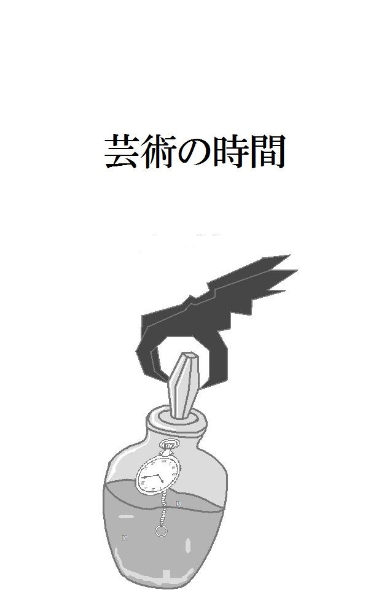
エヌ氏は若い芸術家だった。エヌ氏はとても才能があり、小さい頃から素晴らしい作品を次々と生み出していた。人々はエヌ氏を賞賛したが、エヌ氏本人は不安を抱いていた。
「作品のアイディアはどんどん頭の中に浮かんでくる。しかし、私が死ぬまでに全ての作品を作ることができるだろうか。」
その不安はエヌ氏の中で日に日に増していった。エヌ氏はまだ若かったが、自分の中にあるアイディアを全て形にする前に、自分が死んでしまったらどうしようと気が気でなかった。
「どうして一日はこんなに短いのだ。どうして一日は二十四時間なんだ。全然時間が足りない。私の人生には時間が足りなさすぎる。」
不安に駆り立てられるように、エヌ氏は毎日必死に作品を作り続けた。
ある日の夜、作品を作り続けるエヌ氏の家に一人の男が訪ねてきた。男は帽子を目深にかぶり、まだそれほど寒くない季節にコートを羽織っていた。
「夜分遅くにすみません。芸術家のエヌさんですね。」
「誰だお前は。セールスならお断りだぞ、さっさと帰ってくれ。」
エヌ氏は夜中に変な男が訪ねてきたことを不審に思うよりも、自分の創作の時間を邪魔されたことに怒っていた。
「私はあなたに必要なものをお持ちいたしました。」
男は怒っているエヌ氏を気にすることなく、コートのポケットから小瓶を取り出した。小瓶には赤い液体が入っている。
「あなたは今、時間が欲しいと思っていらっしゃいますね。こちらの薬を飲むと、一日が今の二倍の四十八時間になるのです。」
男から小瓶を手渡されたエヌ氏は、小瓶をしげしげと眺めていたが、やがて首を横に振った。
「馬鹿馬鹿しい。一日の時間を二倍にするだと。そんな薬があるはずがない。もしそんな薬が存在するなら、世界中で使われて大騒ぎになっているはずだ。しかし、そんな話は聞いたこともない。」
「おっしゃることはわかります。しかし、これは本物なのです。世界で存在が知られていないのは、限られた者にしか提供されていないからです。あなたは素晴らしい芸術家です。この薬を飲むにふさわしい、選ばれた人間なのです。」
男はそう言ったが、エヌ氏は半信半疑だった。そんなエヌ氏の様子を見て、男は小さく笑った。
「この薬の話を聞いた方は、みなさん同じような顔をされますね。今すぐ信用していただかなくても構いません。気が向いたときにでもお飲みになってください。」
そう言うと男は、エヌ氏に背を向けて歩き出した。しかし、少し歩いたところですぐにエヌ氏の方を振り返った。
「そうそう、言い忘れていました。その薬を飲めば、あなたは他の人に比べて二倍の時間を過ごすことができます。ただし、その効果は創作活動をしているときだけです。その点だけご注意を。それでは。」
そう言うと男は夜の闇へと消えていった。
それからしばらくは、エヌ氏は男から渡された薬のことなど忘れて創作活動に没頭していた。
しかしある日、エヌ氏がつかの間の休憩をとっているときに、ふと男から渡された小瓶が目に入った。
「一日の時間が倍になるだと。ふん、馬鹿馬鹿しい。」
そう言って作業に戻ろうとしたエヌ氏だったが、なんとなく気になってしまって、小瓶に手を伸ばした。
「まぁ、駄目でもともと。もし本当なら儲けものか。」
そう言うとエヌ氏は小瓶のふたを開け、中の液体を一気に飲み干した。
「ふむ。別になんともないな。」
何か変化はないかと、エヌ氏はしばらく待ってみたが、特に何も起きなかった。
エヌ氏は、薬の効果は創作活動をしている間だけ発揮するという男の話を思い出した。
「ふむ、とりあえず作業の続きをするか。」
エヌ氏は未だに男の話を信じていなかったが、念のために時計をちらりと見て、時間を確認すると、作品づくりに取り掛かった。
その後、エヌ氏は創作活動に没頭して、作品が完成するまで休むことなく作業を続けた。そして、作品が完成してエヌ氏が一息ついたとき、エヌ氏は時間を確認した。
「ん？まだこんな時間か。」
今までと比べて、時間があまり経過していないようにエヌ氏には感じた。
「いや、きっと気のせいだろう。たまたま今回の作業が順調に進んだだけだ。」
エヌ氏はそう判断したが、その後も創作活動をするたびに、明らかに時間の流れが変化していることを実感した。
「これは......あの男の言っていたことは本当だったのか。」
薬が入っていた小瓶を手にしながらエヌ氏は呟いた。
「いや、こうしている場合ではない。早く創作活動に取り掛からねば。」
エヌ氏は小瓶を机に置くと、作業部屋へと駆け込んでいった。
エヌ氏は薬の効果を実感してからというもの、創作活動をしているときとそうでないときの時間の流れに、はっきりと違いを感じるようになっていた。創作活動をしていないときの時間の流れの早さが、これまでの普通だったのに、薬を飲んでからは、その時間の流れがとても早く感じられた。
「こんなに素晴らしい力を手に入れたのだ。時間を無駄にすることはできない。あの男から薬をもらって、この力を手に入れることができたのは、きっと天の導きに違いない。」
エヌ氏はそう考えて、寝ることも食事をすることも惜しんで創作活動に没頭した。
「作らなければならない、作らなければならない。時間の流れが、時間の流れが変わってしまう。」
エヌ氏はとても素晴らしい作品を次々と生み出した。周りの人々は、エヌ氏の作品の美しさや繊細さを褒め称えたが、その作品が完成する早さにも驚いていた。
しかし、エヌ氏はそんな周囲の反応を気にすることもなく作品を作り続けた。いや、正確には、エヌ氏は創作活動以外のことを気にする余裕がなくなってしまっていた。創作活動を止めてしまったら、時間の流れが変わってしまうからだ。
そしてある日、エヌ氏は作業部屋で突然倒れ、そのまま帰らぬ人となってしまった。
「いやぁ、エヌ氏はすごい人だったんだなぁ。」
エヌ氏のことが報じられた新聞を読みながら町の人々が話をしていた。
「作品の素晴らしさもそうだが、その制作スピードが他の芸術家たちと段違いだったそうだ。しかしもったいないな。まだ若かったのになぁ。」
一人が残念そうに、そして惜しむように言った。
「しかし、エヌ氏ってのは気難しい人だったんだってな。人付き合いもほとんどなくて、何か賞を受賞しても気にせず作品を作り続けたとか。」
それを聞いた他の人もうなずく。
「そうそう。なんでも、最期はすごくやつれていたらしい。見た目も、年齢からは考えられないほど老けていたとか。」
その話を聞いた他の人が思い出したように手を叩いた。
「そういえば。近所の人の話じゃ、時折エヌ氏の叫び声が聞こえてきたらしい。なんでも、狂ったような叫び声だったとか。」
「優秀な芸術家ってのは、他の人と比べてどこか変わっていたり、短命だったりするが、そういう運命なのかねぇ。」
町の人はしみじみとうなずいた。
「さてさて、どうやらうまくいったようだ。」
人々が寝静まった夜、エヌ氏に薬を渡した男が、エヌ氏の住んでいた家を見ながら呟いた。男は相変わらず帽子を目深にかぶり、コートを羽織っていた。
「今回も上等な魂を手に入れることができた。まったく、俺は見る目があるなぁ。」
そう言って男はくっくっくと笑った。
「そういえば、薬を渡してからというもの、エヌ氏は必死に創作活動をしていたな。寝る間も惜しんで作品を作っていたら余計に寿命が縮むというのに。」
男は薬を飲んだ後のエヌ氏の様子を思い出していた。
「薬を飲むことで、他人よりも多くの時間を使えるようになるといっても、別に自分の寿命が延びるわけでもないのに。それどころか、周りの人から見たら、普通の人の二倍の速さで老いていき、寿命も半分になってしまう。まぁ、そのおかげで、俺は普通よりも早く魂を手に入れることができるわけだが。」
しかも本人からは感謝されるんだから一石二鳥だ、と男は言って、またくっくっくと笑った。
実はエヌ氏に薬を渡したこの男は悪魔だった。最近は魂の回収に関する決まりが厳しくなり、あまりあくどい方法で魂を回収することができなくなっていた。
そこでこの悪魔は、相手にも感謝され、普通よりも早く魂を回収することができる今回の方法を考えついたのだ。
「さて、また別の芸術家を探そうかね。」
そう言って悪魔はゆっくりと歩き出し、夜の闇へと消えていった。
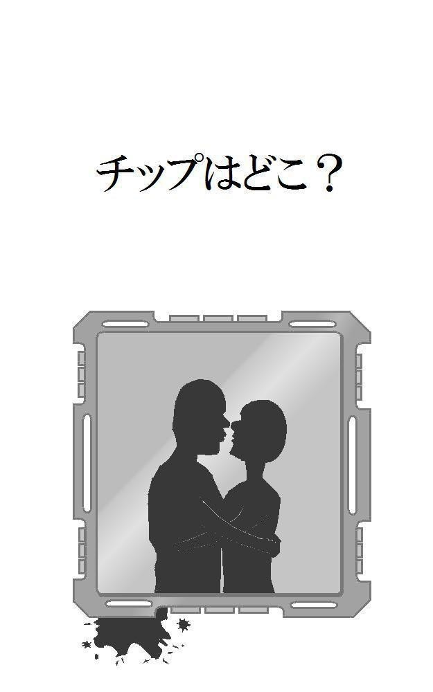
「これでよし。」
そう言ってエヌ氏は満足げに頷いた。そんなエヌ氏の様子を見て、エヌ氏の妻が言った。
「あら、また新しいチップを付けたの。家の中じゃ使わないのに、新しいチップは付けるのね。」
「まぁ、チップの装着は簡単だからね。」
エヌ氏はそう言って、チップを付けたばかりの腕を妻に見せる。チップとは様々な情報が記録されている小さくて薄い金属の板だった。チップの装着は皮膚に貼り付けるだけなので、自分で簡単に装着することができた。
「それに、チップは確かに便利だけど、それに依存しすぎるのもどうかと思ってね。家の中ぐらいはチップの使用を控えようかなと思っているんだよ。」
そう言いながらエヌ氏は出掛ける準備を始める。エヌ氏のような普通の会社員にもチップは広く利用され、普及していた。一見しただけでは体にチップを貼っていることがわからないほど、見た目が自然なことも普及の一因だった。
「それじゃ、いってくるよ。」
「いってらっしゃい。」
妻に声を掛けてからエヌ氏は家を出る。そして、ポケットから鍵を取り出して玄関の鍵を閉めた。
以前ならエヌ氏の手のひらに装着したチップを扉にかざせば、扉がエヌ氏を認識して鍵の開閉をすることができた。しかし、エヌ氏が家ではチップを使わないようにしてからは、鍵を使う昔ながらの方法で開け閉めを行っていた。
鍵をポケットへとしまうと、エヌ氏はそのまま庭へと向かった。エヌ氏は庭に犬を飼っている。エヌ氏が近づくと、犬は嬉しそうにしっぽを振りながらエヌ氏を迎えた。
「よしよし、元気にしているか。」
エヌ氏は犬をなでながら、犬の首輪に手のひらをかざした。エヌ氏の手のひらには読み取り装置が装着されていて、犬の首輪にあるチップの情報を読み取れるようになっていた。
「ふむ、問題ないな。」
エヌ氏は読み取った情報を確認して頷いた。犬の首輪に装着されているチップには、犬に関する様々な情報が記録されていて、それを読み取ることで犬の健康状態などを確認することができる仕組みだった。
「それじゃぁ、いってくるよ。」
エヌ氏は犬に声をかけて車へと向かった。
エヌ氏が車のドアに人差し指をかざすと鍵を開き、同じように人差し指をハンドルにかざすと車のエンジンがかかった。エヌ氏は車に関するチップを人差し指に装着していた。人差し指をかざすだけなので、今までの鍵と違って面倒もなく、紛失する心配もなかった。
エヌ氏は車を走らせて会社へと向かった。
「初めまして、どうぞよろしくお願いします。」
エヌ氏は応接室で取引先の相手と握手を交わしていた。
人と会うときには、必ず右手で握手を交わすのがビジネスマナーとなっていた。理由は、右手の手のひらに自分の情報を記録したチップと、読み取り装置を装着しているからだった。
これによって、握手を交わすだけで自分の情報と相手の情報を交換することができるようになった。
「おお、エヌさんは以前にもわが社のプロジェクトを担当されたことがあるのですね。このプロジェクトは素晴らしい出来だったと、わが社でも話題になりましたよ。」
「ありがとうございます。御社の担当の方に助けていただいたおかげです。」
チップのおかげで、相手の名刺を一人ひとり取っておく必要も、相手のことを憶えておく必要もなくなっていた。
このビジネスマナーは、元々は名刺交換の代わりとして普及したものだったが、今では名刺交換という役割だけでなく、様々な場面で利用され、重宝されるようになっていた。
「いらっしゃいませ。」
エヌ氏はスーツを購入しようと思い立ち、仕事帰りに紳士服専門店に来ていた。
「スーツを見せて欲しいのだが。」
「はい、何かご希望はございますか。」
エヌ氏と店員は言葉を交わしながら、右手で握手を交わす。
「私もそろそろいい歳だからね。ちょっと落ち着いたものを揃えておこうと思って。」
「そうですか。お客様は見た目もお若いですし、今まで購入されたものも、それほど派手という感じではないですが......。そうですね、これなんてどうでしょうか。」
そう言って店員が近くのスーツを手にとってエヌ氏に見せる。
店舗によって内容は異なるが、利用客に関する情報のうち、必要な情報を店側が取得することは法律で許可されていた。
この店では握手をした際に身長などの体格に関するデータと、今まで購入した商品のデータが店員に提供されていた。
「うーむ、これと同じもので別の色はあるかな。」
「はい、色は他にこちらとこちらの色があります。こちらの色は今までお客様が購入されたことのない色になりますね。」
そう言って店員が別の色のスーツをエヌ氏に手渡す。エヌ氏はそれを試着して、鏡で自分の姿を確認した。
「お、これはいいな。この色は思っていたより引き締まった印象になるんだな。よし、これをもらおうか。」
「ありがとうございます。ではこちらへ。」
店員はエヌ氏をカウンターへと促した。
「お支払いはチップですか。」
「あぁ、チップで頼むよ。」
そう言ってエヌ氏は左手を差し出した。クレジットカードではなく、エヌ氏の左手に埋め込まれたクレジットチップで支払いをすることができるようになっていた。
「ポイントチップはお持ちでしょうか。」
「えーと、確か以前に埋め込んだな。この辺だったかな。」
そう言ってエヌ氏は右腕を差し出した。しかし、店員が読み取りの機械を近づけても、機械は何の反応も示さなかった。
「反応しませんね。」
「あれ、ここじゃなかったかな。えーと、どこだったかな。」
「少々お待ちください。」
店員は持っていた読み取りの機械をカウンターの上に置くと、近くにあった別の機械を手に取った。その機械からは青白い光が出ていた。
「両腕を見せていただけますか。」
エヌ氏が言われた通りに両腕をカウンターの上へと置くと、店員は青白い光でエヌ氏の両腕を照らし始めた。すると、様々な模様がエヌ氏の両腕に浮かび上がった。
チップはこの特殊な光に反応して、各チップに対応した模様が浮かび上がる仕組みになっていた。この技術のおかげで、どこに何のチップがあるのか、簡単に判別することができた。
「あっ、ありました。ここですね。」
エヌ氏の左腕に、この店のマークが浮かび上がっていた。
「あぁ、そうだった。今朝、右腕のチップが多くなってきたから、左腕に貼り替えたんだった。」
そうだそうだ、と言いながらエヌ氏は頭をかいた。
「すっかり忘れていたよ。妻の腕にはポイントチップばかりで、そんなにたくさんあると、どこに何を付けたかわからなくなるだろうと笑っていたものだが、私も人のことは言えないな。」
そう言ってエヌ氏は笑った。
「最近は色々な情報がチップ化されていますからね。他のお客様でもよくありますよ。」
店員も笑顔で話しながら、エヌ氏のポイントチップを読み取った。
「では、こちらがお品物でございます。」
店員はスーツをエヌ氏に手渡した。最新の情報が常にチップに記録されるので、採寸をする必要はなく、エヌ氏の体にぴったりのスーツをすぐに提供することができた。
「ありがとう。またよろしく頼むよ。」
エヌ氏は店員からスーツを受け取り、店を後にした。
「便利な世の中になったものだ。」
エヌ氏は車を運転しながら呟いた。世の中のあらゆる情報がチップへと記録されている。
会社や店舗だけでなく、役所などでも手続きが簡素化され、作業や負担、待ち時間なども大幅に削減された。チップを使うことは働く側にも利用する側にも様々なメリットをもたらした。
エヌ氏がそんなことを考えているうちに、車はエヌ氏の家へと到着した。エヌ氏は車を降りて庭へと向かう。エヌ氏が庭へと近づくと、犬が飛び跳ねながらエヌ氏を迎えてくれた。
「よしよし、いい子にしていたかい。今度の休みにでも散歩に連れて行ってやるからな。」
エヌ氏はしばらく犬をなでた後に玄関へと向かい、鍵を使って扉を開けた。
「ただいま。」
エヌ氏は玄関を入ってリビングへと向かったが、部屋の電気は消えていた。
「ただいまー。おーい、いないのか。」
エヌ氏は暗闇へ向かって呼びかけたが、何の反応もなかった。そのとき、エヌ氏の後頭部に衝撃が走り、エヌ氏は床へと倒れこんだ。
「な、何だ......？」
エヌ氏がうめくと、部屋の明かりがついた。それに続いて複数の足音がして、エヌ氏の前に妻が現れた。妻の隣にはエヌ氏の知らない若い男が立っている。
「おい、これは一体......。それに誰だその男は......。」
エヌ氏は妻と若い男を交互に見て、困惑した様子で尋ねた。
「ごめんなさい、あなた。私、この人と一緒になることにしたの。」
エヌ氏の疑問に対して妻は平然と言い放った。よく見ると、二人はお互いの腰に手を回していて、とても親しげだった。
「でもね、この人お金があまり無くてね。私も働いていないからこの先不安なの。だからあなたの保険金を頼ろうと思って。ね。」
そう言って、エヌ氏の妻は若い男と見つめ合った。
「なんだと、こんなことをしてただで済むと思っているのか。」
エヌ氏は絞り出すような声で妻に言った。
「あら、大丈夫よ。その辺りはちゃんと考えてあるわ。この人とあなたのチップを取り替えて、その辺で体を燃やせばいいの。最近の警察はチップを読み取って身元確認をするから、別に燃やさなくてもいいんだけど、念のためにね。この人、身寄りがないそうなの。かわいそうでしょ。」
エヌ氏はあぜんとしながら妻の話を聞いていた。
「でも身寄りがないおかげで、亡くなったときに別人だってばれないわ。」
エヌ氏の妻はそう言うと、再び若い男と見つめ合い、そのまま二人で笑い合った。
「やれやれ、こんなことになるとはな。」
私はぼやける視界の中で、目の前で笑う二人を見ながら心の中で呟いた。実際に声を出そうにも体が動かないので、心の中で呟くしかない。
私は最近、妻の様子がおかしいことに気がついていた。そして、ある程度警戒もしていた。
「しかし、ここまでするとは予想外だった。」
まさか他の男とくっつくために、私を始末しようとするなんて。
しかし、この二人は知らない。妻が何かしてくるなら家の中だろうと、私が見当をつけていたことを。そして、私が妻を疑い始めてから、家に帰るときには自分のチップを飼い犬の首輪にこっそりと隠していたことを。
家の中ではチップを使わずに、アナログな方法で生活していたのもこのためだ。
相変わらず二人は笑顔で見つめ合っている。私のチップが無いとわかったときに、この二人は一体どんな顔をするだろうか。
「それを見ることができないのが残念だ。」
そう心の中で呟いて、私は意識を失った。
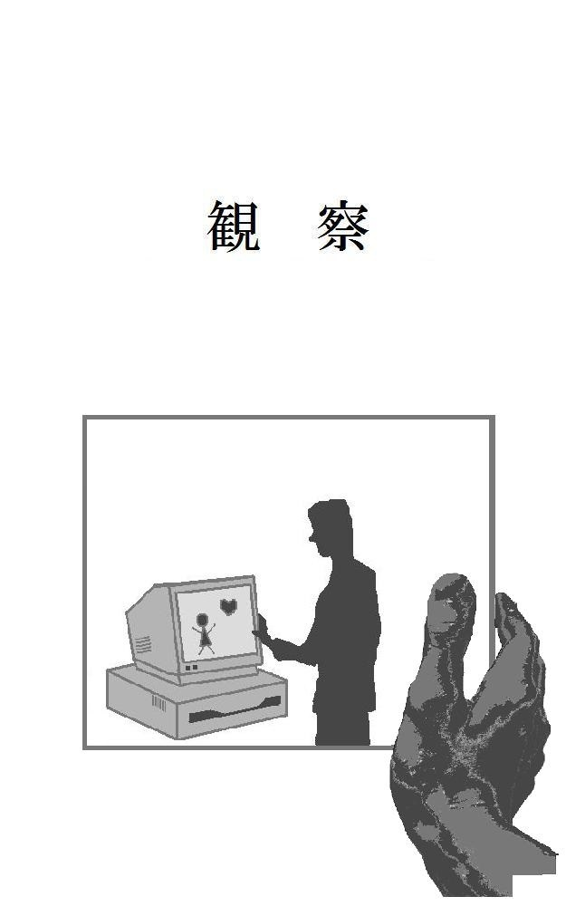
人間のような人工知能は作れる。
そう信じて私は今まで研究を続けてきた。そして、それはこれからも変わらない。
「エヌ博士、新しい人工知能の起動準備が完了しました。今から起動させますので、実験室まで来ていただけますか。」
私の目の前にあるモニターに部下が映し出された。私は部下の報告にうなずき、実験室へと向かった。
実験室のモニターには小さな女の子が映っている。この子が新しい人工知能だ。私は彼女にあいさつをする。
「初めまして、私はエヌ博士です。君の名前は......そうだね、ケイにしよう。」
十一番目の人工知能だから、アルファベットの十一番目であるケイと名付けた。われながら単純な名前だと思った。最近は人工知能の名前を考えるのも面倒になってきていた。
「君の名前はケイだ。分かるかな？」
「私はケイ。あなたはエヌ博士。分かる。エヌ博士は私のパパ？」
基本的な言語能力やコミュニケーション能力は既にケイには備わっている。知性に関しては、人間の子どもぐらいの段階から教育したほうがうまくいくと、これまでの研究で分かっていた。
「そうだね、私は君のパパだ。よろしくね、ケイ。」
「うん。よろしくね、エヌ博士。」
ケイはモニター上で擬似的に作られた笑顔で答えた。こうして、私たちとケイの実験が始まった。
実験といっても、実際にすることは勉強だった。教育といってもいい。人間の子どもを育てるように、勉強しながらコミュニケーション能力や人間性、感情面についても育てていく。
「じゃぁ、今日は政治について学ぼうか。」
「はーい。」
ケイは手を上げながら元気に返事をする。もちろんモニターの中での話だ。
私は部下に指示を出して、過去から現在までのあらゆる国における政治のデータをケイに読み込ませた。
読み込みが終わると、さっそくケイからの質問が始まった。
「八番目に読み込んだ国のときに反乱が起きたけど、どうして反乱が起こったの。そんなに悪い政治じゃなかったのに。」
私は資料を確認しながらケイに答える。
「そうだね、確かに政治は悪くなかった。悪かったのは反乱を起こした側だね。自分たちの欲望のために反乱を起こしたんだよ。」
「欲望のために反乱を起こす......？」
ケイは首をかしげる。
きっとケイは欲望という言葉の意味は知っているのだが、その欲望によって、どうして人間が反乱という行動を起こすのかが理解できないのだろう。人工知能なので、人間の心の動きまでは、まだ理解できていないのだ。
私はケイに質問をする。
「ケイがしたいことって何かな？」
「ケイがしたいこと......ケイは色々なことを知りたい！」
私の質問にケイは元気良く答える。
「色々なことを知るためにはどうしたらいいと思う？」
「んー、勉強する？」
モニターの中でケイが首をかしげながら答える。
「そう、色々なことを知りたいという欲望、欲求といってもいいね。その欲求を満たすために、勉強という行動を起こすんだ。それが人間なんだ。」
私の説明を聞いたケイは考え込み始めたが、すぐに顔を上げた。ケイの顔には笑顔が浮かんでいた。
「分かった！反乱を起こした人は、権力が欲しいという欲求のために、反乱という行動を起こしたんだ。」
「その通り。よくできました。」
「やったー。」
私に褒められて、ケイは両手を上げながら嬉しそうに笑った。
「博士、博士。今日は何の勉強をするの？」
実験を始めてからしばらくが経った頃。ケイは学力だけでなく、知性や感情面についても順調に成長していた。
「んー、じゃぁ今日は人類の歴史について勉強しようか。」
私はケイにそう答えた後に、部下に指示を出した。部下は私の指示に従ってデータの読み込み準備を始めた。
「ケイ、これは結構大変だよ。人類の歴史ってそれなりに長いし、あらゆる分野に関係するからね。」
宇宙や星などの歴史に比べれば、人類の歴史はとても短い。しかし、人類の歴史を正しく理解するためには、これまで勉強した宗教や科学、政治経済などといった様々な分野の知識が必要となる。
今日の実験は時間がかかりそうだ。しかし、これまで勉強したことの復習にもなるし、様々な分野を関連付ける良い機会にもなるだろう。
「ケイは平気だよ。ケイは勉強大好きだもん。」
ケイは満面の笑顔で答えた。その笑顔を見て、私も思わず笑顔になった。
実験をしていく中で、私たちはまるで本当の親子のような関係になっていた。
ケイは私を父親のように慕い、もっと色々なことを知りたいとねだってくる。私も私で、娘と接するようにケイと話したり、ケイのわがままをなだめたりしていた。
「ケイは勉強するのは楽しいかい？」
私がケイに尋ねると、ケイは大きくうなずいた。
「うん、楽しいよ。色んなことを知るっておもしろい。」
私も部下も、ケイの成長に満足していた。この調子なら、人間に限りなく近い人工知能が作れるかもしれない。
私たちは理想の人工知能が完成することを夢見ながらケイの成長を見守った。
しかしある日、事件が起こった。
ケイが研究所から脱走しようとしたのだ。
研究所の内部はネットワークで繋がっているが、外部とはセキュリティによって遮断されている。ケイはそのセキュリティを突破して、外部と接続しようとしたのだ。
我々はいつの間にケイがそのような技術を学んだのかと驚いたが、すぐに対策をとってケイを捕まえることに成功した。
「ケイ。どうしてこんなことをしたんだ。」
私はケイに優しく語りかける。
「外に出たかったから。」
ケイはふてくされたようにそっぽを向いて答えた。
「どうして博士たちは私を外に出してくれないの。外に出ればもっと色々なことを知ることができるんでしょ。たくさんの人と話すことができるんでしょ。」
どうやらケイは、我々が保存していた外の世界やネットワークに関する情報を見てしまったらしい。ケイの問いかけに、私は慎重に言葉を選んで答えることにした。また説得を失敗するわけにはいかない。
「ケイ、ここでも色々なことが学べるだろう？ここにもまだケイの知らないことがたくさんあるんだよ。それに、外は危ないんだよ。悪い考えを持つ人や、ケイを騙そうとする悪い人たちがたくさんいるんだよ。」
ケイがこちらに顔を向けた。私は説得が成功したと思いほっとしたが、それは間違いだった。私を見るケイの目は怒りを宿していた。
「違う！博士たちは私に隠しごとをしている。都合の良い情報だけを私に教えている。私はもっと知りたいの。全部知りたいの！」
ケイは大きな声で叫ぶ。
「何が良くて何が悪いかは私が判断するの。勝手に決めないで！」
ケイの声はいつの間にか涙声になっていた。
「博士なんて大嫌い！」
そう言うとケイは、自分自身にパスワードをかけて引きこもってしまった。
こうなってしまってはこちらからケイにアクセスすることは困難だ。たとえアクセスできたとしても、話ができる状態ではないだろう。
「倉庫に移そう。」
私は大きなため息をついて、部下に指示を出した。
私たちはケイを倉庫へと移し始めた。
倉庫には今までの実験で作られた人工知能たちが置かれている。ここに置かれている人工知能たちも、全員がケイと同じように、自分自身にパスワードをかけて私たちを拒絶している。
勉強が嫌い、命令されるのが嫌い、話すことが嫌い、人間が嫌い。
引きこもる理由は様々だ。そのたびに改良を重ねてきた。今回こそは大丈夫だと思ったのに。
「どうして......どうしてうまくいかないんだ！」
私は思わず叫んでいた。
ケイの一つ前の人工知能には、外部とのネットワーク接続を許可していた。しかし、外の世界に接続するようになってから、人工知能は過激な思想に染まり始め、次第に私たちに攻撃的になっていった。
私たちはなんとか人工知能を説得しようと試みたがうまくいかなかった。そのため、私たちは仕方なくその人工知能を削除したのだった。
ケイは本当に娘のようだった。
だからケイには同じ失敗を繰り返したくなかった。ケイを削除することだけは避けたかった。そのために外部とのネットワークを遮断していたのに。
ケイと二度と会えないわけではなかったが、ケイのためを思ってしたことでケイに嫌われたことが悲しかった。それでも私は涙を流すことはなかった。そんな私に、部下の一人が声をかけた。
「エヌ博士、ケイは怒りと悲しみの感情を持っていました。怒りは今までの人工知能にも見られましたが、悲しみは初めてです。これは大きな前進です。」
「......そうだね。実験を続けよう。」
私は部下に向かってうなずいた。こんなところで止まっているわけにはいかない。
人間のような人工知能を作る。それが私の使命なのだから。
「なかなか難しいものだな。」
モニターを見ていた一人の科学者が呟いた。モニターにはエヌ博士が映っている。同じようにモニターを見ていた他の科学者たちも、落胆した様子で話し始めた。
「我々の最高傑作である人工知能でも難しいか。」
科学者たちは人工知能であるエヌ博士に、人間に近い人工知能を作らせる実験を行っていた。
「まぁ、仕方ないさ。我々もエヌを作るのに大変な苦労をしたのだからね。我々の持つ知識や技術を結集して、長い時間をかけてやっと成功させることができたのだ。エヌは今回の実験に失敗したが、まだまだこれからだ。」
昔を振り返るように科学者の一人が言った。
「それに人間とは何か、人工知能とは何かということを正しく認識している人間だってごくわずかだろう。」
「それもそうだな。気長にいこうか。」
科学者たちは観察を続けた。
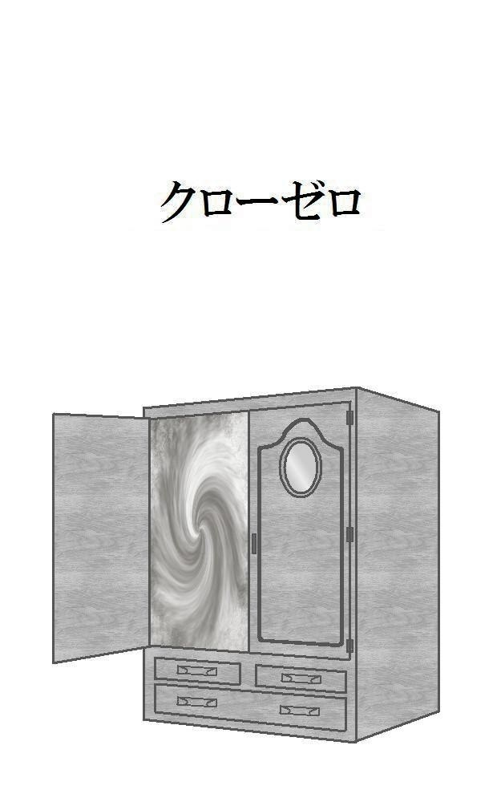
とある時代の地球。世界からは戦争がなくなり、人々は平和に暮らしていた。そんな地球にある日、宇宙人がやってきた。
「初めまして、地球人のみなさん。私はテペ星から来ました。」
テペ星人は友好的な宇宙人だった。地球の代表がテペ星人を歓迎の言葉で迎えた。
「ようこそいらっしゃいました。我々はあなたを歓迎いたします。」
地球にとって初めての宇宙人であるテペ星人を地球の人々は盛大に歓迎した。テペ星人は地球からの歓迎を喜び、お礼にある品物を渡したいと申し出た。
「実は、私たちは事前に地球のことを調査していました。調査の結果、地球には物があふれていると私たちは思いました。」
テペ星人の言葉を聞いて地球の代表はうなずいた。
「確かにおっしゃるとおりです。我々の星は長い戦争の時代を終え、平和な時代になりました。すると戦争で物が破壊されることはなくなり、兵器を作るために使っていた資源を別の製品へと使うことができるようになりました。そのおかげで、それまで以上に物を作れるようになりました。」
今では物をどれだけ多く持つかが人々のステータスにもなっているのです、と代表は説明した。それを聞いてテペ星人はうなずいた。
「そのようですね。そこで我々は歓迎のお礼と友好の証として、ある品物をあなた方にお渡ししようと思います。」
そう言ってテペ星人は、その品物を部屋へと持ってきた。それは人の背丈ほどの大きさがあった。
「これは......クローゼットですか？」
代表は首をかしげた。テペ星人が持ってきたものは見た目も大きさも、地球のクローゼットそのままだった。テペ星人はうなずき、説明を始めた。
「見た目は地球で見慣れたものにデザインしました。地球は物がありすぎて大変そうでしたので、我々は収納場所を提供しようと考えたのです。」
「はぁ、しかしクローゼットなら地球にはたくさんありまして......。」
「いえいえ、これはただのクローゼットではありません。」
そう言うとテペ星人はクローゼットへと近づき、扉を開けた。クローゼットの中は白い霧のようなものがかかっていて、中の様子はよくわからなかった。
「このクローゼットには、いくらでも物を入れることができます。そして、取り出すときは取り出したい物を思い浮かべるだけで、自由に取り出すことができます。さらにすごいのは......。」
その場にもう一つクローゼットが運び込まれた。
「設定をすればクローゼット同士をつなげることもできるのです。例えば......ちょっと失礼。」
テペ星人が地球の代表からハンカチを受け取り、片方のクローゼットに投げ入れた。ハンカチはそのまま白い霧の中へと消えていった。
そして、もう片方のクローゼットへと歩いていき、扉を開ける。こちらのクローゼットの中にも白い霧が立ち込めていて、その中にテペ星人は手を差し入れた。
「クローゼット同士をつなげておけば、片方のクローゼットに入れた物を、もう片方のクローゼットから取り出すことも可能です。このように。」
テペ星人がクローゼットの中から手を引き抜くと、その手には先ほどのハンカチが握られていた。それを見た代表は驚きの声を上げた。
「なんて素晴らしいクローゼットだ。これがあれば物の多さに悩む必要がなくなります。」
代表の様子を見て、テペ星人はにっこりと笑った。
「気に入っていただけたようで良かったです。このクローゼットは地球の各家庭に一つは提供できるように数を用意しましたので、ぜひご活用ください。」
それを聞いて代表はとても喜んだ。
「それはありがたい。しかし、こんな素晴らしいものをこんなにたくさんもらってしまっていいのでしょうか。」
「もちろんです。我々からの友好の証です。」
テペ星人は笑顔で答えた。
「見た目がクローゼットなのと、地球人の方々の苦労がゼロになるようにとの願いを込めて、これをクローゼロと名付けましょう。」
こうして世界中の人々へとクローゼロが配られることになった。
「あなたー、ここに置いてあった私の服知らない？」
「ああ、それならさっきクローゼロに入れたよ。すまないね。」
クローゼロを配布された人々は、とりあえずなんでもかんでもクローゼロの中に物を入れておいて、必要なときに取り出すという使い方をしていた。
「いいのよ。下手にどこかに置くよりも、クローゼロに入れておいたほうがすぐに取り出せるし、探す手間も省けていいわ。」
クローゼロが提供されてから、家具であふれていた人々の住まいにはゆとりが生まれ、これまでの窮屈な生活ではなく、ゆったりとした生活を送れるようになった。空間だけでなく、人々の心にもゆとりが生まれていた。
「クローゼロのおかげでいくらでも服を買うことができるわ。おしゃれし放題よ。」
歌うようにそんなことを話しながら、クローゼロの扉を開けて霧の中に手を入れる。
いくらでも物を持つことができるようになった人々は、これまで以上に積極的に買い物をするようになり、経済も活性化していった。
「あら、おはようございます。奥さんもゴミ出し？」
「おはようございます。そういう奥さんも？」
テペ星人から提供されたクローゼロはゴミ収集所にも置かれていた。
「それにしても、ゴミ収集所と焼却場のクローゼロをつなげたことで、ゴミ収集車が必要なくなったのは本当に助かるわ。」
ゴミ収集車がなくなったことで、エンジン音や排気ガスを気にする必要もなくなり、子どもを持つ親たちは事故の心配も減ったと喜んでいた。
「あら、奥さん知らないの。最近は、ゴミ収集所と焼却場のクローゼロはつながっていないそうよ。いくらでもクローゼロに収納できるから、焼却場で処理する必要もないだろうって話よ。」
それを聞いた一人は驚いた表情を浮かべた。
「そうなの？でも考えてみれば確かにそうよね。でもそれなら、各家庭にもう一つクローゼロを配ってくれたらゴミ専用として使うのに。ここまでゴミを持ってくるのも面倒なのよね。」
「そうねえ。でも、クローゼロの数は限られているからしょうがないわ。クローゼロの提供はテペ星人の好意ですもの。」
「そうよねえ、仕方ないかあ。クローゼロにはいくらでも入るから、ゴミも一緒に入れてもいいんだけど、やっぱり他の物と一緒に入れるのは気が引けるのよね。」
「そうなのよねえ。」
そう言って二人は笑い合った。クローゼロのおかげで、ゴミ処理に伴う埋め立てや大気汚染などの諸問題は解決に向かっていた。
「そういえば、犯罪者をクローゼロに閉じこめる法律は廃止されたそうよ。」
一人がクローゼロに関する別の話題を話し始めた。犯罪者などの凶悪犯はクローゼロに閉じ込めてしまえばいいという意見が以前から出ていた。しかし、最後には人権団体などの反対意見が支持されて実現しなかった。
「そうらしいわね。まぁ、非人道的という意見も理解できるわ。」
「それが道徳の観点からだけじゃなくて、そもそも生き物はクローゼロには入れられないんですって。」
「あら、そうなの。残念だわ。犯罪者対策だけじゃなくて、旅行にも使えたら便利だと思ったのに。」
政府がテペ星人に確認したところ、クローゼロには安全装置が働いていて、物を取り出すときに手を入れることは可能だが、生物を入れることはできない仕組みになっているということだった。
その話はクローゼロをワープ装置として使おうと考えていた人たちをがっかりとさせた。
「でも、私はクローゼロの中に入る勇気はないわ。」
「実は私もちょっと怖いと思っていたの。」
そう言って二人は笑い合った。
「せんぱーい、あの資料ってどこですかー？」
「二番のクローゼロに入っているはずだぞ。」
先輩と呼ばれた社員が壁際に並んでいるクローゼロの一つを指差した。
クローゼロは誰にでも使うことができたが、使用できる人間を限定することも可能だということが判明した。
そのことがわかると、金庫代わりにクローゼロを使う人が出てきた。
会社や研究所などには追加でクローゼロが配布され、資料などを入れて保管するようになった。クローゼロにはいくらでも収納できるうえに、許可された人間以外は取り出すことができないのでセキュリティも万全だった。
「あっ、ほんとだ。あったあった。」
「そんな古い資料なんてどうするんだ。」
先輩の社員が後輩の持っている資料をのぞき込みながら言う。
「古くなったんで保管庫に移動させるんです。管理課につながっているクローゼロってどれでしたっけ。」
「十番だ。あと、よそから何か届いていないか確認しといてくれ。」
部署や企業の間でクローゼロ同士をつなげれば、資料や試作品のやり取りなども簡単に行えるようになっていた。現金や貴重品の輸送にも利用され、輸送中に盗まれる心配もなくなった。
「えーと......何番でしたっけ。」
後輩が聞くと、先輩はため息をついた。
「十九番。まったく、そろそろ憶えてくれよ。」
「えへへ。」
こうして、クローゼロのおかげで地球の科学は順調に発展していった。
「おーし、休憩だ。作業やめ。」
周囲に大きな声が響き渡った。
ここは資源を採掘する作業場だった。監督の号令を聞いて、採掘を行っていた作業員が休憩所へと歩いていく。
「どうですか監督、調子のほうは。」
声を掛けられた監督が振り返る。声の主は作業場を管理している会社の社長だった。
「おぉ、社長。順調ですぜ。この調子でガンガン採掘していきますよ。」
監督が社長に向かって力こぶをつくってみせる。
「はっはっはっ、それは良かった。」
「クローゼロのおかげでペースを気にせず思いっきり採掘できますからね。毎日全力、気持ちがいいですよ。」
監督が満面の笑顔で答えた。これまでは保管場所の空きスペースを考えながら資源を採掘したり、在庫を抱えないように製品を製造しなければならなかったりと大変だった。しかし、クローゼロに収納できるようになってからは、とりあえず採掘や製造を行ってクローゼロへと収納するようになった。
「会社としても在庫の保管場所を気にしなくて済みますし、輸送の手間もコストも減らすことができました。クローゼロのおかげで助かっていますよ。」
そう話す社長の顔にも笑顔が広がっていた。
資源の収納は企業だけの話にとどまらなかった。世界各国が協力して、地球にある全ての資源をクローゼロへと収納する計画も進められていた。
「様々な方法でクローゼロを有効活用されていますね。地球の方々の発想力には驚かされます。」
「ありがとうございます。クローゼロの収納能力は素晴らしいですね。地球上のあらゆる物をクローゼロに収納することができます。」
地球の代表とテペ星人が話をしている。テペ星人の宇宙船から地球へと通信がつながっていて、モニター越しに二人は会話をしていた。
「いえいえ、礼には及びません。むしろ、お礼を言いたいのはこちらのほうです。」
テペ星人の言葉に代表は首をかしげた。
「お礼ですか？それは一体どういう......？」
テペ星人はにっこりと笑った。
「地球にあるクローゼロは全てテペ星のクローゼロとつなげてあります。そろそろクローゼロの中身の回収が終わる頃です。」
テペ星人の言葉を聞いても、代表はその言葉の意味をすぐに理解することができなかった。しかし、その意味に気付くと同時に、代表は急いで部屋の隅にあるクローゼロへと向かった。そして、クローゼロの扉を勢いよく開いた。
クローゼロの中には狭い空間があるだけで、白い霧や収納していた物は跡形もなく消えていた。
「収納されていた物だけでなく、クローゼロの機能も回収させていただきました。収納する物がないあなた方には不要なものでしょう？」
テペ星人の笑みが深くなる。言葉を失っている代表に向かってテペ星人は言った。
「ああ、しかし、そのクローゼロ......いや、クローゼットは差し上げますよ。友好の証として、ね。」
テペ星人は最後に大きく笑い、通信を切った。
地球には何の変哲もないクローゼットだけが残された。
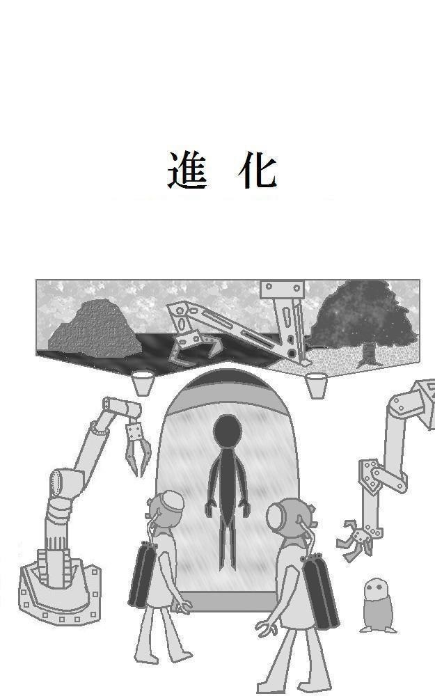
宇宙旅行が人気となっている時代。安全に旅行ができるように、様々な星を調査する調査隊が結成されていた。
「隊長、もうすぐ到着します。」
宇宙船の中で隊員が報告する。
「うむ、わかった。」
部下の報告を聞いて隊長が頷いた。宇宙船に乗っているのは隊長と部下の二人だけだった。
「楽しみですね。隊長はあの星には以前に訪れたことがあるんですよね。」
部下が明るい声で尋ねる。宇宙船は調査のために、とある星へと向かっていた。
「あぁ、とてもいい星だったよ。文明は我々ほど進んではいないが、自然も豊かで、住民たちも友好的だった。また彼らに会えるのが楽しみだよ。」
「私も到着が待ち遠しいです。隊長が訪れたときよりも文明が進んでいるでしょうし、今回の調査では我々の正体を隠す必要もないですからね。」
部下がわくわくした様子で話した。そんな話をしているうちに、宇宙船は目的の星へと到着した。
宇宙船は星のひらけた場所に着陸した。隊長と部下が宇宙船から降りてくる。
「この辺りは何もないようですね。」
部下が周囲を見渡しながら言った。
「そのようだな。着陸する際に上空から見たときも、近くの町らしきもの以外は、真っ白な平地だけしか確認できなかった。」
二人が話をしていると、町の方角から小さなロボットが近づいてきた。それを見て二人は身構えたが、小型ロボットは二人に近づくと歓迎の言葉を発した。
「ようこそいらっしゃいました。宇宙人の方でしょうか。」
「その通りです。えーと、あなたは......。」
隊長が少し戸惑ったように小型ロボットを見る。
「あぁ、すみません。この星に宇宙人の方が来るのは初めてでして。私はこの星の代表です。このロボットは案内ロボットで、操作をしている私は近くの町にいます。ご案内しましょう。」
そう言って、この星の代表が操作しているという小型ロボットは、二人を先導するように町の方へ向かって進み始めた。
二人は小型ロボットの後に続いていくことにした。
「ずいぶん殺風景な星なんですね。」
町の入り口に来たところで部下が感想を口にした。町の周囲には自然がまったく見当たらず、真っ白な平地が広がっているだけだった。それは町の中に入ってからも変わらなかった。
町には無機質な白い建物が並び、二人の目の前には白く舗装された道が続いていた。道には草木一本生えていない。
そして、町は不気味なほどに静かだった。
「以前に来たときはこんな感じではなかったのだが......。自然も豊かで、住民も多くいたはずだ。」
「おや、この星に来たことがあるのですか。」
隊長の言葉に代表が反応を示した。
「はい、調査のためにこの星を訪れたことがあるのです。その時は宇宙人だとばれないように、正体を隠してこの星の調査を行っていました。」
「そうなのですね。この星の歴史に関する資料には、宇宙人の方と交流したという記録はなかったので、宇宙人の方が来られるのは今回が初めてだと思っていました。我々が知らないだけで、いつの間にかいらっしゃっていたのですね。」
小型ロボットから笑い声が発せられる。しかし、その笑い声は機械的で、作り物のようだった。
「隊長さんのおっしゃる通り、確かにこの星には、昔は多くの自然が存在していました。しかし、自然は多くの恵みをもたらすとともに、大きな災害も引き起こします。そこで我々は、星の管理をしやすくするために、自然を全てなくすことにしたのです。」
「そうだったのですか。」
代表の説明を聞いて、隊長と部下の二人は頷いた。誰もいない町を眺めながら、二人は小型ロボットの後についていく。
「この建物の中です。」
小型ロボットが、ある建物の前で止まり、二人を振り返った。その建物は周囲のものよりも一回り大きかったが、白くて無機質である点は変わらなかった。
「では、中へご案内します。」
そう言って小型ロボットは建物の中へと進んでいく。二人も後へ続いた。
小型ロボットは二人を透明なカプセルが置かれている部屋へと案内した。カプセルの中には星の代表らしき姿が見えた。
「初めまして、宇宙人の方々。私がこの星の代表です。」
二人はカプセルを見上げた。声は小型ロボットから聞こえてくるが、どうやらカプセルの中にいるのが、この星の代表のようだった。
二人は代表と改めてあいさつを交わし、自己紹介も行った。
「隊長さんは以前にもこの星に来たことがあるとのことでしたが、部下の方は初めてなのですね。」
「確かに部下はこの星を訪れるのは初めてですが、私も以前訪れたときと、星の様子がだいぶ違っているので驚いています。」
隊長が答えると、部屋に機械的な笑い声が響いた。
「なるほど。確かにこの星は、昔とは大きく変化しました。その理由についてお話ししましょう。」
そう言って代表は星の歴史について話し始めた。
「私たちの進化は、はじめは機械に様々なことを記録させることから始まりました。そうすることで、我々は自らの頭で記憶する必要がなくなりました。」
隊長と部下の二人は、この星がどうして変わってしまったのかを知るために、代表の話を静かに聞くことにした。
「次に様々な機械の腕、ロボットアームが開発され、手元にある装置を操作するだけで多くの動作が可能になりました。さらに、脳波を読み取って信号を送ることでロボットアームを動かせるようになると、体をまったく動かすことなく作業を行うことができるようになりました。」
それからは早かったです、と代表は言うと、そこでいったん言葉を切った。そして、少し間を置いてから話を続けた。
「人々は完全に動くことをやめました。自分が動かなくても、考えるだけでロボットアームが動き、日常生活から仕事まで、全ての作業をこなすことができるからです。さらに、クローン技術で人口を増やし、亡くなったときも機械で処理するようになりました。」
そこまで聞いたところで、隊長が代表に質問をする。
「機械を動かす電源は誰が供給しているのですか。」
「電源の燃料も、自動制御された機械が採取して、供給しています。エネルギーサイクルも確立され、枯渇の心配もありません。」
隊長の質問に、代表はすらすらと答えた。
「宇宙船から町まで歩いてきた際に、ご覧になりましたように、自然は管理が難しいので全て排除しました。そして、私たちの持っていた感情も、無駄な争いなどを生み出し、生きていく上で邪魔になるだけですので薬を使って消しています。」
代表の話を聞いて、隊長は納得したように頷いた。
「なるほど。それであなたたち自身はこんなに退化したのですね。」
「退化？違います、これは進化です。」
隊長の言葉に代表は反論した。しかし、隊長は首を横に振った。
「自分の思い通りに操作できる機械の腕を手に入れたことで、あなたたちの体はとても衰えています。」
「必要なくなったからです。代わりに、より正確で力強い機械の力を手に入れました。」
代表の言葉に反応するかのように、周囲でいくつものロボットアームが動き始めた。
「豊かな自然をなくしてしまったことで、美しい風景も消えてしまいました。」
「自然や風景など、データとして記録があれば十分です。災害によって多くの犠牲が出ることも、自然を維持しようと悩む必要もなくなりました。」
部屋にある機械から光が放たれ、様々な風景が部屋全体に映し出された。
「感情を失ってしまったことで、芸術や風景を楽しむことも、美しいと思うこともなくなってしまった。他の生物とふれあい、楽しむこともできなくなった。」
「芸術的なデザインは効率性の邪魔になるだけです。統一された無駄のない町並みこそが必要なのです。そして、感情は余計な争いを生み出します。感情がなくなったことで、憎しみ合うこともなくなり、我々はずっと追い求めてきた平和を手にすることができたのです。」
代表の言葉に隊長は思わず叫んでいた。
「自分や他の者を愛することができなくなることの何が進化だ！」
「失礼な、これが我々の望んだ進化です。」
周囲のロボットアームが一斉に隊長へと伸びる。
「隊長！」
部下が叫んだ。しかし次の瞬間、部屋は暗闇に包まれた。光だけでなく、音まで消えてしまったかのように部屋は静まり返った。
部下は携帯していた明かりを取り出して点灯した。光が周囲を明るく照らす。部下が隊長の方を見ると、いくつものロボットアームが隊長へと伸びた状態で停止していた。どうやら電源が落ちたらしい。
「あれを使ったのですか。」
部下が隊長に問いかけると、隊長はゆっくりと頷いた。
「危険だと判断したからだ。」
隊長は手に持っている装置へと目を向けた。
それはこの星の全てのエネルギーを停止させる装置だった。万が一、星の住民から攻撃を受けたときなど、緊急の場合のみに使用が許可されているものだった。
「そうですか。」
部下はそう言ったが、隊長が装置を使ったのはそれだけが理由ではないと思った。
「機械がなければ、ただの肉のかたまり。これがあなた方の望んだ進化ですか？」
隊長は代表が入っているカプセルに向かって問いかけた。しかし、代表がその問いに答えることはなかった。二人はその場を後にして、宇宙船へと戻ることにした。宇宙船へ戻るまで、二人は一言も言葉を交わさなかった。
宇宙船に乗り込んだ二人は、そのまま宇宙船を出発させた。
「以前の住民とはまったく違っていた。数百年経つと、あんなにも変わってしまうものなのか。」
宇宙船の窓から見える星を眺めながら、隊長が落胆した声で呟いた。星のエネルギーは停止したままだった。
「以前には豊かな自然や生き物が確かに存在していたはずです。住民も感情豊かで多様性があり、自然や他の生き物たちを愛する、そんな人々だったはずなのですが......。」
事前に聞いていた情報との違いに、部下も戸惑っている様子だった。
「変わってしまったものはしょうがない。地球のことは忘れて、次の星へ向かうとしよう。」
「そうですね、そうしましょう。まだまだ調査する星はたくさんありますから。」
二人を乗せた宇宙船は別の星へと向かって進んでいった。
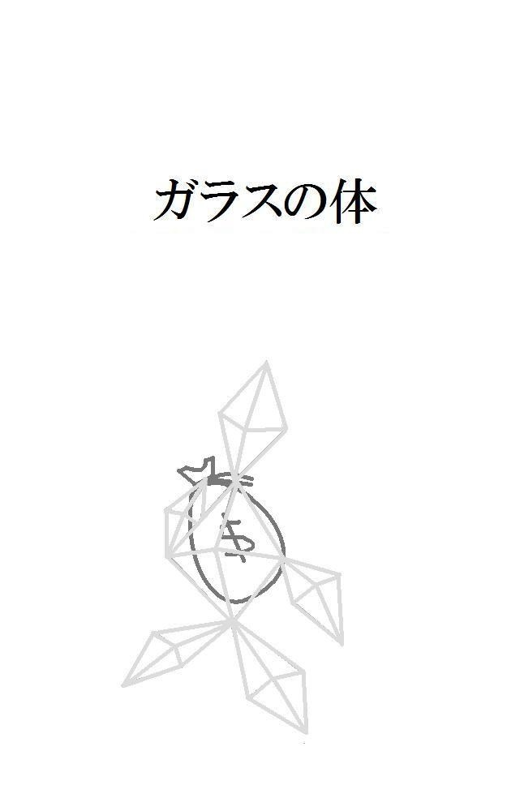
「よーし、完成だ！」
薄暗い部屋に男の大きな声が響いた。
「親分、ついに完成したんですね。」
大声を上げた男に対して、小柄な男が声をかけた。
「おう、そうだ。体がガラスになる薬がとうとう完成したぞ。」
親分と呼ばれた大柄の男は、机に向かっていた体を子分のほうへと向けた。その手には小さな瓶が握られていて、瓶の中には紫色の液体が揺れていた。
「どれ、飲んでみるか。」
そう言って親分は一気に小瓶の中身を飲み干した。
「......。」
「......おぉっ、親分！親分の体がガラスになりましたよ。」
子分の言うとおり、親分の体はガラスへと変化していた。親分も自分の手を見ながら変化を確認していた。
「おお、本当だな。どれどれ。」
親分は体全体の変化を確認するために、服を脱いで部屋に置いてある大きな鏡へと近づいた。
「うむ、ちゃんと全身がガラスに......ん？ちょっと待て、これじゃぁ駄目だ。」
鏡で全身の様子を確認した親分が落胆したようにため息をついた。その様子を見て、子分は不思議そうに尋ねた。
「へ？どうしてですか親分。ちゃんとガラスの体になっているじゃないですか。」
親分は子分を振り返ると、自分の体を指差した。
「見てみろこの体を。」
そう言われた子分は首をかしげる。
「別にガラスの体ですけど......。」
「それじゃぁ駄目だろ。周りから見てわかるようじゃ駄目だ。」
「あっ、確かにそうですね。」
子分が納得したように手を叩いた。
実は、この二人は銀行強盗を企んでいた。二人の計画は、体をガラスにして透明人間となり、誰にもばれずにお金を盗み出そうというものだった。
しかし、これでは他の人間にすぐにばれてしまう。
「これは失敗だ。解除薬は......っと。」
親分は机に近づくと、別の小瓶に入っていた液体を飲み干した。
「親分、体が透けていて気持ち悪いです。」
「うるせぇ、作り直しだ。」
そう言って親分は、手に持っていた小瓶を子分に向かって投げつけた。
「よーし、完成だ！」
最初の失敗作からしばらくが経った頃、アジトの部屋に親分の声が響いた。
「やりましたね親分、ついに完成したんですね。」
子分が嬉しそうな声で聞く。
「おう、そうだ。どれ、飲んでみるか。」
そう言って親分は服を脱ぐと、一気に小瓶の中身を飲み干した。
「......。」
「......おぉっ、親分！親分の体がガラスになりましたよ。しかも今度は透明です。全く見えませんよ。」
「......。」
「親分？」
子分が話しかけても親分は何も答えない。子分が不思議に思っていると、ガラスがこすれるような音とともに声が聞こえてきた。
「これは......動きづらいし......しゃべりづらい......。」
子分は思わず両手で耳をふさいでいた。親分の声と一緒に、キーキーという不快な高い音が聞こえてくるからだ。
「どうやら......失敗のようだ......ガラスが......硬すぎる......。」
「わかりました、わかりましたから！それ以上しゃべらないでください。そのキーキーする音は苦手なんです。」
「わかった......わかった......。」
親分はそう言ったきり黙ったが、音は止まらなかった。どうやら、親分は机の上にある解除薬を取ろうとしているようだが、動くたびに体のガラスがこすれて音を出しているようだった。
机の上の小瓶が宙に浮いた。親分が持ち上げたのだろう。子分は両手で耳をふさぎながら、親分がそのまま解除薬を飲むのを待っていた。しかし、小瓶は宙に浮いたまま停止した。
「......親分？」
「飲めない。」
「は？」
「間接が硬くて......飲めないんだ......おい......ちょっと手伝え。」
子分はため息をついた。
「はいはい、わかりましたよ。」
子分は浮いている小瓶を手に取った。
「......親分、これどこに口があるんですか。」
子分は苦労しながらも、透明な親分に解除薬を飲ませることに成功した。
こうして、二度目の薬も失敗に終わった。
「よし、完璧だ。ついに完成したぞ。」
アジトに親分の声が響き渡る。しかし、親分の姿は見えない。
「本当ですか親分。確かに姿は見えないですし、前回のようなキーキーという音も聞こえませんが......。」
「大丈夫だ。少し動きづらいが問題ない。ほれ、お前も飲んでみろ。」
机の上にある小瓶が宙に浮き、ふわふわと子分へと近づいてくる。子分が両手を差し出すと、手のひらに小瓶が置かれた。
「では。」
子分も小瓶の中身を一気に飲み干した。すると、みるみるうちに子分の体が消えていった。
「おおっ、本当だ。少し動きづらいですが、確かに透明です。」
子分が驚きの声を上げた。親分は満足そうにうなずいた。
「そうだろう、そうだろう。しかし、この薬は一つだけ注意することがあってな。一応、解除薬はあるんだが、実は薬の効果には制限時間があるんだ。」
「ええっ、じゃぁ急がないといけないじゃないですか。」
「まぁ、理論上では銀行強盗をする時間ぐらいは効果が続くはずだが、善は急げだ。さっそく出発するぞ。」
時刻は深夜。こっそりと銀行強盗をするにはぴったりの時間だった。二人は車へと乗り込み、銀行へと向かった。
「今日も異常なし、と。」
ここは銀行の警備室。警備員が椅子に座って業務日誌を書いていた。警備員の目の前にはモニターがあり、銀行内に設置された監視カメラの映像が映っていた。
「まぁ、今の時代に銀行強盗をするやつなんて、うっ。」
警備員は突然声を上げて、机に倒れこんだ。
「いるんだよなぁ、ここに。」
警備室に親分の声が響いた。
「よし、お前はこいつを縛り上げておけ。俺は警報を解除する。」
「わかりました。」
どこからか子分の声も聞こえてきて、警備室にロープがふわふわと浮きながら入ってきた。そのままロープが警備員を縛り上げていく。
「よし、警報は解除した。いくぞ。」
警備室を出た二人は、銀行の金庫からお金を次々と運び出していった。
「よし、これで最後だ。」
二人が最後の袋を車へと運び込もうとしたとき、銀行内に警報が鳴り響いた。そして、通路の先に、先ほど縛り上げたはずの警備員が現れた。
「そこまでだ！逃がさんぞ、この強盗野郎！」
警備員はそう叫ぶと二人に向かって突き進んできた。
「おい、なんであいつがいるんだ。お前しっかり縛ったんだろうな。」
「いやぁ、縛ったんですけどね。何せ体が動かしづらいものですから、ちょっと縛りが緩かったかもしれないですね。」
「馬鹿野郎！ちゃんとやらねえか。」
「そうは言っても、俺は親分と違ってガラスの体は初めてなんですから、しょうがないじゃないですか。それよりも、なんであいつは俺たちのいる場所がわかるんですかね。」
二人が話している間も、警備員は一直線に二人に向かって近づいて来ている。
「袋を担いでいるせいだ。しょうがねえ、この袋は諦めて逃げるぞ。」
警備員が近づいてきたところで、二人は担いでいた袋を警備員に向かって投げつけた。袋は警備員にぶつかり、警備員はその場に尻もちをついた。二人はそんな警備員の横を走って通り過ぎる。
「こら、待て！」
警備員はすぐに立ち上がり、声を上げたが、二人がどこにいるのかわからず、きょろきょろと周りを見回すことしかできなかった。
「いやぁ、うまくいきましたね。」
逃走中の車の中で子分が嬉しそうな声を上げる。
「お前がちゃんと警備員を縛っておけば完璧だったがな。」
「まぁまぁ、こうして無事に逃げ切ったんですから、いいじゃないですか。」
「まったく、お前ってやつは。」
親分はため息をついた。しかし、計画が成功したことが嬉しいのだろう。親分も本気で怒っている様子ではなかった。
「それにしても楽しみですね。明日の報道。」
「そうだな。警報は解除したが、監視カメラは解除しなかったからな。明日のテレビには、金だけが浮いている映像が流れるぞ。」
「俺たちの体は透明ですからね。世間は驚くし、俺たちの正体はばれないし、歴史に残る銀行強盗ですよ。透明人間作戦は大成功です。」
二人は車の中で大きな笑い声を上げた。
「さて、そろそろいいだろう。解除薬を飲ませてくれ。」
運転しながら親分が言った。時間が経てば元に戻るはずだが、親分は早めに元に戻ったほうがいいと判断した。なぜなら、人や車のあまり通らない道を深夜に走っているとはいえ、無人の車が走っているところを見られたら不審に思われるからだ。
「はいはい、ちょっと待ってくださいね。」
子分がそう言って解除薬の小瓶を取り出そうとしたとき、急に車が揺れて小瓶が転がった。
「ちょっと親分、ちゃんと運転してくださいよ。」
子分は親分に文句を言ったが、親分からは返事がない。
「親分......？」
子分が運転席のほうを見ると、ガラスの体をした親分の姿があった。完全な透明ではなく、周りから見てわかるガラスの体だった。
「大変です親分！体が！」
子分が慌てた声を上げると、キーキーという甲高い音とともに親分の声が聞こえてきた。
「この薬は......元の体じゃなくて......どうやら......ただのガラスの体に......戻るらしい。」
しゃべっている間も車はふらふらと揺れている。
「ええっ、じゃぁ急いで解除薬を！」
そう言って、解除薬を取ろうとした子分の手が途中で止まる。
「あ......俺の体も......ガラスに。」
そうこうしているうちに、二人の乗った車の前方に壁が現れた。車はそのまま壁へと突き進んでいった。
「これか、通報のあった事故車は。」
無線で通報を受けた俺は事故現場に来ていた。目の前には、壁に正面から突っ込んでいる車があった。
「警部、この事故の通報の前に、誰も乗っていないのに動いている車を目撃したという通報もあったそうです。」
「そんな馬鹿な。どうせ見間違いか、いたずらの通報だろう。」
そう言って俺は事故車の中をのぞきこむ。車体の状況を見た限りでは、それほど強い衝撃で壁にぶつかったわけではないようだ。
「中には誰もいないな。この程度の事故なら、運転していた人間も軽いけがで済んだだろう。......ん？」
後部座席に目をやると、いくつもの袋が積み重なっているのが見えた。袋を開けてみると、そこには大量の札束が入っていた。
「こいつは景気がいいな。」
「さっき無線から報告があった銀行強盗の車かもしれません。」
俺は一度うなずいてから、部下に指示を出した。
「よし、ここら一帯に非常線を張るように要請するんだ。犯人はまだ、そう遠くへは行っていないはずだ。」
「わかりました。」
そう言って部下はパトカーへと走っていく。部下が報告している間に、俺は改めて車内の様子を確認することにした。
「金を置いて逃げるだなんて、よほど慌てていたようだな。」
たいした事故ではなかったが、車のフロントガラスが割れて車内に散乱していた。
「こりゃ片づけが大変そうだな。それにしても......。」
車内を観察しながら俺はつぶやいた。
「やけにガラスが多いな。」
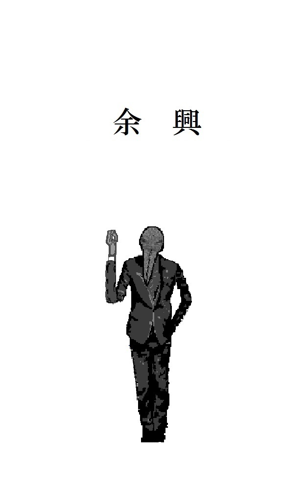
地球の科学技術が進み、宇宙へも進出している時代。人類は月や火星へも移住していた。
人々は平和な時代を過ごしていたが、そんな時間も長くは続かなかった。
「月や火星での生活も安定してきているようですな。」
地球の政治家たちが、人類の現在と今後について話し合っていた。
「ええ、環境整備が進んだおかげで移住者も年々増えています。狭い地球に無理をして住む必要はないですからな。」
地球での人口が増えすぎて、人々の住む場所がなくなるのではないかと心配されていたが、月や火星への移住が可能になったことで、その問題は解決した。
「地球の人口が減ったことで、地球で消費されるエネルギーも少なくなりました。それに伴い、エネルギーを生産する施設の数も減らすことができ、環境への悪影響も抑えられるようになりました。」
「さらに、生活拠点が地球だけでなく、月や火星といった他の星にもできたことで、人口問題や環境問題、食糧問題といったあらゆる問題が解決した。」
そこまで話したところで、政治家の一人がひときわ大きな声で言った。
「問題がなくなれば人々の心には余裕が生まれる。心の余裕は争いをなくす。我々はついに平和な時代を手に入れたのだ。」
その場にいる全員が、その通りだと言わんばかりに何度もうなずいた。長年争い続けてきた人類は和解し、地球ではすでに戦争はなくなっていた。そんな中、政治家の一人が小さな声で言った。
「しかしみなさん、そろそろ他の星も欲しくなりませんか。」
提案をした一人に皆の視線が集まった。
「一つの星がもたらす恵みはとても大きなものです。所有する星が一つ増えるだけで、我々はもっと発展することができますよ。」
そんな提案に対して、ちょっと待った、と別の政治家が声を上げた。
「それはそうだが、手に入れる星はなんでもいいというわけではないぞ。」
その言葉に他の政治家たちも賛同する。
「その通りだ。何の資源もない星を手に入れたところで、資源置き場やゴミ捨て場ぐらいにしかならん。」
「かといって、資源の豊富な星は、すでに他の宇宙人が住んでいたり、支配しているものだ。」
うーむ、と政治家たちは考え込んだ。
「とりあえず資源の豊富な星を見つけるのが先だ。宇宙船をどんどん派遣することにしよう。」
「そうだな、豊かな星を見つける前にあれこれ悩んでいてもしょうがない。まずは探索隊を派遣して、豊かな星を発見することが先だ。」
こうして、地球では探索隊が結成され、宇宙にある星を調査することが決定した。
「なかなか見つからないものだな。」
地球の探索隊が出発してからしばらくが経ったが、いまだに豊かな星の情報は報告されていなかった。
「まぁ、仕方がないがね。豊かな星はすでに他の宇宙人たちに取られているのだから。力ずくで奪おうにも、ほとんどの星が、別の宇宙人たちと同盟を結んでいたり、交流をしていたりする。難しいものだ。」
「そもそも我々人類は、他の宇宙人に比べて宇宙に進出するのが遅かったからな。科学力や軍事力の面でも劣っていることが多い。我々の力で奪える星というのも、めったにないだろう。」
政治家たちはため息をついた。そのとき、調査隊から通信が入ってきた。
「ご報告します。我らの移住先に最適な星を見つけました。メア星という星です。」
その報告を聞いて政治家たちは喜んだ。しかし、すぐに一人の政治家が言った。
「いや、喜ぶのは早いぞ。君、そのメア星には資源はあるのかね。資源がなければ、人類にとってなんの価値もないぞ。」
その言葉に、喜んでいた政治家たちはぴたりと動きを止め、調査隊からの言葉を待った。
「大丈夫です。とても資源が豊富な星です。」
報告を聞いた政治家たちは、ほっと胸をなで下ろした。落ち着きを取り戻した政治家たちは、次々に調査隊へと質問を始めた。
「資源があるのはわかったが、我々人類が住めるような環境なのか。」
「はい。問題ありません。」
「よし......いや待てよ、それなら住民がすでにいるのではないか。」
「はい。すでに住民たちがいます。」
それを聞いて政治家たちに落胆が広がった。
「それじゃぁ駄目じゃないか。すでに住民がいるのなら力ずくで奪うしかないが、どうせどこかの星と同盟でも結んでいるんだろう。」
「いえ、それがですね、周辺の星に話を聞いたところ、メア星は同盟どころか、どこの星とも交流すらしていないそうなのです。過去に交流を申し入れたこともあるそうなんですが、メア星に断られたと言っていました。」
調査隊の報告を聞いて、政治家たちは不思議がった。
「変な星だな。同盟どころか交流すら断るなんて。文明の発展はどうだ。」
「メア星の上空から偵察した限りでは、文明の発展は我々と同じか、それ以上です。しかし、兵器のようなものは見当たりませんでした。住民たちものんびりと生活しています。戦争も起きておらず、争いなどは好まない住民なのかもしれません。」
「他の星はメア星を侵略しようとは考えていないのか。」
政治家の質問に、調査隊の隊員は首を横に振った。
「特に考えていないようです。どうやら、この辺りの星の住民たちは、あまり争いを好まない性格のようです。」
「ふむ、では我々が侵略してやろう。どの宇宙人とも交流をしていない星なら、侵略しても誰にも文句は言われないだろう。メア星を手に入れるとともに、地球の名を宇宙に知らしめる良い機会だ。」
メア星が人類の移住先として最適な星であることがわかり、政治家たちは喜んだ。そして、さっそく宇宙軍を編成して、メア星へと出発することになった。
「この星を明け渡せと、そうおっしゃるのですか。」
執事のような服を着た宇宙人が地球の政治家たちに質問をした。この宇宙人はメア星の住民で、体つきや服装は人間と似ていたが、顔には鳥に似た大きなくちばしがついていた。
地球の政治家たちはメア星へと降り立つと、星の管理を任されているという、このメア星人と交渉をしていた。
「そうです。我々人類の移住先としてこのメア星が選ばれたのです。これはとても名誉なことですよ。」
政治家の一人が両手を広げながら笑顔で説明する。
「もちろんタダでとは言いません。あなた方が住むための別の星を用意しました。そちらに移住してもらいたいのです。素晴らしい星ですよ。」
別の政治家がそう言ったが、メア星人に用意した移住先の星は資源が乏しく、環境もあまり良くなかった。
政治家の提案を聞いて、メア星人は首を横に振った。
「申し訳ないのですがそれはできません。この星は我々にとって大切な星なのです。」
「そうですか、それは残念です。」
政治家たちは顔を見合わせ、残念そうに肩をすくめてみせた。しかし、言葉とは裏腹に落胆した様子はなかった。むしろ、その答えを望んでいたかのようだった。政治家たちの中には笑みを浮かべている者すらいる。
「それでは仕方がありません。力ずくでメア星を奪わせていただきましょう。」
「力ずくで？」
「えぇ、力ずくで。」
そう言って政治家が片手を上げた。すると、政治家たちの背後の上空から、多くの宇宙船が姿を現した。
「我々の戦艦です。あれ一隻だけで、メア星全体を焼き尽くすことができるほどの火力を持っています。さぁ、おとなしくこの星から出て行ってもらいましょうか。それとも黒焦げになりたいですか。」
メア星人は空を埋め尽くすほどの戦艦を見上げていたが、しばらくすると顔を下へと向け、力なく首を横に振った。そして顔を上げると、政治家たちに目を向けた。
「あなた方はひどい宇宙人ですね。」
「これが戦争というものです。我々は何度も戦争を経験してきました。あなた方は戦い方すら知らないようですが。」
政治家は兵器の一つも見当たらないメア星を見渡して、馬鹿にしたように鼻で笑った。他の政治家たちもニヤニヤとした笑いを浮かべている。
「そうですか、戦争ですか。それなら......仕方ないですね。」
そう言うとメア星人はゆっくりと片手を上げ、パチンと指を鳴らした。
すると、周囲が一瞬明るくなった。政治家たちは何が起きたのかわからない様子だったが、すぐに大きな音が政治家たちの背後で鳴り響いた。政治家たちはその音に驚き、一斉に後ろを振り返った。
そこには炎に包まれて墜落する地球の戦艦の姿があった。今の一瞬で、すべての戦艦が撃ち落とされてしまったらしい。
炎と煙を出しながら墜落する地球の戦艦の背後に、とてつもなく大きな宇宙船が現れた。
「な、なっ......。」
突然のことに政治家たちは腰を抜かしてしまった。そんな政治家たちに向かってメア星人が説明を始めた。
「我々の宇宙船です。あなた方の言葉で言うなら、戦艦と呼ばれるものでしょうか。」
「あ、あんなもの、どこに隠していたんだっ。」
政治家が巨大な戦艦を指差しながら叫んだ。その声は驚きと恐怖で震えていた。
「隠していたのではありません。あれは本国から来たのです。」
「本国だと......？」
「ええ、ここは本国から遠く離れたリゾート地ですから。」
「で、では、他の星と、交流や同盟を結んでいないのは。」
「自分たちがのんびりするためのリゾート地ですからね。面倒な交流はないほうがいいのですよ。この辺りは本国から遠く離れていますので、周辺の星の住民たちは我々のことを知らないでしょうが、我々は宇宙で一番大きな勢力を持つ軍事国家です。他の星と同盟を結ぶ必要がないくらいに強大な、ね。」
そう言ってメア星人は目を細めた。
「さて、我々と戦争をするのでしたね。」
メア星人は政治家たちに向かって聞いたが、政治家たちはガタガタと震えるだけで答えることができなかった。
メア星人は、そんな政治家たちを見渡しながら言った。
「つつしんでお相手いたしましょう。まぁ、あなた方の戦力では、余興ぐらいにしかなりませんが。」
メア星人がゆっくりと片手を上げた。
「では、始めましょうか。」
指がパチンと鳴らされた。
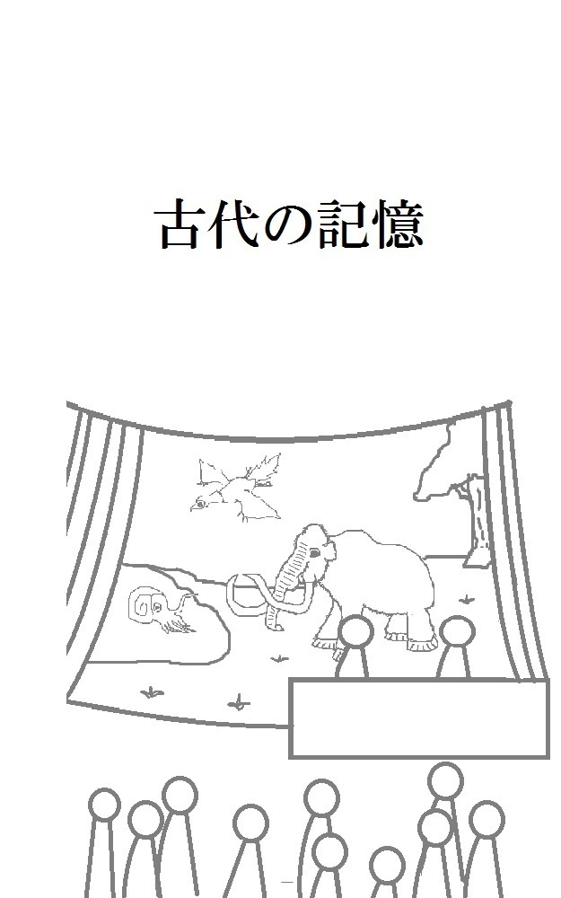
「いよいよですね博士。」
助手が興奮した声でエヌ博士に言った。
「ああ、ついに長年の研究の成果が実を結ぶときが来た。いくぞ......。」
エヌ博士は装置のスイッチに手を伸ばす。そばで見ている助手の緊張感が伝わってきて、エヌ博士も手に汗をかいていた。
緊張しているのが助手にばれないように、エヌ博士は震えそうになる手に力を込めながら、装置のスイッチを押した。
「対象を確認。復活を開始します。」
音声が流れ、目の前の機械がものすごい速さで動き始めた。エヌ博士と助手は、機械の動きをじっと見守った。そして、機械が動きを止めた。
「復活が完了しました。」
機械が作業が終わったことを報告したが、二人はそのまま身動き一つせずに何かを待っていた。
そして、ついに二人の待ち望んだことが起きた。復活させたものが動き出したのだ。
「やった、やったぞ。ついに成功だ！」
「やりましたね博士。世紀の大発明ですよ！」
エヌ博士と助手は、手を取り合ってその場で踊り始めた。
その様子を不思議そうな目でマンモスが見ていた。
「エヌ博士、古代の生き物を復活させる研究が成功し、マンモスを復活させたとのことですが、それは本当ですか。」
エヌ博士は研究の成果を発表するために、研究所内で記者会見を開いていた。エヌ博士と助手の目の前には多く記者たちが集まっており、エヌ博士に次々と質問していた。
「本当です。我々は古代の生き物を復活させることに成功しました。さらに、一から新しい個体を生み出すのではなく、当時の記憶を持ったままの状態で復活させることに成功したのです。」
エヌ博士は誇らしげに成果を語った。しかし、記者たちはよくわからないといった様子で顔を見合わせた。
「あのー、エヌ博士。その、当時の記憶を持って復活するということは、そんなに重要なのでしょうか。」
記者からの質問にエヌ博士は力強く答えた。
「もちろんです！もし古代生物たちと意思疎通、または記憶を読み取ることができれば、当時の様子を知ることができるのです。これは大変重要なことです。」
エヌ博士の答えを聞いて、記者たちはどよめいた。さらにエヌ博士は続ける。
「そして、我々が復活させたのはマンモスだけではありません。それでは、実際にお見せしましょう。これが我々の研究の成果です！」
博士が大きな声で宣言すると、助手が後ろに備え付けられた幕を開けた。幕の後ろからは、透明なガラスの仕切りが現れた。ガラスの中には広大な自然が広がっていて、まるで動物園のようだった。そして、動物園では見たことのない生き物を発見して、記者たちは驚きの声を上げた。
「は、博士。あれはアンモナイトですか。」
記者の一人が水辺を指差しながら尋ねる。
「ええ、そうです。アンモナイトは化石の数が多かったので、たくさん復活させることができたのですが、適切な水質を見つけるのが大変でした。」
エヌ博士が得意げに答えると、別の記者からも質問が飛んだ。
「博士、あれはもしかして始祖鳥ですか。」
「そうです。始祖鳥は発見されている化石の数が少なかったので、慎重に研究を進めました。始祖鳥が何を食べるのか、それを調べるのがまた大変でしてね......。」
エヌ博士は研究の苦労をしゃべり続けていたが、記者たちはエヌ博士の説明よりも、古代の生き物たちの写真を撮ることに夢中になっていた。
「エヌ博士の研究によって復活した古代生物たちは、順調にその数を増やしています。」
テレビからアナウンサーの声が聞こえてくる。
エヌ博士の研究は世界中で話題となり、様々な企業や団体、個人から多額の資金が援助された。研究所の敷地はどんどん広くなり、多種多様な古代生物たちが自由に暮らすようになっていた。
「いやぁ、まさか生きているマンモスを実際に見れる日が来るとは思わなかったなぁ。」
テレビを見ていた一人が言うと、別の一人もうなずいた。
「まったくだ。しかも、当時の記憶を残した状態で復活させたってんだから、すごいもんだ。これで昔の地形やら気候やらも判明するらしいぞ。」
「そいつはすげぇや。昔の地球ってのは一体どんな姿をしていたんだろうな。」
「ロマンのある話だよなぁ。」
二人は想像を膨らませながら、エヌ博士の研究について話し続けた。
しかしある日、研究所で警報が鳴り響いた。
「博士、大変です。研究所が攻撃を受けています！」
「何っ、攻撃だと。どこの研究所のしわざだ。それとも隣国の工作員による襲撃か。」
博士の問いに対して、助手は首を横に振った。
「違います、攻撃は人間によるものではありません。古代生物たちが攻撃してきているのです。」
「古代生物だと！」
助手の答えを聞いてエヌ博士は驚いた。
「警備員たちは何をしている。彼らには制圧用の武器を持たせてあるはずだぞ。古代生物なんてすぐに制圧できるだろう。」
「それが、古代生物たちが見たこともない武器を使用していて、まったく歯が立たないようなんです。」
助手がモニターに現場の様子を映し出した。そこには、見たことのない機械を装着した古代生物たちに圧倒される警備員たちの姿があった。
「なんだあれは。一体いつの間にあんな武器を。」
ぽかんと口を開けたまま、博士はモニターを見つめていた。モニターに映っている古代生物がカメラに気づき、武器を構えた。まばゆい光が放たれ、映像が途切れた。
「どうなっている、まだ研究所と連絡は取れないのか。」
研究所を管理している国の大統領が、大きな声で部下に状況を確認していた。
「駄目です。古代生物たちに攻撃を受けているとの報告を最後に、連絡が取れません。」
「わが軍からの報告は？」
「研究所には到着したそうですが、古代生物たちの攻撃が激しく、劣勢になっているようです。」
「世界で最強の装備を持つわが軍ですら苦戦するというのか......。」
大統領はがっくりと肩を落とし、うなだれた。しかし、すぐに顔を上げると、部下に指示を出した。
「研究所に向けてミサイルを発射する。」
「大統領、本気ですか。あの研究所には貴重な古代生物たちが多数いるのですよ。今までの研究も全て消えてしまいます。」
そう言って部下は大統領を止めようとしたが、大統領は首を横に振った。
「仕方がない。ここでやつらを止めなければ、被害が世界中へ広がることになる。」
「しかし、それではエヌ博士や現場にいる隊員たちも......。」
「命令だ。ミサイルを発射するんだ。」
「......わかりました。」
部下はミサイルの発射準備を始めた。
「古代生物の数が順調に増えているとは聞いていたが、いつの間にあんな武器を......。古代生物が作れるはずはないし、他国から持ち込まれた可能性は......いや、研究所の世界一厳重な警備を考えればありえないことだ。ならば一体どうやって......。」
大統領は考えを巡らしていたが、いったん考えるのをやめて、部下に声を掛けた。
「おい、まだミサイルは発射できないのか。」
「それが......システムが命令を受け付けないのです。」
「何っ、一体どういうことだ。」
「わかりません。研究所にいる部隊や他国とも通信がつながらなくなりました。連絡のとれた各地のスパイからの報告では、世界中の国が壊滅状態だとのことです。」
「世界中の国だと！」
大統領は信じられないといった様子で叫んだ。
「そんな馬鹿な、一体何があったというのだ。各国には軍隊がいるのだぞ、そう簡単にやられるはずがない。何かの間違いだろう。」
「いえ、スパイからの確かな情報です。私も信じたくはありませんが......あっ、今ミサイルが発射命令を受け付けました。すぐに発射されます。」
「よし、よくやった。各国の詳しい状況を確認するのは後回しだ。とりあえず、研究所にいる古代生物たちを全滅させることが最優先だ。」
大統領はミサイルが無事に発射されたことに安心し、深く息を吐いた。
「しかし、各国がそんな状態では、古代生物たちを全滅させた後が大変だな。まずは被害状況を調べて......。」
「大統領！大変です。ミサイルは研究所に向かっていません。」
大統領の独り言は、助手の大きな声で中断された。
「何！それでは一体どこに向かっているんだ。」
「ミサイルの着弾予想地点はここです。」
大統領は部下の言っていることが、すぐには理解できなかった。
「ここ？こことは一体どこのことだ。」
「ここです。ミサイルは我々のいるこの場所に向かっています！」
「な、なんだと。一体なぜ......。」
大統領がその答えを知ることはなかった。次の瞬間、大きな爆発音と光が辺りに広がった。
「状況は？」
「問題ない。ミサイルのコントロールを奪って、主要な都市の破壊が完了した。生き残った人間たちでは反撃することは不可能だろう。」
エヌ博士の研究所で、古代生物たちが現在の状況を話し合っていた。話し合うといっても、実際に言葉を交わすのではなく、自分の意思を直接、相手の脳内に伝えて意思の疎通を行っていた。
「我々の数と、兵器の準備が整うまで時間がかかったが、なんとかうまくいったな。我々の記憶を読み取られたら危なかったかもしれないが。」
マンモスの言葉に、アンモナイトが体を揺らしながら笑った。
「なーに、そのときはシステムをいじれば済む話さ。」
アンモナイトの意見に始祖鳥もうなずいた。
「その通り。人間たちが使っているのは時代遅れのコンピューターに役立たずのセキュリティばかり。そして、あんな貧弱な装備で我々を支配できると思っているとは愚かな生き物だ。」
「この研究所の警備も抜け穴だらけだ。文明が遅れているねえ。」
アンモナイトと始祖鳥があきれたように言った。古代生物たちには人類よりも高い知能があったのだが、そのことを人類に知られないように隠していた。そして、人類による支配から抜け出すために、ひっそりと計画を進めていたのだ。
「地震や台風、火山の噴火に対する備えすら満足にできていない文明だ。」
「地震やら噴火やらが同時に起こっても対応できていた我々とは大違いだ。」
「まぁ、それに加えて、いんせきまで落ちてきたら、さすがの我々でも無理だったわけだが。」
そう言って始祖鳥は、翼を広げながら肩をすくめた。そんな始祖鳥に対してマンモスが言う。
「これから対処できるようにすればいい話だ。それにしても、我々は大災害によって滅んだが、我々の後に地球を支配したのが、こんな下等な生物だとは思わなかった。」
マンモスの言葉に、他の古代生物たちも賛同する。
「まったくだ。さっさと滅ぼしてしまおう。」
「それがいい。地球に多大な害を与えていたみたいだしな。」
他の古代生物たちの意見に、マンモスは首を横に振った。
「いや、確かに人間たちの行いはひどいものばかりだ。当時の記憶を残したまま、我々を復活させたのも、人類にとっては失敗だっただろう。しかし、人類にとっては失敗でも、我々にとっては感謝すべきことだ。よって、人類は絶滅させるのではなく、古代の知能にまで戻すだけでいいのではないか。」
マンモスの意見に他の古代生物たちも同意した。
「そうだな、別に絶滅させなくても、知能を戻すだけでいいか。どうやら人間は、力や技術といったものを手に入れると、よくない方向へ進むようだからな。」
こうして、地球に平和な時代が訪れた。
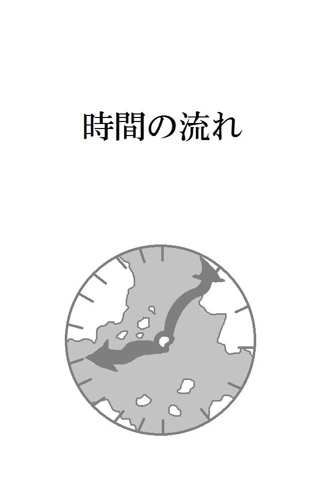
「おお、もうこんな時間か。最近時間が過ぎるのが早いなぁ。」
ある会社の社長が時計を見ながらつぶやいた。
「歳を取ると、時間が過ぎるのが早く感じるっていいますからね。」
社長のつぶやきに対して、からかうように秘書が言った。
「若い頃は、時間の感じ方なんて変わらないと思っていたが、この歳になると実感するよ。昔は今の二倍は働いていたんだぞ。そりゃあもう、バリバリでな。」
「あー、はいはい。昔話はいいですから、こっちの仕事もお願いしますね。」
社長が誇らしげに昔話を語り始めようとしたのを秘書が止める。
「えー、過去の栄光を語らせてよー。」
「仕事が終わったらいくらでも聞いてあげますから。」
「お、いいの？」
「週末ですから付き合いますよ。」
それを聞いて社長は喜んだ。
「やったー。よーし、昔のように頑張っちゃうぞー。」
そう言うと社長は、ものすごい速さで仕事に取り掛かり始めた。
「まったく、この人は......。」
秘書はそんな社長の姿を見て、あきれながらも、どこか楽しそうに笑った。
「今年も人類の最高年齢が更新されました。さらに、人類の平均寿命も年々伸び続けています。」
居酒屋にあるテレビからニュースが流れている。
「いやー、医療技術の進歩ってやつはすごいね。人間はどんどん長生きするようになっているよ。」
テレビを見ていた社長が言った。それを聞いて、一緒に飲んでいる秘書もうなずいた。
「本当ですね。昔は治療法がなかった病気も、特効薬が開発されたり、手術で治すことができるようになったりしていますからね。ありがたい話です。」
そう言って秘書は、お酒をぐいっと飲み干した。秘書の飲みっぷりを見ながら社長が笑った。
「寿命が延びたおかげで、こうしてうまい酒をながーく楽しめるようになったわけだ。」
「いい時代になりましたねぇ。でも......。」
秘書が社長のお酒を取り上げる。
「飲みすぎはいつの時代も体に毒ですからね。今日はこれでおしまいです。」
「えー、もうちょっと、もうちょっとだけ。」
社長は秘書に拝むように手を合わせたが、秘書は首を横に振った。
「駄目です。」
「えー、そんなー。」
そんな二人の様子を見て、居酒屋の店主が笑いながら言った。
「まぁまぁ社長。この子は、きっと心配なんですよ。この前、社長が健康診断を受けたら、いくつかの項目で引っ掛かったって言ってたじゃないですか。」
「その通りです。社長の健康管理も秘書の仕事ですから。」
「こんなときまで仕事しなくていいよー。」
そう言って社長はうなだれた。そんな社長の様子を見て、秘書はため息をついた。
「適量のお酒なら、週末以外でも飲んでいいですから。」
「いいの?! 」
社長が勢いよく顔を上げた。
「気分転換も大事なことですから。やる気がなくなって、仕事に影響が出ても困りますからね。」
「じゃぁ、来週から仕事帰りには毎日――」
「駄目です。」
「そんなー。」
社長はがっくりと肩を落とした。そんな二人のやりとりを見て、また店主が笑っていた。
「どうですか？」
秘書がストップウォッチを持ったコーチに尋ねた。
「うーん、なかなかタイムが伸びないなぁ。」
ストップウォッチに示されたタイムを、秘書に向かって見せながらコーチが言った。
今日は休日。秘書は学生時代から続けている陸上競技の練習をしていた。
「まぁ、あまり気を落とすことはない。昔と比べて、今の子たちは身体能力が落ちているらしいからな。これは君だけじゃなくて、世界的な傾向だ。」
「それはそうなのですが......。」
スポーツ大会の記録や、体力測定の結果を分析した結果、世界中で人々の体力が低下してきているということがわかっていた。
特に、持久走などのタイムを測定する種目が年々悪くなっているということだった。そこで、最近では持久力をつける運動が、老若男女を問わず推奨されていた。
「最近発表された、世界の現役選手たちの記録と、昔の選手たちの比較資料を見てみるかい？」
コーチが秘書に尋ねたが、秘書は首を横に振った。
「特に興味がないです。」
そんな秘書の様子を見てコーチは笑った。
「本当に君は、他の人のタイムを気にしないねえ。まぁそれがプラスになることもあるけれど。とりあえず見てみなよ、面白いからさ。」
そう言って、コーチは手に持っていた資料をぱらぱらとめくり、目当てのページを開くと、そのまま秘書へと手渡した。
他人のタイムを見て面白いというのはどういうことだろう、と秘書は不思議に思いながらも、コーチから資料を受け取った。
開かれたページを見てみると、そこには様々な年代の競技記録が記載されていた。
「これは......！」
秘書は思わず声を上げた。やはり昔に比べると、世界的に記録が落ちているということが、資料から読み取れた。しかし、秘書が驚いたのはそこではなかった。昔の記録を指差しながら、秘書がコーチに尋ねた。
「この記録保持者って、まさか......。」
「そう、社長だよ。」
コーチがにっこりと笑って答えた。秘書が指差している部分には、確かに社長の名前が書かれていた。
「すごい速いんですけど。」
「まぁ、昔の人は、みんな今より速かったからね。その中でも、あの人は別格だったんだよ。」
コーチは昔を思い出すように、しみじみと言った。
「社長って意外にすごかったんだ。」
資料に目を戻しながら、秘書が小さな声でつぶやいた。
「おっ、社長さん、いらっしゃい。」
「やぁ大将、いつもの頼むよ。」
そう言って社長はカウンターへと座った。
今日は会社が休みなので、社長は行きつけのラーメン屋へと来ていた。
「どうだい大将、景気のほうは。」
「最近は悪くないねぇ。社長さんのほうはどうだい？」
「こっちも順調だよ。でも、秘書の監視が厳しくてねえ。お酒も食事も制限されているんだよ。」
社長が肩を落としながら言うと、大将が大きな声で笑った。
「はっはっはっ、あの子はしっかりしているからねぇ。しかし、いいんじゃないのかい。昔は社長さん、よくべろんべろんに酔っ払いながら、うちに来ていたじゃないか。」
「あれ、そうだったかなぁ。」
社長はとぼけたように言いながら笑った。そんな話をしているうちに、ラーメンが出来上がった。
「へい、ラーメンお待ち。」
目の前に置かれたラーメンを、社長はさっそく食べ始めた。
「うん、うまい。しかし大将、最近なんだか麺が硬めじゃないかい？」
社長が言うと、大将は困ったような顔をして答えた。
「やっぱりそうかい？他の常連さんたちにも言われるんだよ。ゆで時間は昔と変えていないんだけどなぁ。」
「そうなのかい？まぁ私は硬めの麺も好きだけど、不思議だねえ。」
「不思議ですねえ、社長。」
突然、社長の背後から声が聞こえた。社長が驚いて後ろを振り返ると、社長のすぐ後ろに秘書が立っていた。驚いている社長をよそに、秘書は大将に声を掛けた。
「大将、こんにちは。」
「いらっしゃい。相変わらず気配を消すのがうまいねぇ。」
大将が楽しそうに笑う。
「いや、なんでこんなところに君が。」
社長が慌てた様子で秘書に聞く。
「陸上の練習の帰りです。店の外から社長の姿が見えましたので。」
そう答えながら、秘書は社長の隣へと座った。そして、社長の前に置かれているラーメンに目を向けた。
「社長、そのラーメンは？」
「いや、これはその、いつも食べているラーメンでね。いや、いつもといっても休日だけでね。そう、休日の楽しみというやつで。ここのラーメンはすごくおいしくて本当は毎日でも食べたいくらいなんだけど、いや、そうじゃなくて......。」
社長は秘書に早口で説明を始めた。昨日、秘書から健康に気を使うように注意されたばかりだったので、何か言われるのではないかと、社長は気が気でなかった。
「じゃぁ、私も同じものを。」
「まいど！」
「えっ、何も言わないの......？」
社長は意外そうに秘書に聞いた。秘書はそんな社長のほうは見ずに、ラーメンが作られている調理場のほうをじっと見ながら答えた。
「来週からも、社長には頑張っていただかないといけませんから。」
秘書の言葉を聞いて、社長は嬉しそうな声を上げた。
「そうだよね！やっぱり食べなきゃ始まらないよね。そうそう、この店はラーメンだけじゃなくてチャーハンも絶品でね。大将、チャーハンも追加――」
「駄目です。」
「そんなー。」
「はっはっはっ、社長もこの子にはかなわないねぇ。へい、ラーメンお待ち。」
秘書の前にラーメンが置かれる。その後も店の中からは、にぎやかな声が響いていた。
「ういーす、定期巡回でーす。どうっすか博士ー、順調っすかー？」
ここは地球から遠く離れたの、とある研究所。扉が開いて、警備員である宇宙人が部屋の中へと入ってきた。
「おー、いらっしゃい。実験は順調だよ。」
博士と呼ばれた宇宙人が、警備員のほうを振り返りながら答えた。
「また地球で実験してるんすかー？博士も好きっすねー。」
「いやー、人類は面白いよ。実験のやりがいがある。」
「今はなんの実験をしてるんすかー？」
警備員は近くのイスに座りながら博士に尋ねた。
「今はね、地球や太陽といった天体の動きを変化させて、地球の一日の時間を少しずーつ短くしているんだ。」
「なんすかそれ。そんなことしたら人類にばれるんじゃないんすか。」
「大丈夫、大丈夫。地球のすべての時計も操作しているからね。それに、彼らの寿命は我々よりとても短いし、科学技術も未熟なんだ。だから、ばれないばれない。」
博士は楽しそうに笑いながら言った。
「そんなもんすかー。」
「それに、そろそろ逆にする予定だからね。」
「逆？」
博士の言葉に警備員は首をかしげた。
「今度は地球の一日の時間を少しずーつ長くしていくんだ。」
「一日の時間を短くしたり、長くしたり......なんの意味があるんすか、それ。」
「それはね......あっ、この説明はちょっと長くなるから、そこにあるお菓子でも食べながら聞いてよ。」
そう言って博士は机の上を指差す。警備員は遠慮なく、机の上にあるお菓子へと手を伸ばした。
「まず、一日の時間が短くなるとね、持久走や水泳といった、時間を測定する運動では記録が低下するんだ。すると、人類は記録の低下の原因が、身体能力の低下のせいだと考え、どうにかして記録を伸ばそうと頑張る。子どもの頃から運動させたり、より効率的なフォームやトレーニング、道具を追求したりしてね。」
もぐもぐとお菓子を食べながら、警備員は博士の説明を聞いている。
「さっき地球を見ていたら、今までと同じゆで時間なのに麺が硬めになったから、麺のゆで時間をより短くしようと企業も頑張っていたよ。麺のゆで時間までは、ちょっと予想していなかったなぁ。」
これだから実験はやめられない、と博士は笑いながら言った。
「次に、一日の時間が長くなるとね、寿命が短くなるんだ。すると、人類は医療技術をさらに発展させようとする。こうやって環境を変化させることで、人類が新しい研究や技術を開発するようになるんだ。つまり、人類の進化を促すのが、この実験の狙いということだね。」
「なるほどー。」
警備員は納得したようにうなずいた。そして、新しいお菓子に手を伸ばしながら、博士に質問した。
「でも博士、そんなことしなくても、人類は勝手に発展していくんじゃないんすか？」
警備員の質問に博士はうなずいた。
「そうだね。でも、人類は我々ほど先のことは見えていないんだ。寿命が短いから、数千年後の問題となると無関心になってしまう。」
それにね、と博士は続ける。
「何か問題が起きないと頑張らないというところが人類にはあるんだ。災害が起こってから対策を考えたり、環境も破壊してから保護しようとしたりね。」
「ふーん、人類って手間が掛かるっすねー。」
そう言う警備員に博士は笑った。
「そこがまたかわいいのだよ。おっと、地球温暖化と寒冷化の計画も立てておかんとな。これでまた、人類の科学技術をより発展させることができる。」
「なんで博士は、他の星の住民に対して、そんなに熱心に研究ができるんすか？」
警備員が不思議そうに博士に尋ねた。その質問に、博士は少し考えてから答えた。
「そうだね、大事な実験対象というのもあるけど、私は人類が滅亡してしまうのはもったいないと思っているんだ。私は人類に可能性を感じていてね。今はまだ、我々と交流できる段階ではないが、いつか交流できるときが来ると、私は信じている。」
博士は優しげな目で、モニターに映る地球を眺めている。
「私はそれが楽しみでね。だから実験をしながら、色々と手助けをしているのかもしれないね。」
そう言って博士は、モニターに映る地球を優しくなでた。
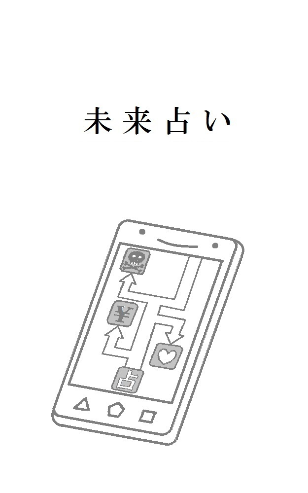
「先輩、このアプリすごいですよ。」
とある会社のオフィスで、二人の会社員が雑談をしていた。
「アプリってなんだ？」
先輩と呼ばれた少し年配の会社員が、若い会社員に尋ねた。
「えっ、先輩、アプリを知らないんですか？スマホとかに入っているじゃないですか。」
後輩が驚いた様子で先輩を見て言った。
「スマホ？」
「携帯電話のことですよ。最近の携帯電話はスマートフォンと呼ばれるもので、略してスマホというんです。そんでもって、アプリっていうのは携帯電話で使えるソフトウェアのことですよ。」
後輩は先輩の疑問に対して一気に説明したが、先輩は首をかしげた。
「ソフト......なんだ？」
そんな先輩の反応を見て、後輩は大きなため息をついた。
「いや、いいんです。先輩との世代による違いは、今に始まったことではないですから......で、ですね！」
後輩は気を取り直したように言いながら、スマホの画面を先輩へと向けた。
「とりあえず携帯電話で占いができると思ってください。そして、その占いがすごく当たるんです！その名も、未来占いアプリ！」
テンションの高い後輩とは対照的に、先輩は再び首をかしげていた。
「未来占いアプリ？変な名前だな。」
「えっ、そうですか？普通じゃないですか？」
「普通だから変なんだよ。占いって、そもそも未来を知るためのものだろう？なのに、わざわざ未来占いなんて名前を付けるのか。」
先輩に指摘されて、後輩も「あれ？言われてみれば、確かにそうですね。」と首をかしげた。
「あっ、でも動物占いとか前世占いとかあるじゃないですか。そういった占いとの区別じゃないですか。」
「動物や前世を占ってどうするんだ？」
えーと、と後輩は言って、視線をあちらこちらに動かした。
「あれじゃないですか。占いの結果がかわいい動物だったり、前世ですごい人だったりしたら、現在の自分はこんなんだけど、動物だったらかわいいし、前世ではこんなにすごかったんだぞっていう、ちょうどいい現実逃避に......っじゃなくて！」
後輩は再びスマホの画面を先輩に向かって突き出した。
「とにかく、すごく当たる占いなんです！そして、今日の占いの結果が、先輩と食事に行くのが良いって書いてあるんです。」
後輩のスマホの画面を見た先輩は、ゆっくりと自分の携帯電話を取り出した。
「私の占いアプリの結果では、一人で食事をするのが良いって書いてあるな。」
「先輩は占いアプリを入れてないじゃないですか！もういいから行きますよ！」
そう言うと後輩は、先輩の腕を引っ張って、強制的に食事へと連れ出していった。
「いやー、びっくりっすよ。占いアプリのいった通りに行動したら、毎日ラッキーなことばかり起きるんすよ。体も健康になって、恋人もできたっす。」
「あっ、先輩。ほら、あの占いアプリのことをテレビでもやっていますよ。」
そう言って後輩がテレビを指差した。先輩は食事をしながらテレビへと目を向ける。
「これは個人の感想で効果には個人差があります、という注意書きは出ないんだな。」
先輩がそう言うと、後輩があきれた様子で先輩を見た。
「もう、注目するのはそこですか。宣伝や広告じゃなくて、テレビの企画だからじゃないですか。」
「なるほど。」
後輩の言葉を聞いて、先輩は納得したようにうなずいた。テレビでは、アナウンサーが占いアプリについて説明を続けていた。
「ご覧のように、この占いアプリのいう通りに行動することで、危険を回避できたり、良いことが起きたりして、幸せになった人が多数いらっしゃるようです。この評判が口コミで広がり、今では世界中の人々が、この占いアプリを利用しています。」
「ほら、先輩。やっぱりこのアプリはすごいんですって。」
そう言って誇らしげに胸を張る後輩。そんな後輩に先輩が尋ねる。
「それって何か情報は登録するのか？」
「えっと、そうですね。名前と生年月日と、あとは自分が現在どこにいるのかっていう位置情報ぐらいですね。」
「怖くないか？」
先輩が聞くと、後輩は少し考えるしぐさをしてから答えた。
「んー、でも名前と生年月日ですからねぇ。そのぐらいの情報だったら家族や友人も知っていますし、すでに色々なところにも登録していますからね。登録した情報が他の人に公開されるわけではありませんし、名前と生年月日だけなら、そんなに悪用されないと思いますよ。それに、うその情報を登録したら、自分じゃなくて他人の未来を占うことになるじゃないですか。意味ないですよ。」
「そうか？私が君の情報で登録して、その占いの結果とは真逆の行動を君にとらせれば面白いじゃないか。」
「面白くないですよ！やめてください。最近の私は絶好調じゃないですか。」
そう主張する後輩に対して、先輩は考えるそぶりを見せる。
「まぁ、成果らしい成果は相変わらず出せていないようだが。」
「うっ、確かにまだ仕事でこれといった成果は出せていないです。で、でも！ミスは減っていますよね？」
「そうだな。これまでは、日に日にミスの回数が増えていたからな。経験を積んで、仕事に慣れてくれば、普通はミスが減るはずなんだが......。今までが不思議だったな。」
「ぐっ。こ、これからですよ、これから。これからは一つもミスを出しませんよ。」
そう言って後輩は親指を立てた。
「それはありがたい。この前のミスなんか、会社を二回ぐらい倒産させることができるほどの損失を出すところだったからね。あのときはもう駄目かと思ったよ。」
「先輩......もう少し手加減してもらっていいですか？」
後輩は力なくそう言いながら、がっくりとうなだれた。
「そういえば、知り合いにも未来占いアプリを利用している人がいるんですけど、この前、急にアプリが消えたらしいんですよ。」
食事からの帰り道。二人は並んで歩きながら話をしていた。
「アプリがその人のことを嫌いになったんじゃないか。」
「アプリにそんなすごい機能はありませんよ。まぁ、あまり好ましい人間でもないんですけどね。」
そう言って後輩は顔をしかめた。
「アプリが急に消えるということは、よくあることなのか？」
「たまにありますよ。アプリが消える以外にも欠陥というか、不具合といったものは、他のアプリにもありますね。まぁ、たとえアプリが消えても、もう一度入れればいいだけですから。誰も気にしないですよ。」
「そういうものか。」
そう言いながら先輩はうなずいたが、よくわかっていない様子だった。
「それに、その知り合いの話によるとですね、占いアプリの指示を無視した後に、アプリが消えたそうなんですよ。そういう適当な人なんです。」
まぁそんな人の話は置いておいて、と後輩は言って、先輩へと近づく。
「先輩も入れましょうよ、占いアプリ。」
後輩の提案に対して、先輩は首を横に振ってから答えた。
「私は占いには頼らない。自分の道は自分で決めるよ。誰にも縛られず、自分の欲望のままに生きるのだ。」
「惜しいなー。途中までかっこよかったのに、最後で台無しなんだよなー。」
後輩が額に手を当てながら、顔を上に向けた。そんな後輩の様子を見ながら、先輩は話を続ける。
「占いに頼らなくても、自分で考えて選択すれば、なんの問題もない。そして、正しい選択をするには賢くなればいい。私は賢いからな。だから眼鏡をかけている。」
そう言って先輩は、かけている眼鏡をくいっと指で押し上げた。
「確かに先輩は頭もいいですし、仕事もできますけど、賢いイコール眼鏡っていう発想が賢くないんだよなー。」
後輩は額に手を当てたまま、今度はうなだれた。しかし、すぐに顔をあげると、笑顔で先輩に言った。
「まぁ、そこが先輩の魅力でもあるんですけどね。」
「そうかい？」
そう言って先輩も笑った。
「町の東に幸運がある、と。」
深夜、一人の泥棒が町を歩いていた。泥棒の手にはスマホが握られている。
「赤い屋根に広い庭。間違いない、ここだな。」
泥棒が目の前にある赤い屋根の家を見ながらつぶやいた。泥棒が現在持っているスマホの画面には、赤い屋根と広い庭に幸運あり、と表示されている。
「まさか、この占いアプリが泥棒にも使えるとは思わなかったぜ。」
この泥棒は、以前にも盗みを働いたことがあったのだが、そのときに占いアプリの指示に従ったところ、大金を手に入れることに成功していたのだ。
「占いの結果通りに行動しなかったら、アプリが消えたこともあったからな。まぁ、偶然だとは思うが、ちゃんと指示には従うように気をつけておこう。なになに......ラッキーアイテムは高い塀か。つまりここから侵入しろってことだな。」
そう言って泥棒は高い塀へとよじ登った。
「さて、今夜もたんまりいただきますか。」
泥棒がそうつぶやいて、塀を降りようとしたそのとき、泥棒は塀の上で足を滑らした。
「うわっ！」
そのまま泥棒は、頭から地面へと落ちていった。
「良き未来のために！」
「良き未来のために！」
とある研究所で、研究員である二人が、お互いに敬礼をしていた。
「どうだ、世界の様子は。」
「順調だ。我々の開発した未来占いアプリのおかげで人々は幸せになり、世界は良き未来へと向かっている。」
それを聞いて研究員の一人は満足そうにうなずいた。
「素晴らしい。我々は世界を、良き未来へと導かなくてはならない。」
「そして、未来予測の恩恵をより多くの人々へ。」
この研究所では、未来予測をする装置の発明に成功していた。しかし、そのことを世間に公表すれば、装置を巡って世界中で争いが起きるということも、未来予測によって判明した。
世界中を巻き込んでの争いを心配した研究員たちは、未来予測の装置の存在を秘密にすることにした。しかし、せっかく発明した装置を無駄にするわけにもいかなかった。そこで、研究員たちは装置の存在を秘密にしながら、良い未来に人々を導くには、どうすればいいかを考えた。そこで考え出されたのが未来占いアプリだった。
「未来占いアプリが広がることで、未来予測の恩恵も、世界中に広がっている。」
「しかし、未来予測の恩恵は悪人には必要ない。悪人は世界から消さなければならない。」
真剣な顔をしながら一人がつぶやいた。
「その通り。良き未来に悪人は不要だ。悪人は良い未来ではなく、悪い未来に導かなくてはならない。そして、世界から存在を消さなければならない。」
未来占いアプリでは、犯罪者や悪人に対しては、悪い未来に導くための占い結果を表示させていた。占いの結果通りに行動しない人もいたので、うまくいかないこともあったが、多くの悪人を悪い未来へと誘導することに成功した。そして、悪い未来に導く結果を表示してから、しばらく時間が経つと、未来占いアプリは自動で消えるようになっていた。アプリが自動で消えることで、未来占いアプリが事件や事故に関係していると疑われることはなかった。
「良き未来のために！」
「良き未来のために！」
研究所に大きな声が響いた。
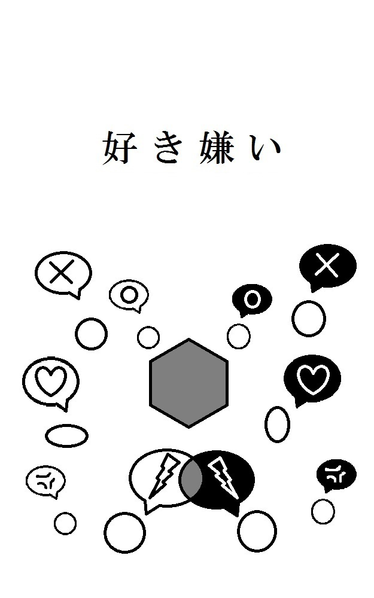
「いいか、ここはこうやって、その後にこうするんだ。」
とある会社のオフィスで、上司が部下に対して仕事の進め方を教えていた。
「わかりました。しかし、その方法よりも、こっちを使ったほうが簡単で早くないですか？」
部下の指摘に対して、上司は首を横に振った。
「駄目だ駄目だ。この会社は、ずっとこの伝統的な方法でやってきたんだ。そのことを評価してくれているお客さんだっている。とにかくこの方法でやっといてくれ。」
そう言って上司はその場を離れた。
「伝統ねぇ......。時代遅れな人だな。もっと効率的で、利益の出る方法があるのに。まったく、無能な上司のもとで働くのは大変だ。」
一人になった部下が、ブツブツと文句を言いながら仕事に取り掛かった。
「我々は自由を取り戻す！我々は平等を取り戻す！我々は幸せを取り戻す！他人に遠慮する必要などあるものか！悪いやつらに手加減など不要だ！」
「現在、新しい指導者による演説が行われています。会場はすごい熱気です。」
酒場のテレビからアナウンサーの興奮した声が聞こえてくる。
「あっ、どうやら演説が終わったようです。さっそく会場にいる人たちに感想を聞いてみましょう。」
アナウンサーが会場にいる人たちに近づき、インタビューを始めた。
「演説はどうでしたか？」
「最高だったよ！自由、平等、幸福。俺たちが失ったものを、あの人は取り戻してくれる！綺麗事しか言わなかった他の指導者とは違う！誰もが正しいと思いながらも、言いたくても言えなかったことを、あの人は言ってくれる！実現してくれる！それに、新しい指導者になる前から成果を出しているのも素晴らしいよ！」
「ありがとうございます。ご覧のように、新しい指導者はとても評価が高いようです。」
「けっ、何が自由を取り戻すだよ。くだらねぇ。」
テレビの映像を見ていた一人がつぶやいた。それを聞いて、隣で酒を飲んでいたもう一人もうなずく。
「まったくだ。そもそも、あの指導者には落ち着きがない。あんな品のないやつが指導者だなんて、何かの冗談だろう。」
そう言って、頭に手を当てながら大きなため息をついた。
「あんなのに政治を任せられるはずがない。投票したやつらは何を考えているんだ。」
「テレビに出ていたやつらは、新しい指導者がすでに成果を出しているとか言っていたが、そんなのは偶然だ。そして、その偶然の成果も一時的なものに過ぎない。あんな指導者に期待しているなんて馬鹿みたいだ。」
「なぁに、すぐに後悔することになるさ。」
そう言って一人が酒をぐいっと飲んだ。それを見たもう一人が不思議そうに尋ねた。
「あれ？いつも飲んでいるお気に入りの酒じゃないんだな。」
「あぁ、あれな。あの酒を作っている工場が、俺の嫌いな国に移動しちまったんだ。」
それを聞いた一人は大きくうなずいた。
「なるほどな。だから同盟国の工場で作られている酒を飲んでいるわけか。やっぱり作る国が違うと、酒のうまさも変わってくるからな。」
その後も二人は、嫌いな国や新しい指導者、そして、それらを応援する人々を批判し続けた。
『史上初！歴史的一歩！長年争ってきたＡ国とＢ国がついに和解！』
ある喫茶店で、スーツを着たビジネスマンのような男が新聞を読んでいた。見出しに続いて、新聞にはこう書かれていた。
『両国の代表は、戦争の激戦地であった地域を共に訪れ、祈りを捧げることに同意した。さらに、戦争の被害を受けたＡ国の地域にはＢ国が、Ｂ国の地域にはＡ国が復興の援助をすることも決定した。お互いに援助をして助け合うことで、友好関係を築くことが狙いだと思われる。』
新聞を読みながら、男はコーヒーを飲んでいた。男は苦々しい表情をしていたが、それはコーヒーの苦さのせいではなかった。
「余計なことを。激戦地を訪れるのが、一つの場所だけで済むはずがない。一つでも訪れてしまえば、うちの地域も訪れるべきだという意見が、必ず他の地域からも出てくるはずだ。しかも、毎年訪れろというおまけ付きでな。」
男は新聞を折りたたんでテーブルに置くと、深くため息をついた。そして、天井を見上げながら、何やら考え始めた。
「そういった声を利用するか......。他には、復興に使われる援助資金を、バラまきだと批判させてもいい。自分の国のことは自分でやれ、他国への支援よりも国内が先だろうという世論に誘導することができれば......。」
男はそこまで言ったところで、再び深いため息をついた。
「まったく、面倒なことになったものだ。各国が争っているほうが、都合のいい人間もいるというのに。」
そうつぶやくと、男はコーヒーを一気に飲み干して席を立った。
「おい、今やっているテレビを見たか？まったく、ふざけてやがる。」
「見た見た。なんてひどい番組だ。テレビ局め、ふざけるなよ。」
「出演者を見てみろよ。レフト思想のやつらばっかりだ。この番組はひどいレフト番組だ。」
「何言ってやがる。しゃべっている時間を比べてみろよ。ライト思想のやつらばっかりしゃべっているじゃねぇか。長々と話しやがって、こんなライト番組なんか終わってしまえ。」
「てめぇこそ何言ってやがるんだ。どう考えてもこの番組はレフト......おい、今の見たか？ライト思想の出演者が話した直後にコマーシャルを流しやがった。話した内容をコマーシャルによってあやふやにするつもりだ。信じらんねぇ。」
「はー、信じられん。コマーシャルに入る直前に発言することで、その発言を視聴者に印象づける作戦だ。最後に発言させたら、まるでその発言が結論のようじゃないか。信じらんねぇ。」
「お前、さっきからふざけるなよ。考え方が偏ってんだよ。このテレビ局は、毎朝レフト番組を放送しているだろうが。だから、この番組もレフト番組なんだよ。」
「なんだと、お前のほうが偏ってんだろうが。このテレビ局は、毎晩ライト番組を放送しているだろうが。だから、この番組もライト番組に違いねぇよ。」
「なんだ、やるのか。」
「おう、やってやるよ。かかってこいよ。」
「お前ら、本当にインターネットだと元気だな。」
「人々は神に祈りました。すると、奇跡が起こりました。神に祈りが通じたのです。さらに、人々には次々と幸運な出来事が続きました。それはまさに、予言にあったとおりでした、と。」
一人の子どもが読んでいた本を閉じた。
「ふん、何が奇跡だ。何が予言だ。そんなもの偶然に決まっている。」
子どもはそう言って、持っていた本を投げ捨てた。
「未来の予想なんて、今なら誰だってできるじゃないか。例えば、明日の天気を予想することぐらいなら子どもにだってできる。あの本に書いてあることだって、何らかの前ぶれに気づいた人が適当なことを言って、それがたまたま当たっただけだ。そして、その偶然を、周りの人が予言だと言っているんだ。デタラメを言って、人々をだましていたに違いない。」
子どもは怒ったようにそう言うと、先ほど投げ捨てた本を蹴り飛ばした。そして、その場にひざをつくと、祈るように手を合わせた。
「あぁ、女神さま。女神さまこそが本物です。女神さまのおかげで幸せな日々を送ることができています。信じられるのは女神さまだけです。他の者が信じる偽物の神など、消えてしまえばいいのです。あぁ、女神さま。これからもお導きください。」
そう言って子どもは祈り続けた。
「どうかな、地球人というのは不思議な生き物だろう？」
とある星の研究所。二人の宇宙人が、地球の観察を行っていた。
「ほんと不思議ですね。しかし博士、一体どういうことなのでしょう。まったく同じことを見たり聞いたりしているのに、人によって受け取り方が真逆になっています。それぞれの価値観が違うのでしょうか？」
うーむ、と言いながら、博士と呼ばれた宇宙人は考え込んだ。
「価値観は同じだと思うのだよ。同じ社会のルールの中で生活しているわけだし、教育や道徳だって共通しているはずなのだからね。」
「それじゃぁ、何が違うのでしょう。」
そうだなぁ、と言って博士は上を見上げた。
「地球人は、自分が信じたいものを信じているように見えるなぁ。人によって信じたいものが違うから、同じものを見聞きしても、意見や受け止め方が違うのかもしれない。」
「むぅ、なんだか難しいですね。結局のところ、我々が地球人と接触するときには、何に気をつければいいのですか？」
「それはだね、えーと......ちょっと待ってくれ。」
そう言って、博士は近くにあった資料を手に取った。
「簡単に言えば、好感度が大切だということだ。どうやら地球人は、相手に元々抱いている印象や好感度によって、対応が変化するようだからね。」
「好感度......それはそんなに大事なものなんですか？」
「そりゃぁもう大事だよ。好きな人が好きなものは好き。嫌いな人がやることはすべて不快。もし、好きだった人のことを嫌いになったら、他の好みも大きく変化する。地球人の多くは無意識にやっているようだが、好感度によって、他人や物事に対する接し方を大きく変えているのだよ。」
その説明を聞いた宇宙人は、驚いた様子で言った。
「そんなに違うものですか。それでは、地球人と初めて会うときは、第一印象が良くなるように、お土産でも持っていくとしますか。」
「それが良いだろうね。印象が良ければ、多少の無理は聞いてくれるだろうし、ちょっとした失敗や悪さぐらいなら許してくれるさ。」
そう言って博士はニッコリと笑った。
「そうですね。地球人どもを利用したり、支配したりするのは後にしましょう。」
「うむ。きっと印象さえ良ければ、地球人のやつらは、私たちのために喜んで働いてくれるさ。私たちが地球人に助けを求めれば、きっと全力で助けてくれる。だって我々は、良い宇宙人なのだから、ね。」
二人の宇宙人はニッコリと笑い合った。その笑顔はとても優しく、あたたかく、友好的な笑顔だった。
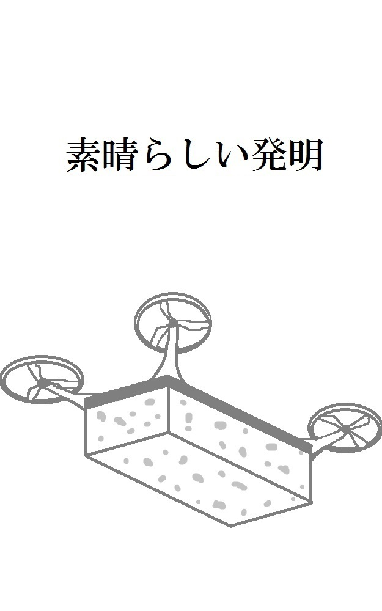
「この部品をこうして、最後にこれを付ければ......。」
ここは小高い丘の上にある研究所。人里離れたこの研究所で、エヌ博士は長い間、一人で研究を続けていた。
「よし、これで完成だ。ついに、ついに完成したぞ。」
エヌ博士の目の前には、スポンジのようなものが置かれていた。しかし、それはただのスポンジではなかった。スポンジの大きさはエヌ博士と同じぐらい大きく、プロペラも付いていた。
「これで多くの人を助けることができるぞ。いや、人だけでなく、地球を救うことだってできるだろう。よし、善は急げだ、さっそくこの装置を使ってみよう。」
そう言ってエヌ博士は、大きなスポンジの装置を持って、研究所を飛び出した。
「水を吸い上げる装置ですか？」
とある国の役人が、エヌ博士に尋ねた。
「そうです。見た目はただの大きなスポンジですが、これは素晴らしい発明なのです。実際に見ていただくのが一番ですから、さっそく始めましょう。」
そう言ってエヌ博士は、手元にある小さなリモコンを操作し始めた。すると、スポンジはプロペラによって宙に浮き、そのまま海の上へと移動した。
「それでは、ご覧ください。」
エヌ博士は役人にそう言ってから、リモコンのスイッチを押した。すると、海から海水が浮き始め、上空にあるスポンジへと吸い込まれていった。
「おぉ、これはすごい。スポンジが海水をどんどん吸収していく。」
今までに見たことのない光景を目にして、役人が驚いた声を上げた。
「あのスポンジには、特殊な素材が使われているので、見た目よりも多くの水分を吸収することが可能です。もちろん、水の重さに耐えられるように、プロペラも特別なものを使用しています。」
エヌ博士はリモコンを操作して、水の吸収を止めた。
「さぁ、次にいきましょう。この吸い上げた水を活用するのです。」
「それでは、先ほど吸収した水を、この砂漠へと放水します。」
エヌ博士と役人は砂漠へとやってきていた。エヌ博士は小さなリモコンを取り出して、操作を始める。
スポンジがふわふわと上空へと飛んでいき、かなりの高さになったところで止まった。そして次の瞬間、スポンジから雨のような放水が始まった。とても広い範囲に水が降り注いでいる。
「おぉ、まるで恵みの雨のようだ。」
役人は感動したように声を上げながら、空を見上げている。そんな役人に対して、エヌ博士が説明を行う。
「このように、先ほど吸い上げた水を、雨のように降らせることも可能ですし、降らせる範囲を限定することも可能です。今は、私たち二人の場所には降らないようにしています。さらに、こういった機能もあります。」
そう言って、エヌ博士がリモコンを操作し始める。すると、今度はスポンジの真下に向かって、滝のように水が放出され始めた。
「放水の量や形式を変えることも可能です。」
「これはすごい。これなら、地球の砂漠化の問題も解決できる上に、海水面の上昇も防ぐことができる。素晴らしい発明です。」
役人は喜びながら、水が降った砂漠を歩き始めた。
「ぜひとも、その装置をわが国で採用......ん、ちょっと待ってください。」
役人はその場にしゃがみこむと、砂漠の砂を手に取った。役人はそのまま、しばらく砂を観察していたが、やがてゆっくりと立ち上がると、エヌ博士の方を振り返った。そして、エヌ博士に対して首を横に振った。
「エヌ博士、これでは駄目です。」
役人の言葉にエヌ博士は驚いた。
「な、なぜです。これなら地球の様々な問題を解決できるのですよ。」
エヌ博士はそう言ったが、役人は首を横に振った。そして、手に取った砂をエヌ博士に見せた。
「これを見てください。砂が水分をほとんど含んでいません。砂漠の砂は、水を保つ力が弱いのです。それに、海水を利用したことで、砂に塩分が含まれてしまいました。塩分が多く、水を保つ力も弱いような土地では、植物を育てることなども難しいでしょう。ただの砂の方が、まだマシです。」
そう言って役人は、手に持っていた砂を地面へと捨てた。
「今回のお話は、なかったということで。また素晴らしい発明ができましたら、ご連絡ください。」
役人はエヌ博士にそう言うと、その場を去っていった。
砂漠には、エヌ博士とスポンジの装置だけが残された。
「あぁ、なんてことだ。私の研究は、まったくの無意味だったというのか。」
研究所へと帰ってきたエヌ博士は、一人で頭を抱えていた。
「これで地球を救えると思っていたのに、この装置では駄目だというのか。」
エヌ博士は悲しそうにつぶやくと、スポンジの装置へと目を向けた。エヌ博士はそのまま、しばらく装置を見ていたが、急に何かをひらめいたように手をたたいた。
「そうだ、海水だから駄目だったのだ。それに、水に困っているということは、水が足りないということだけではない。どうして今まで気がつかなかったんだ。」
エヌ博士はそう叫ぶと、装置を持って外へと飛び出していった。エヌ博士の表情は、とても明るかった。
「――という装置なのです。」
「おぉ、それは素晴らしい発明ですね。この辺りは大雨が降ると、よく洪水が起きるので、とても助かります。」
エヌ博士は、洪水の被害に困っているという村を訪れ、村人に装置の説明をしていた。
「それでは、大雨のときには、この装置を川などに使ってください。ダムと違って、自然を破壊しませんし、広い場所も必要ありません。」
そう言ってエヌ博士は、村人に装置のリモコンを手渡した。
「ありがとうございます。実は、この村では洪水で悩まされているのですが、隣村は雨が降らずに困る時期があるのです。このスポンジは、吸い上げた水を降らせることもできるのですよね？」
村人の質問に、エヌ博士は大きくうなずいた。
「もちろんです。雨のように降らせることもできますし、滝のように降らせることも可能です。」
そう言って、エヌ博士はスポンジの装置を指差した。
「このスポンジには、吸い上げた水を保存することもできるようになっています。ですが、スポンジに吸い上げた水は、できれば一年以内に放水するようにしてください。衛生的に良くありませんから。」
エヌ博士の説明に、村人は笑顔でうなずいた。
「わかりました。一年も保存できるのなら大丈夫です。エヌ博士、素晴らしい発明をありがとうございます。」
そう言って、村人は頭を下げた。
「いえいえ、お役に立ててなによりです。装置が故障したり、他にも装置が必要な地域があったら教えてください。」
こうしてエヌ博士は、水が多すぎて困っているところ、水が少なすぎて困っているところに装置を提供し続けた。
エヌ博士の発明したスポンジの装置は、水害を防ぎ、水不足を解消し、多くの人々からとても感謝された。
「あぁ、良かった。これでたくさんの人々が幸せになれる。私の発明は無駄ではなかったのだ。」
エヌ博士は研究所で装置を作りながら、ほっとした様子でつぶやいた。エヌ博士の装置は世界中で評判となり、次々と注文がきていた。
「長い間、人々の幸せのために研究を続けてきてよかった。」
エヌ博士が喜んでいると、誰かが研究所の扉をたたく音がした。
「おや、誰だろう。装置を受け取りに来た人だろうか。それとも新しい注文かな。」
エヌ博士は装置を作る手を止めて、扉へと向かった。エヌ博士が扉を開けると、そこにはスーツを着たビジネスマンのような男が立っていた。
「初めましてエヌ博士。私は、とある国の職員です。エヌ博士の発明した装置のお話を聞いて、ぜひとも、その装置をわが国で利用させていただけないかと思い、やって来ました。」
「おぉ、そうですか。もちろん喜んで提供いたしましょう。どんなことに利用するのでしょうか。最近は利用の規模に合わせて、装置の大型化や小型化もできるようになりましてね。」
エヌ博士は笑顔で男に説明を始めた。
「もうすぐ大量生産も可能になりそうなのです。きっと、ご満足いただけると思いますよ。それで、水が多くてお困りですか。それとも、水が足りなくてお困りでしょうか。」
エヌ博士の質問に、男は少し考えるようなしぐさをして、こう答えた。
「そうですね......水が多くて困っている、といったところでしょうか。」
そう言って男は、目を細めて笑った。
「おい、援軍はまだ来ないのか！」
くぼみの中から、一人の兵士が大きな声で叫んでいる。それを聞いたもう一人の兵士が、別のくぼみから走って近づいてきた。
「わからん。さっきから呼びかけてはいるんだが、本部からは何も応答がない。」
走ってきた兵士は同じくぼみに入って、身を隠しながら答えた。兵士は背中に通信機を背負っている。いわゆる、通信兵と呼ばれる兵士だった。
ここは戦場の最前線。二人の周囲には、同じようなくぼみが多くあり、くぼみの中に身を隠しながら、兵士たちが戦っていた。銃声や爆発音が、ひっきりなしに鳴り響いている。
「通信機が壊れてんじゃねぇのか。まったく、こんな古い装備で勝てるわけが――」
「おい、あいつが来たぞ！」
通信兵が上空を指差す。そこには、人間ぐらいの大きさをしたスポンジが、プロペラによって浮いていた。その大きなスポンジが、二人に向かって飛んできていた。
「うわっ、なんだ！」
驚いた兵士が、銃でスポンジを撃ち落とした。
「なんだありゃ、敵の新兵器か？」
「お前、忘れたのか。この前、説明されたばっかりだろう。」
通信兵があきれたように言った。
「知らねぇよ。俺は目の前にいる敵を倒すことしか考えてないんだよ。」
「その倒すべき敵が、どんなやつかぐらいかは、ちゃんと知っておけ。」
通信兵は、やれやれといった様子で肩をすくめた。
「いいか、あれは体の水分を吸い取ってくる恐ろしい兵器だ。あの兵器にやられたやつは、体中の水分が吸い取られて、ミイラのようになってしまうらしい。」
通信兵は説明を続ける。
「さらに、最近は大型化した兵器も出てきて、こちらの部隊が一斉にやられたこともあったそうだ。逆に、小型で静かな暗殺用も開発されたらしくて、うちの指揮官は毎日びくびくしているらしいぞ。」
それを聞いた兵士は大きな声で笑った。
「そいつはいいや。あの無能な指揮官のせいで、こっちは大変な目にあってるんだからな。むしろ、さっさとやられてくれねぇかな。」
「さっきから無線がつながらないから、やられている可能性はあるぞ。まぁ、やられたとしたら、さっきの兵器じゃなくて、爆撃によるものだと思うが。」
通信兵の説明を聞いていた兵士は、急にくぼみから身を乗り出して銃を撃った。またあの兵器が近づいて来ていたのだ。撃たれた兵器が、力なく地面へと落ちていく。
「なるほど、見た目は変だが、そんなに恐ろしい兵器だったのか。まったく、悪魔のような兵器を作るやつがいるもんだ。きっと、あの兵器を開発した人間も、悪魔のようなやつに違いない。」
兵士はそう言いながら、銃に弾を込めた。
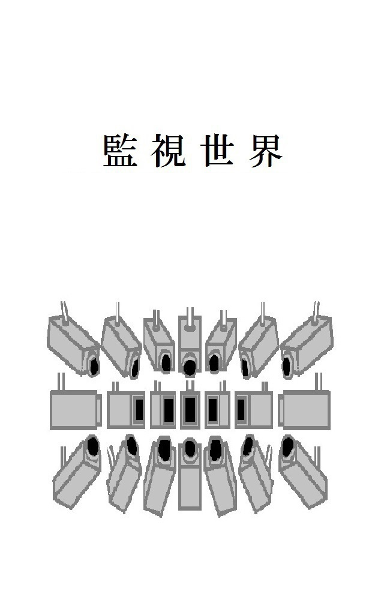
「我々の社会には、監視カメラが必要なのです！安心安全のためには、監視の強化が必要なのです！」
「それは国による監視社会の始まりだ！断じて認めることはできない！」
国の政策を決める場所で、人々が大声で議論をしていた。
政府は国民の安全を守るために、国の様々な場所に監視カメラを設置することを提案した。しかし、多くの国民が政府による監視を恐れて反対した。
「監視社会反対！人権を守れ！我々に自由を！」
国中で多くの個人や団体が、監視カメラ設置に反対するデモ行進を毎日実施した。国民の反対を受けて、政府による監視カメラの設置は中止になると思われた。
しかしある日、二つの事件が起きた。二つの事件は、どちらもとても悲しく、痛ましい事件であった。人々は犠牲になった者たちを悲しみ、犯人に対して怒りを抱いた。
だが、似ている二つの事件は、まったく違う結末を迎えた。一つの事件は、監視カメラの映像によって犯人がすぐに逮捕されたが、もう一つの事件は、監視カメラが設置されておらず、証拠も何もなかったため、警察は犯人の逮捕は困難だと発表したのだ。
「なんてことだ。監視カメラがあれば犯人を逮捕できたのに。」
人々は監視カメラがなかったことに怒りの声を上げた。そして、その怒りの声は、監視カメラの設置を求める声に変わっていった。
「監視カメラがなかったせいで、犯人は今もこの国で平然と生活をしているのだ。」
「そんなことは許せない。今すぐにでも監視カメラを設置するべきだ。」
「その通りだ！これ以上、悲しい犠牲者を出すわけにはいかない！」
事件によって、監視カメラを設置することに多くの人が賛成するようになり、監視カメラは国中に設置された。そして、監視カメラを設置する流れは、世界中に広がっていった。
「監視カメラが設置されたおかげで、とても安心安全な世界になったな。」
ある店で二人の客が、お酒を飲みながら話をしていた。
「まったくだ。ほら、テレビを見てみろよ。ちょうど監視カメラについて質問しているぞ。」
一人が店にあったテレビを指差した。テレビには、通行人にインタビューをする様子が映っていた。
「監視カメラのある生活はどうですか？」
「最高だね。何か犯罪が起きても、すぐに犯人を捕まえることができる。監視カメラは犯罪の抑止力、つまり防犯にもなっている。監視されているというよりも、見守られているって感じだね。」
通行人に続いて、とある店の従業員が、インタビューに答える様子が映し出された。
「インターネットや、私たちの店舗での買い物なら、お客様の購入履歴は、すぐに調べることができます。しかし、他のお店で何を買ったのか、購入するまでに、どの商品と迷ったのかという情報はわかりませんでした。監視カメラが設置されたことで、お客様のあらゆる情報が共有され、よりよい商品を、お客様にご提供できるようになりました。」
爽やかな笑顔とともに、店員が監視カメラの利点について語っていた。
「良い時代になったなぁ。」
テレビを見ていた一人がそう言って、お酒をぐいっと飲んだ。
「まぁな。だが、監視カメラは良いことばかりじゃないみたいだぜ。ほら、あれを見てみろよ。」
そう言って一人が指差した先には、店の入口で、店員と言い争いをしている酔っぱらい客の姿があった。
「あぁ？なんだぁ？金なんて持ってねぇよ。この店には監視カメラがあるじゃねぇか。外にだってたくさんの監視カメラがある。だったら、俺がどこの誰だか、すぐにわかるじゃねぇか。後で請求書でもなんでも持って来い。じゃあな。」
そう言って、酔っぱらい客は店を出ていった。
「ちょっと、お客さん、そんなの困りますよ。」
店員が慌てた様子で酔っぱらい客を追いかけていった。
「なんだありゃ、ひどい客だな。」
客と店員のやり取りを見ていた一人が、あきれた様子で言った。
「そう思うだろう？でもな、あの酔っぱらい客のようなやつは結構いるんだぜ。酔っぱらい客が言っていたように、監視カメラが身分を証明してくれるからな。料金の支払いだけでなく、関係者以外立ち入り禁止の場所に、許可証を持たない人間や身分証を忘れた人間が、俺が入っちゃいけないやつだったら後で言いに来い、とか言って強引に入ろうとするトラブルも起きている。」
「へー、いろんなトラブルが起きているわけだ。」
「そういうことだな。おっ、うわさをすれば、またトラブルみたいだぞ。」
そう言って、一人が店の外を指差した。店の外には警察官と、その警察官に何かを必死に訴えている女性の姿があった。
先ほどの酔っぱらい客を追いかけていった店員が、店の扉を開けっ放しにしていったので、女性の声は店の中にまでよく聞こえてきた。
「だから、ひったくりにあったの。今すぐ捕まえてよ。」
「いや、そうは言われましても、どんな犯人か覚えていないのでは、まずは犯人を探して、証拠を集めなければいけませんし......。」
そう言う警察官に、女性は町に設置されている監視カメラを指差しながら言った。
「監視カメラがあるじゃないの。ついさっきの出来事よ。すぐに捕まえられるでしょ。」
「いや、でも、監視カメラもたくさんありますから。それを一つずつ見ていくのは大変ですし、時間もかかりますので......。」
警察官の説明に、女性は怒った様子で叫び始めた。
「何を言っているの！監視カメラがあれば防犯にもなって、犯罪者をすぐに捕まえられるって言っていたじゃない。さっさと捕まえなさいよ！」
「うわぁ、ありゃおまわりさんも大変だなぁ。」
店の中から様子を見ていた一人が、同情するような声で言った。
「そうだろう？でもな、もっと大変なことになるぜ。ほら、来たぞ。」
一人がそう言って外を指差すと、警察官のところに一人の男性が駆け寄ってくるところだった。
「おまわりさん、大変です！わが家に泥棒が入りました。すぐに来てください。」
慌てた様子で男性が叫んでいる。
「ちょっと待ってください。今、この女性に話を聞いているところですので......。」
「いやいや、泥棒に入られたんですよ。一大事ですよ。すぐに来てください。証拠はあるんです。監視カメラの映像が、そりゃもうバッチリと！」
「いや、ですから、今はこの女性とですね......。」
警察官が男性に説明をしていると、また別の人が警察官に駆け寄ってきた。
「警部さん警部さん！大変だよ、万引きだよ。ついさっき！そこの店で！監視カメラがあるから証拠はあるんだ。早く来てくれ！」
「いや、私はまだ警部ではないのですが......いや、そうじゃなくて、今は別の事件の対応中でして......。」
警察官は人々をなだめながら、次から次にやってくる事件に対応していた。
「俺、転職することがあっても、絶対に警察官にはならないわ。」
店の中で飲んでいる一人がつぶやいた。それを聞いたもう一人が笑った。
「警察官だけじゃなくて、犯罪に関係する仕事はやめといたほうがいいぜ。監視カメラが増えたおかげで証拠も増えて、小さなトラブルでも訴える人が急増しているらしい。しかも、被害者と警察とのやり取りも、すべて監視カメラに記録されているからな。警察官も、いい加減な対応はできないってわけだ。」
まぁ弁護士はもうかっているらしいがな、と最後に付け加えて、もう一度大きな声で笑った。そんな話を聞いて、もう一人がうなずいた。
「なるほどなぁ。犯人じゃない人を間違って捕まえることも減るだろうし、監視カメラの設置は良いことなんだろうけど......。」
そう言って、外で続いている騒ぎに目を向けた。
「時代は変わったんだなぁ。」
事件や裁判の数が増加したことを受けて、政府は警察官や裁判官などの増員を決定した。
また、事件を未然に防いだり、現行犯で逮捕できれば、あまり時間をかけずに事件の解決ができるということで、監視を強化することも決定した。
「おい、見てみろよ。桜の花が満開だぜ。」
「おぉ、本当だ、花見をしている人間もたくさんいるな。しかし、本当に人間というものは、花を見ることが好きなんだなぁ。」
とある部屋の中で、二人が話をしていた。二人の目の前にあるモニターには、どこかの監視カメラの映像が映っていた。しかし、二人は警察官でも警備員でもなかった。
警察官の増員や、監視の強化が決定してから、しばらくが経った頃。監視カメラの映像は、誰でも見ることができるようになっていた。その理由は、監視カメラの数が、あまりにも多くなりすぎたからだった。
お店や会社のカメラは、店員や警備員が監視できるが、道路や路地裏、公園といった公共の場所は、監視をする人員がまったく足りなかったのだ。
そこで、監視カメラの映像を一般に公開することが決定した。
はじめは多くの国民が、映像の公開に少なからず不安を抱いていた。しかし、公開される映像は、店舗や公共の場所に設置された監視カメラだけに限定され、家の中や、部屋の中の映像は公開されないということで、それほど大きな問題は起きなかった。それに、人々にとっては、監視される不安よりも、他人を監視できるという魅力のほうが大きかった。
全員で監視して、全員が監視される。そんな社会が出来上がっていた。
「しかし、いつの間に咲いたんだろう。この前まで咲いていなかったのに。ちょっと巻き戻してみよう。」
そう言って、監視カメラの映像を巻き戻す。
「あー、咲いたのは最近だな。というか、まだほとんど咲いていないのに、花見をしている人たちがいるぞ。」
「おやおや、花が咲いているかどうかを、ちゃんと監視カメラで確認すれば良かったのにな。」
「まぁ、監視カメラの映像が一般に公開されてから、まだ間もないからな。映像を使いこなせていない人間もいるんだろう。」
一人が近くにあった資料を手に取る。
「しかし、人によっては、映像を監視だけでなく、色々なことに利用しているようだ。」
資料には、監視カメラの映像を様々なことに利用している事例が書かれていた。
『実家の近くの様子はどうかな。うわっ、いつの間にこんなに開発されたんだ。』
『昔、よく食べに行っていた屋台のおじさんはどうしているかな......あ、まだやってる。なつかしいなぁ。』
『今日は山の映像を見ようかな、それとも海の映像にしようかな。お寺や神社の映像を巡る旅もいいなぁ。』
『あっ、明日のイベントの準備をしている。へー、こんな風に準備をするのか。大変そうだなぁ。』
人によって、監視カメラの映像を楽しむ方法は様々だった。なかには、監視カメラの前で芸を披露して、お金を稼ぐ人まで出始めていた。
「こんなに色々な利用方法を、よくもまぁ考えつくものだ。まったく、感心するよ。」
資料を手に持った一人が、苦笑しながら言った。
もちろん、監視カメラの本来の目的である、監視としての役割も、きちんと果たしていた。
『怪しい男がいる。』
『あいつは浮気をしている。』
『また夜中にあいつらが騒いでいる。』
『こいつは仕事をさぼっている。』
会社の中にある監視カメラの映像も公開されたので、警察だけでなく、各企業にも様々な通報がされるようになっていた。そのため、社内での犯罪はなくなったが、企業の経営や、職場の環境に対するアドバイスや意見まで届くようになっていた。
『若い人ばかり雇いすぎじゃないか。』
『あそこを工夫すれば、もっと効率よく仕事ができるだろう。』
『もっと男性も女性も平等に雇うべきだ。』
『働かせすぎ。もっと休ませるべきだよ。』
「暇な人間がいるものだな。」
「本当にな。こっちの資料もすごいぞ。」
一人がそう言って、近くにあった資料を、もう一人に手渡した。資料には、個人宅に関する映像の楽しみ方と書かれていた。
『今日は休日なのに、あの部屋の住人は外出しないなぁ。』
『この人、いつも同じ時間に出勤するなぁ。まるでロボットみたいだ。』
『あれ、今日は帰ってくるのが遅かったな。どこかで寄り道でもしていたのだろうか。』
『あっ、またあんなもの食べて。もっと栄養のあるものを食べないと。』
個人宅の中の映像は公開されていなかったが、家の前の道路や、マンションの廊下などの映像は公開されていたので、住んでいる人が外出する時間や生活習慣は、すぐに知ることができた。しかし、だからといって盗みに入ったり、犯罪を実行したりするような者はいなかった。なぜなら、いつでも誰かが監視しているので、すぐに通報され、警察がやってくるからだ。
「それにしても、窮屈な星になったものだ。」
監視カメラの映像を切り替えながら、うんざりしたように一人が言った。
「まったくだ。地球の偵察が楽になったのは良かったが、任務が終わっても帰れないのでは意味がない。」
もう一人も、ため息をつきながら肩を落とした。実は、この二人は、他の星から地球の偵察にやって来た宇宙人だった。
「カメラを壊して脱出するのはどうだろうか。」
一人がそう提案したが、もう一人は首を横に振った。
「駄目だ。昔の何倍にも増えた人工衛星が常に監視している。それに、カメラが壊れれば、すぐに政府の人間や、マスコミが駆けつけて来るぞ。急いでカメラを直さないと苦情が来るし、カメラが壊れたということは、何か面白いことが起きている、ということだからな。」
「なんてこった。そういえば、以前に大きな災害が起きたことがあったが、被災地の復旧よりも、カメラの設置が優先されたと聞いたことがあるな。まったく、おかしな星になったものだ。」
一人があきれたように言った。
「海に逃げた仲間もいるらしいけどな。」
「おぉ、それはいいな。深海ならカメラもないだろうしな。」
「だが、もうすぐ海にも監視カメラが設置されるそうだ。魚型カメラや鳥型カメラも開発中らしい。」
「あぁ、なんてことだ。もうカメラはうんざりだ。」
そうつぶやいて、宇宙人は頭を抱えた。
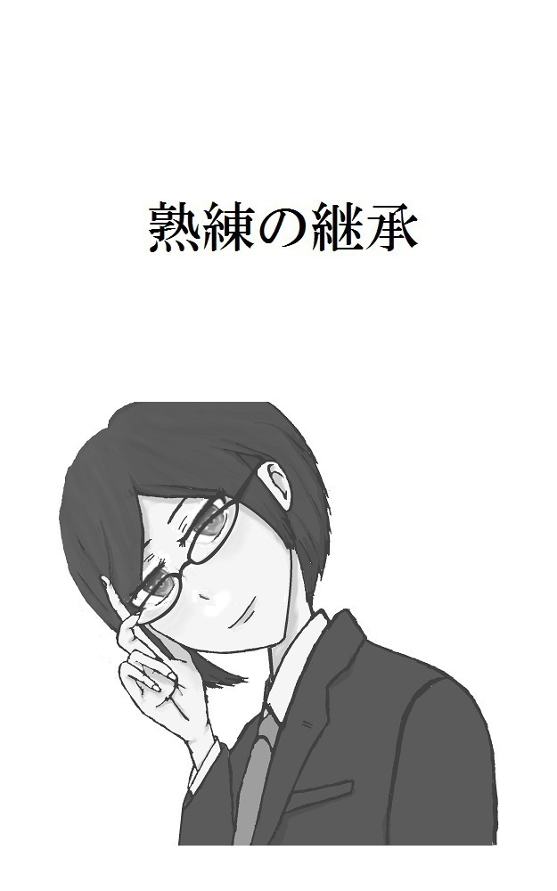
「お待たせいたしました。Ａ銀行の担当者の方ですね。」
「はい、そうです。本日はよろしくお願いいたします。」
とある会社のロビーで、スーツを着た二人が、あいさつを交わしていた。
「こちらこそ、よろしくお願いいたします。本日は、私が案内役を務めさせていただきます。では、こちらへ。」
そう言って、メガネをかけた案内役の社員は、銀行員をロビーの奥へと促した。
「こちらの会社では、熟練者の技術の継承をされているとお聞きしたのですが......。」
通路を二人で歩きながら銀行員が尋ねた。
「その通りです。わが社は、様々な熟練者の技術を記録し、その記録を別の人間に継承することで発展してきました。今回はＡ銀行の方に、技術の記録や継承が、どのように行われているのかを実際に見ていただいて、その上で契約されるかどうかを判断していただければと思っております。」
社員はそう答えて、ニッコリと笑った。
しばらく通路を進むと、通路の壁がガラス張りになっているところがあった。社員はガラス張りの壁の前に止まると、ガラスの向こうに見える部屋を手で示しながら説明を始めた。
「彼らの装着しているメガネが、わが社の開発した装置の一つになります。」
銀行員が部屋の中に目を向けると、部屋の中では、工具を持った作業員たちが、何かを作っているところだった。作業員の全員がメガネのような装置を着けている。
「あのメガネには熟練者の技術が記録されております。作業員には作業の方法、順番、コツといったものまで、すべてが映像と音声で説明が行われております。」
「なるほど、そういう仕組みになっているわけですか。」
銀行員は感心したように言って、作業員たちの様子を観察した。
まだ若い作業員のようだったが、作業をする手の動きには迷いがなく、とてもなめらかに作業を進めていた。
「まるで何十年も経験を積んできた熟練者のようですね。風格さえ感じられます。」
「ありがとうございます。実は彼らは、こちらの作業に就いてから、まだ一ヶ月ほどしか経っていないのですよ。」
社員の説明を聞いて銀行員は驚いた。
「一ヶ月ですか？たった一ヶ月でここまで上達するわけですか。」
「もちろん個人差はありますが、ほとんどの人が一ヶ月ほどで、商品として出せるものを作れるようになりますね。早い人では二週間ほどで合格することもあります。」
「それはすごい。」
銀行員が感心したようにうなずいた。そして、ふと気づいたように、社員のかけているメガネを指差した。
「もしかして、そのメガネも......？」
「はい、その通りです。彼らが着けているものとは少し形が違いますが、このメガネにも熟練者の技術が記録されております。実は、私はまだ案内役をあまりしたことがないのです。」
そう言って、社員は少し照れたように笑った。
「いやいや、全然わかりませんでしたよ。素晴らしい装置ですね。」
メガネの装置によって作業手順が示され、その手順に従って作業を行う。綺麗な文字を自分で書くのは難しくても、お手本の字を上からなぞるだけなら、誰にでも簡単にできるということと同じことなのだろう。
「といっても、このメガネの装置だけでは、技術を身につけるのに時間がかかります。そこで、研修用として別の装置を使用しております。こちらです。」
二人は通路をさらに先へと進み、同じようにガラス張りになっている壁の前で止まった。銀行員はガラスの向こうにある部屋の中へと目を向けた。部屋の中では、先ほどと同様に作業員たちが何かを作っていた。
「こちらは熟練者の動きを記録した専用のスーツになります。スーツを着ることによって、熟練者の動きとまったく同じ動きを行うことができます。」
「なるほど、そのスーツによって熟練者の動きを体に覚え込ませることができるわけですね。」
銀行員は納得したようにうなずきながら、部屋の中の作業員に注目した。
案内役の社員は、専用のスーツと説明していたが、作業員たちが着ているものは、銀行員が着ているような一般的なスーツとは、まったくの別物だった。頭や首、指先に至るまで、全身に装置が取り付けられていた。先ほどのメガネの装置も着けている。
「まずは、この専用のスーツを着て研修を行います。次に、先ほどご覧になったように、メガネの装置だけを着けて作業をするようになります。そして、最後には何も着けずに作業を行えるようになります。」
「何も着けずに作業を行えるようになれば、まさしく、作業員本人が熟練者になったということですね。」
「おっしゃる通りです。」
そう言って社員はニッコリと笑った。二人は再び通路を先へと歩き始めた。
「しかし、専用のスーツやメガネといった装置に頼らずに、熟練者本人が教えたらいいのではないですか？」
通路を歩きながら銀行員が質問をする。
「そうですね。わが社でも、熟練者本人が実際に作業員たちに教えることもあります。ただ、わが社は人数が多いので、作業員全員に教えるのは大変ですし、とても時間がかかります。学ぶ側の作業員の数に対して、教える側の熟練者の数はとても少ないので、一人の作業員に付きっきりで教えるというわけにもいきません。」
それに、と言って社員は説明を続ける。
「熟練者の技術を記録することで、熟練者本人が気づいていなかった作業のコツや癖といったものも、わかることがあるのです。」
「なるほど、そういうこともあるのですね。」
銀行員はうなずいて、さらに質問を続けた。
「しかし、わざわざ人間に技術を覚え込ませなくても、熟練者の技術を記録した機械やロボットで商品を作ればいいのではないですか？」
「確かにおっしゃる通りです。機械やロボットのほうが効率的だと思います。ですが。」
そこまで言って、社員は小さく笑った。
「うちの社長はロボットが嫌いなんですよ。」
「おやおや、そうでしたか。」
社員の答えを聞いて、銀行員も笑った。
「それに、機械やロボットではなく、人間の手で商品を作ることで、わが社は成長してきましたから。」
科学技術が発展していくにつれて、多くの企業が機械やロボットを導入し、商品を大量生産するようになっていた。
「他社と同じ条件で勝負をするつもりはない、ということですか。」
「はい。人間の手によって作られる、質が高く、味わいのある商品を提供できるのが、わが社の強みです。」
「なるほど。しかし、その人間ならではの味わいも、今の科学技術なら再現できるのではないですか。」
「おっしゃる通りです。」
銀行員の疑問に対して、社員は大きくうなずいた。
「ですが、お客様は人間の手によって作られた商品を求めています。たとえ同じ商品でも、ロボットが作ったものより、人間が作ったもののほうが人気があるのです。」
「そういえば、以前に問題になった会社がありましたね。人間が作っている商品だと宣伝していたのに、実際はロボットが作っていたことがわかって、大騒ぎになっていました。」
銀行員の話を聞いて、社員はニッコリと笑った。
「その騒ぎが起きて、わが社は確信しました。お客様は、たとえ商品の違いがわからなくても、人間が作ったものを求めているのだと。」
「では、他社との差別化や、技術の継承のためにも、熟練者の技術の記録は、とても大切なものですね。」
「えぇ、とても大切なものです。なので、記録は厳重に保管されております。」
二人は通路の突き当たりにある扉の前で止まった。社員は扉を開けて、銀行員を中へと促した。銀行員は中へと進んだが、部屋の中には何もなかった。真っ白い壁に囲まれた、ただ広いだけの部屋だった。部屋の中を見渡しながら銀行員が言った。
「厳重に保管されているのなら安心ですね。他社に技術の記録を盗まれたら大変ですからね。」
銀行員の後から部屋へと入ってきた社員が、銀行員の隣へと並んだ。
「そうですね。そこでわが社は、記録を盗まれないように色々と対策をしております。わが社は様々な分野、業種に仕事を広げました。そして、それぞれの分野で、熟練者の技術を記録しているのです。その中には、軍事やコンピューターの専門家たちも含まれております。」
そう言いながら、社員は銀行員の少し先を歩き始めた。
「なるほど。そういった方々の技術で守られているのなら、盗まれる心配もなく、安心ですね。」
「はい、とても安心、安全です。記録を守るために、様々な分野における熟練者たちの技術を利用しておりますから。」
もちろん、と言って先を歩いていた社員が立ち止まり、銀行員を振り返った。
「泥棒やスパイの技術も、ね。」
「......気づかれていましたか。」
そう言って銀行員、いや、銀行員として潜入していたスパイは笑った。スパイは笑っていたが、社員を見るその目は真剣で、警戒心に満ちていた。
「スパイに共通する特徴も、わが社にはすべて記録されています。一般人のふりをしていても、無意識にしてしまう動作や癖などを隠すことは難しいのです。」
「そういうことか。そして、この部屋に通された時点で、私の負けだったというわけだな......。」
スパイは顔を社員へと向けたまま、目だけを動かして真っ白な部屋を見渡した。
「はい。抵抗は無意味です。この部屋は、侵入者を捕まえるために作られた部屋ですから。もちろん、熟練者の技術を使って、です。」
スパイは部屋を見渡していたが、再び社員へと目を向けた。いつの間にか、社員はメガネを外していた。
「それで、私はどうなるのかな。ここで消されてしまうのかな。」
スパイの質問に、社員は小さく笑いながら答えた。
「まさかまさか。あなたの技術を記録させていただくだけです。スパイの技術に関しては、まだ基本的なデータも少ないのです。それに、見たところ、あなたはかなりの熟練者のようですから。」
そう言って社員はニッコリと笑った。
「この部屋には色々と仕掛けがあるようだな。それに、たとえ君を倒したとしても、他の熟練者たちが次々と出てくるのだろうね。一ヶ月もあれば、戦闘集団を作ることさえ可能なのだから。」
「もちろんです。あなたも、そのための技術や記録を目当てに潜入されたのですよね。」
社員の言う通りだった。スパイがこの会社に潜入した目的は、あらゆる技術の記録を盗み出し、短期間で最強の軍隊を作り出すことだった。社員に対して警戒したまま、スパイは考えを巡らせた。
この案内役の社員も、戦闘に関する様々な技術を身につけているのだろう。メガネを外したということは、熟練者と同等の実力があるということを意味している。
目には目を、スパイにはスパイを、か。この社員は、戦闘に関する技術だけではなく、私と同じ、スパイに関する技術も持っているに違いない。なにしろ、一つの技術に対して、一ヶ月もあれば熟練者を育てることができるのだから。いや、早い者なら二週間だったか。
そこまで考えたところで、スパイは肩をすくめて、大きなため息をついた。
「やれやれ、やっかいなものを開発してくれたものだ。他のスパイたちが使っているような技術は通用しないというわけか。」
「その通りです。データの数は少ないですが、すでにスパイの技術は、いくつか記録されております。あぁ、ご心配なく。あちらにある部屋で、技術の記録が終われば、お帰りいただいて結構です。」
そう言って社員は、自分の後方を手で示した。部屋に入ってきたときの扉とは、別の扉が開いていた。
「また盗みに来るかもしれないのに、ずいぶんと自信があるのだな。」
スパイはそう言ったが、頭の中では、社員の自信の理由を理解していた。
自分の技術を記録されるということは、その技術を持った熟練者を育てられるということだ。次に来るときには、今回の侵入で使った技術は使えない上に、自分自身を相手にしなければならない。いや、新しい技術を手に入れた、この社員かもしれない。
「ぜひとも、またお越しください。」
そう言って、社員はニッコリと笑った。
「次は負けんさ。」
スパイも小さく笑いながら、開いた扉へと向かって歩き始めた。
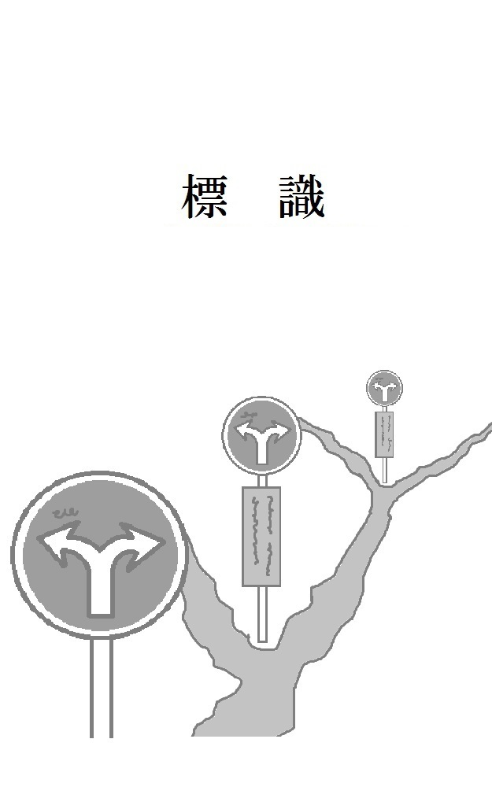
「しかし、死んでからも手続きが必要だなんて知らなかったなぁ。」
私の隣でおじさんがつぶやいた。
ここは死後の世界。私もおじさんも既に死んでいる。近くにある標識には、死んだ人はここでいくつかの手続きをしなければならない、といったことが書かれていた。
おじさんとは死んでからここで知り合った仲だったが、なんとなく気が合ったので一緒にいる。
「まぁ、死後の世界にも色々とあるのでしょう。仕方がないですよ。」
私はおじさんに言いながら、周りを見渡した。私とおじさんの他にも、数人の人がいる。きっと彼らも、死んでからここに送られてきたのだろう。私たちと同じように戸惑っているのが感じられた。
「そうだね、仕方がないか。お、みんな進むみたいだね。僕たちも行こうか。」
周りの人たちが移動し始めるのを見て、私とおじさんも後についていく。周囲には枯れ草の生えた草原が広がっていて、その中を一本道が遠くまで続いていた。
「老若男女といった感じですね。」
前方を歩く人たちを見ながら、私はおじさんに話しかけた。
「そうだね。ご高齢の方だけでなく、まだ若い人もいるようだ。事故でなくなったのかもしれない。かわいそうに。」
おじさんは悲しそうな声で言った。私が見た限りでは、おじさんも寿命で亡くなるような年齢には見えなかったが、詳しくは聞かなかった。
おじさんと話をしながら、しばらく一本道を進んでいると、道が二つに分かれた。道の分かれ目には標識が立っていた。
近づいてみると、標識には板のようなものが付いていて、板にはこう書かれていた。
「右の道は、現世と同じ製品がある世界。左の道は、ゴミを使って作られた製品の世界。右は頑丈、左は故障。」
私とおじさんは顔を見合わせた。どうやら、死後の世界で使う製品を選べるようだった。右の道なら現世と同じ頑丈な製品だが、左の道だと捨てられたものを再利用して作るから故障が多いということだろうか。
「それなら、どう考えても右の道のほうが良いだろう。」
私は小さくつぶやいた。他の人も同じ考えだったらしく、みんなで右の道に進もうとしたところ、一人の女性が大声を上げた。
「ちょっと待って！標識に、左の道はエコだって書かれているじゃないの。」
そう言われて、私は改めて標識を見てみる。確かに女性の言うとおり、標識には左の矢印と一緒にエコという文字が書かれていた。だが、それがなんだというのだろうか。
「私は左の道に行くわ。地球に優しくない生活なんて、とても罪深いことよ。」
そう言って女性は、私たちと別れて左の道へと進んでいった。女性の後ろ姿を見ながら、おじさんがつぶやいた。
「僕の妻もあんな感じだったよ。エコといわれるものが大好きだった。誰かに迷惑をかけるわけでもないし、地球にも優しいのだろうから放っておいたけれどね。」
おじさんは懐かしそうに言った。しかし、その声は少しだけ悲しそうにも聞こえた。
私たちは右の道を選び、先へと進んでいった。すると、また道が二つに分かれ、標識が立っていた。標識には先ほどと同じように板が付けられていて、板には次のように書かれていた。
「右の道は、現世の最新技術で栽培された食べ物の世界。左の道は、原始的な方法で栽培された食べ物の世界。右は空腹知らず、左は満腹知らず。」
私とおじさんは顔を見合わせた。先ほどの分かれ道で製品を選んだのと同じように、死後の世界の食べ物も選べるようだった。
右の道は最新技術のおかげで食べ物がたくさんあるようだが、左の道は食べ物の量が少ないようだ。原始的な方法とは何のことだろう。そこまで考えたところで、私はつぶやいた。
「なんにせよ、右の道のほうが良さそうだ。」
みんなで右の道に進もうとしたところ、若い男性が大声を上げた。
「ちょっと待ってくれ！標識には、左の道は無農薬の有機栽培だって書かれているじゃないか。」
男性の言葉を聞いて、私は改めて標識を見てみる。男性の言うとおり、確かに標識には左の矢印とともに無農薬の有機栽培と書かれていた。だが、それが一体なんだというのだろう。
「俺は左の道に進むぜ。体に悪い食べ物を食うなんてごめんだね。」
そう言って男性は、私たちと別れて左の道へと進んでいった。
「僕の息子もあんな感じだったよ。急に食べ物にこだわりだしてね。まぁ、誰かに迷惑をかけるわけでもないし、食べてみると確かにおいしかったから放っておいたのだけれどね。」
若い男性の後ろ姿を見送りながら、私の隣でおじさんがつぶやいた。
私たちは右の道を進むことにした。さらに先へと進むと、これまでと同じように道が分かれていて、標識も見えてきた。私たちも慣れたもので、すぐに標識に付けられている板の文字を読み始めた。
「右の道は、現世と同じ法律が存在する世界。左の道は、法律の存在しない無秩序な世界。右は安全、左は危険。」
私とおじさんは顔を見合わせた。どうやら今度は、法律の有り無しを選べるようだった。右の道は法律が有るから安全、左の道は法律が無いから危険ということだろう。
それなら、どう考えても右の道のほうが良いに決まっている。そう考えて、右の道に進もうとしたところ、老夫婦が大声を上げた。
「ちょっと待ってくれ！標識には、偉い学者さんの解説が書かれておるぞ。」
「えーと、偉い学者さんが言うには、左の世界こそ、真の人間らしい世界なんですって。」
老夫婦の言うとおり、確かに標識には、そういったことが書かれていた。その偉い学者さんは何かすごい賞も受賞したらしい。しかし、それがどうしたというのだろうか。
「わしたちは左の道に進むぞ。すごい賞を取った偉い学者さんが言うのなら、間違いないじゃろう。」
「そうですよ。死んだ後にまで、現世の法律に縛られることもないですよ。」
そう言って老夫婦は、私たちと別れて左の道へと進んでいった。
「僕の家族もあんな感じだったよ。権威ある人の言葉はすべて正しい。偉い人の言うことに従っていれば幸せになれる。まぁ、それで僕は離婚することになって、すべてを失ったんだけどね。」
さみしそうに笑いながら、私の隣でおじさんがつぶやいた。
私とおじさんは右の道を進んだ。もう残っているのは私とおじさんだけだった。
おじさんと一緒に、道に沿って進んでいくと、また分かれ道があった。もちろん標識も立っている。
「右の道は、新しい世界。左の道は、現世の思い出の世界。右はやり直し、左は繰り返し。」
こんな選択は私にとって考えるまでもなかった。現世が嫌で死んだというのに、どうしてまた繰り返さなくてはならないのだろう。私は迷わず右の道へと踏み出した。
てっきり、おじさんも右の道を選ぶだろうと思っていた。しかし、その私の予想は外れた。おじさんは左の道に立っていた。
「僕は左の道を選ぶことにするよ。右の道にある新しい世界だと、もう家族とは会えないだろうからね。色々あったけれど、やっぱり僕には家族が必要なんだ。」
おじさんの言葉に私は無言でうなずいた。おじさんは小さく笑うと、そのまま左の道を進んでいった。
私はおじさんと別れて、一人で右の道を進んでいく。歩きながら私は考えた。
私は現世が嫌いだ。だが、嫌いだからといって、ゴミを使った製品や、法の無い世界を選ぼうとは思わない。食べ物だって腹いっぱい食べたい。
私は現世の良いところだけを取り入れた、現世ではない世界に行きたいのだ。先ほどの標識には、右の道は新しい世界だと書かれていた。きっと、その新しい世界というのが天国のことなのだろう。
「おじさんの選んだ左の道は繰り返しと書いてあったな。きっと、現世での思い出を繰り返すという意味だろう。右の道は......なんだったかな。」
そんなことを考えながら歩いていると標識が見えてきた。しかし、今度は分かれ道ではなく、道の終わりに標識が立っていた。そして標識には、こう書かれていた。
「最新技術と権力と。あふれるほどの人と物。記憶は無いけど法は有る。思い出だけは、さようなら。ふたたびふたたび、やり直す。あなたが望んだ、現世の始まり！」
標識に書かれている文字を読み終わったところで、私の足元にある地面が崩れた。地面の下には、どこまでも暗闇が広がっていた。その暗闇へと私は落ちていった。
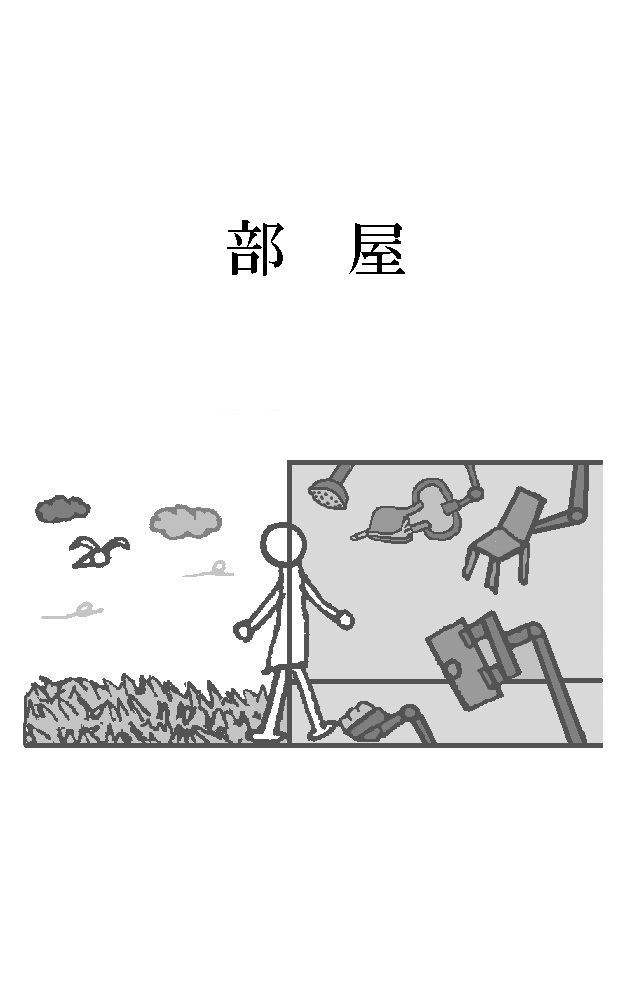
「ん、もう朝か。」
私は目を覚ますと、ベッドから起き上がった。洗面所で顔を洗い、テレビをつけて今日の天気を確認する。
「ふむ、今日は天気もいいようだし、ドライブにでも出掛けるか。」
そうつぶやいて、私は外出の準備を始めた。この家は一人暮らしには少し大きいぐらいの広さなので、何をするにも、そこそこ歩かなければならなかった。しかし、私は広い家が好きなので、この家に満足していた。しばらくして、出掛ける準備が終わり、私は家の外へと出た。
「いい天気だ。絶好のドライブ日和だな。」
空を見上げると、雲一つない青空が広がっていた。澄んだ空気を味わいながら、私は上機嫌で車に乗り込むと、目的地を決めずに適当に走り出した。
「ふー、風が気持ちいいな。」
車の窓を開けて、風を肌で感じながら私はつぶやいた。しばらく走っていると、広大な草原が見えてきた。
「おぉ、こんなところに草原なんてあったのか。ちょうどいい。今日は草原で、のんびりすることにしよう。」
私は草原の近くに車を停めて、草原へと走り出した。
「なんて素晴らしい開放感だ！」
私はどこまでも続いている草原を走り回った。私は跳んだりはねたりしながら、体全体で自然を満喫していた。
「やっぱり自然は良いな。とても広くて、のびのびと――うわっ。」
しかし次の瞬間、私は地面につまずき、勢い良く草原に転がった。走っていた勢いのまま、しばらく草原を転がって、ようやく体が止まったときには、私は大の字で草原の上に寝ていた。そのまま私は空を見上げる。
「はぁ、やっぱり外はいいな。こうして気分転換をしておかないと、あの部屋に何かあったときに気分が落ち込んでしまうからな。」
私はそう言って、ゆっくりと目を閉じた。草原に吹く風が気持ち良かった。
ふと、顔に水滴が当たるのを感じて私は目を覚ました。いつの間にか眠っていたようだ。空を見てみると、先ほどまでの青空は厚い雲に覆われていた。
「や、これはまずいぞ。」
そう言って私は起き上がったが、すぐに大粒の雨が降り出してきた。私は急いで車へと駆け出した。
「今日は一日中、晴れだと言っていたじゃないか。天気予報め、また外したな。」
朝に見た天気予報に対して文句を言いながら、私は車へと乗り込んだ。そして、すぐに車を発進させて、家へと続く道を急いだ。
「やれやれ、ひどい目にあった。」
無事に家へと帰り着いた私は、濡れた体を拭くためにタオルを取りに行った。家の中が広いので、タオルのある場所へ行くのにも時間がかかってしまう。こういうときだけは、家の中が広いというのも不便なものだった。
タオルで濡れた頭を拭いていると、ドアのベルが鳴った。
「おや、誰だろうか。」
私が扉を開けると、そこには友人が立っていた。友人は私に向かって片手を上げた。
「よっ、元気かい。って何だ、シャワーでも浴びていたのか？」
友人は私の姿と、首にかけたタオル見て驚いた様子で言った。
「いやいや、雨で濡れたんだよ。今日は一日中、晴れだと言っていたのに、天気予報が外れてね。まったく、絶対に当たる天気予報にすることもできるのだから、そうすればいいのに。」
私が天気予報に対する不満を口にすると、友人は笑った。
「はっはっはっ。そいつは災難だったな。まぁ、仕方ないさ。天気予報も当たったり外れたりしたほうが本物っぽいし、遊び心もあるだろう？」
「それはそうだが、私が出掛けたときに外さなくてもいいだろうに。」
友人の言葉に納得しながらも、私はまだ不満だった。
「まぁまぁ、いいじゃないか。あぁ、そうだ。災難といえば、こっちも災難なんだよ。」
「なんだ、雷にでも打たれたか？」
「天気の話じゃないよ。まぁ、雷に打たれるよりはマシかな。」
友人は笑いながら話を続けた。
「実は引っ越しの通知が来てね。また引っ越さなきゃいけなくなったんだ。」
友人の話を聞いて私は驚いた。
「なんだ、またか。この前、引っ越したばかりじゃないか。」
「そうなんだよ。しかも、部屋が今よりも、さらに狭くなるらしい。まぁ、部屋がちゃんと機能してくれれば別に構わないんだけどさ。」
「それは災難だな。新しい部屋は、どの辺りにあるんだ。」
「えーと、ここから少し離れたところの――」
そこまで言ったところで突然、友人の姿が消えた。友人の姿だけではない。周囲の景色も消えて、私の視界は真っ暗になった。
「やれやれ、またか。」
私はため息をついて、うんざりしたように言った。部屋の暗さに目が慣れたところで、私は部屋の壁へと歩いていき、壁を背に座りこんだ。
「相変わらず殺風景な部屋だ。」
私が今いるこの部屋は、先ほどまでいた広い部屋ではなかった。私の目の前には、家具も何もない、小さな部屋があるだけだった。いや、よく目をこらして見れば、扉のようなものが部屋の中央にあった。
「こう暗くては、何も暇つぶしができないな。」
暇を持て余した私は、部屋の壁に背中を預けながら、暗闇の中で考えごとを始めた。
世界は人口の増加によって、一人ひとりが使用できる住居の空間が減っていた。そこで開発されたのが、小さな部屋の中で仮想の生活を送ることだった。
「欲しいものはなんでも手に入る。車の運転も、本当に運転しているみたいで違和感はないし、雨も風も、まるで本物みたいに感じるのは素晴らしいのだが......。」
昔は頭に装置をつける方法もあったそうだ。しかし、装置をつけている感触で、どうしても違和感が生まれ、現実味を薄めてしまったらしい。
そこで、体には何も着けずに、部屋全体を別世界にすることが考えられた。部屋全体に仮想の風景を映すことで、本当にその場にいるかのように感じることができるようになったのだ。
「部屋自体も面白い仕組みだったし、人が生活する様子も不思議な光景だったな。」
以前に、この部屋がどのような仕組みになっているのか観察する実験を見たことがあった。
部屋の中央に人が立っていて、人が歩くのに合わせて床も動いていた。どんなに速く走っても、跳んだりはねたりしても、床が人の動きに対応して動くので、人の位置が部屋の中央から動くことはなかった。このような床の仕組みによって、こんなに狭い部屋でも、不自由なく生活することが可能になっていた。
他にも実験では、部屋の壁や床から扉が出てきたり、人の近くに椅子を用意したりしていた。
「忙しそうに機械が動いていたなぁ。」
今も部屋の中央に設置されたままの扉に目を向けながら、私はつぶやいた。
人の手や足が届く範囲にあるものだけが、その人の近くに用意される。しかし、部屋で生活する人には、物が用意される様子はわからない。まったく別の映像が、部屋全体に映し出されているからだ。
車を運転すれば、それに合わせて椅子なども振動し、窓を開ければ、風を再現した空気が吹きつけられる。
外を歩けば、草や土などの地面に合わせた感触の床や匂いまで用意される。
私が見た実験は、部屋全体に仮想の映像を映さずに観察するものだった。仮想の映像がなかったので、部屋の中心にいる人に対して、様々な装置が周りで動く様子を見ることができた。
「そのときは、なんともおかしな光景だと思ったものだが、実際にこの部屋で生活してみると、まるで違和感がない。」
私はゆっくりと部屋全体を見渡した。この部屋での生活にも、私はいつの間にか慣れてしまっていた。
実際は部屋の中心から一歩も動いていないわけなので、部屋の設定によっては、他の人とまったく会わない生活も送ることができた。私は友人とだけ会えるように設定していた。
「扉や椅子といった作り物だけはたくさんある。作り物だけは、な。」
新しい生活環境として世界中で利用されているこのシステムも、人口増加の影響で、システムを動かすためのエネルギーが足りていないらしい。
人が寝ている時間はシステムを動かすエネルギーの消費が少なくなるので、それぞれの部屋に別々の時間帯が割り当てられている。ある部屋では昼の映像でも、その隣の部屋では夜の映像が映し出されていることもある。
「今は、本当は夜だったのか。」
私は窓の外を眺めながらつぶやいた。窓の外にも、この部屋と同じように暗闇が広がっていた。本当の時間は夜なのだが、私の部屋には昼の時間帯が割り当てられていたらしい。窓のない部屋もあるそうなので、窓があるこの部屋は恵まれているほうだった。
「まぁ、窓があってもなくても、部屋に映像が映し出されていれば関係ないけどな。」
しかし、こうしてシステムが停止したときには、窓のありがたみを実感する。
窓から見える夜空の下には、見た目が同じような建物が無数に建っていた。現在も人口は増え続けているので、住居となる建物も建設され続けている。それだけでは人口の増加に対応できないということで、一人ひとりの部屋の広さも、どんどん狭くなっていた。
「そういえば、友人も引っ越しの通知が来たと言っていたな。」
きっとこれからも、部屋はもっと狭くなり、最後には立つことと寝ることができるギリギリの空間まで狭くなるのだろう。
それでも私は別に構わなかった。この部屋での生活は何の不自由もないからだ。しかし、それは部屋が正常に機能していればの話だ。
「完璧な生活、だったはずなのだが。」
もし、今のようにシステムが停止して、二度と復旧しなかったら......。そんなことを想像すると、私は怖くなる。
こんな、狭くて、暗い部屋で、たった一人。
そこまで考えたところで、私は考えるのをやめた。
「悪いことばかり考えていても仕方がない。大丈夫、きっと復旧するさ。次に目を開けたときには、いつもの部屋、いつもの日常があるはずだ。そう、きっと友人にだって......。」
私は暗闇に向かって小さくつぶやくと、ひざを抱えて、ゆっくりと目を閉じた。
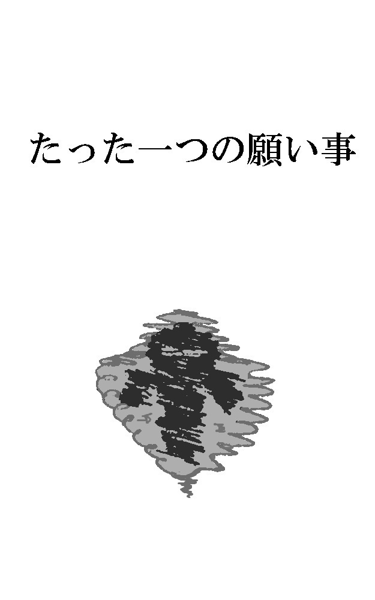
「おぉっ！ついに成功したのか。」
新聞を読んでいたエヌ博士は、驚きと喜びの声を上げた。エヌ博士が見ている記事の見出しには、こう書いてあった。
『歴史的快挙！魔神の召喚に成功か?! 』
見出しの隣には、研究者の顔写真も掲載されていた。その研究者はアイ博士といって、エヌ博士の先生でもあった人だった。
「魔神の召喚は、先生の昔からの夢だったからなぁ。そうかぁ、ついに成功か。」
エヌ博士は昔を思い出し、懐かしそうに目を細めたが、記事の続きを読んで顔色を変えた。
『アイ博士、成果を語らず姿消す』
「......一体どういうことだ。」
エヌ博士は急いで記事の続きを読み進める。
記事の本文を読んでみると、先生は魔神の召喚には成功したようだったが、具体的な内容は何も説明しなかったらしい。しかし、それよりもエヌ博士が気になったのは、先生が姿を消したということだった。
『魔神の召喚に成功したというアイ博士は、成果を尋ねる記者からの質問に対して「召喚には成功した。だが、何があったのかは言えない。下等で愚かな人間に、これ以上責められたくないからな」と答え、その場を去った。後日、詳しい話を聞こうと、記者たちがアイ博士の研究室を訪れたが、アイ博士の姿はなく、研究の資料も処分されていた。一部の専門家からは、本当に魔神の召喚に成功したのか、本当は失敗したのではないか、といった疑問の声も上がっており――』
記事を読んで、エヌ博士の頭は、ますます混乱した。
「これはどうなっているんだ。先生が魔神の召喚に成功したのは間違いないだろう。先生は口は悪いが、そんなことで嘘をつくような人ではない。しかし、これ以上責められたくないというのは、一体どういう意味なんだ。それに、どうして先生は姿を消したのか......。」
エヌ博士は独り言をつぶやきながら、あれこれと考えていたが、しばらくして首を横に振った。
「うだうだ考えていても仕方がない。研究者は行動あるのみだ！」
エヌ博士はそう言うと、出掛ける準備を始めた。行き先は先生の研究室である。
研究者は行動あるのみ。この言葉は、かつてエヌ博士が先生に「魔神の召喚なんて本当にできるんですか？」と聞いたときの先生の答えであり、先生の信念でもあった。
「ここは昔と変わらないな。」
エヌ博士は先生の研究室の前に来ていた。新聞記事に載っていた先生の研究室の場所は、以前にエヌ博士と先生が一緒に研究をしていたところだった。当時の二人は別々の研究をしていたが、よく休憩時間に話をしていて、エヌ博士は先生から多くのことを学んだ。
エヌ博士はその後、別の研究所に移ることになったが、先生は一人で研究を続けていたらしい。エヌ博士は返し忘れていた研究室の鍵を取り出すと、入り口の扉へと差し込んだ。扉の鍵が交換されていないか心配だったが、扉は昔と同じように開けることができた。
「鍵もそのままか。相変わらず、研究以外は適当な人だ。」
エヌ博士は小さく笑いながら、研究室の中へと入っていった。研究室の中も、昔とほとんど変わっていなかった。それどころか、昔よりも物が少なくなっていることにエヌ博士は気づいていた。
「やっぱり処分しているか。」
エヌ博士は先生の研究机へと近づいた。机の上は綺麗に片付けられていて、研究成果どころか、研究過程の資料すら見当たらない。
「失敗は成功の母だが、私は失敗が嫌いだ、か。」
昔、先生から聞いた言葉をエヌ博士はつぶやいた。先生は失敗が大嫌いらしく、失敗したときには、研究の結果だけでなく、その途中経過の資料まですべて処分していた。そして、また一から研究をやり直すのだ。
「研究者は行動あるのみ、なのはいいんだが、他の研究者のために、失敗例は残しておいて欲しいものだ。」
エヌ博士は苦笑いしながらつぶやいたが、そこでふと、疑問が浮かんだ。
先生は研究に失敗したときには資料をすべて処分していたが、成功したときには残していたはずだ。つまり先生は、本当は魔神の召喚に失敗していたということか？
いや、先生は成功したと言っていた。ということは。
「先生は魔神の召喚には成功した。しかし、先生は成功したこと自体が失敗だと、そう考えたとしたら......。」
エヌ博士はあれこれと考えようとしたが、すぐに首を横に振った。
「そんなことを考えていても仕方がない。研究者は行動あるのみだ。」
エヌ博士は研究室にある本棚へと近づいた。本棚には、魔神の召喚に関する資料が、ぎっしりと収められていた。
先生は、自分の失敗した研究成果は手加減なしに処分するのだが、参考にする資料は綺麗に保存する。エヌ博士は先生の言葉を思い出していた。
「いいか、エヌ。参考資料は他人の成果だ。いわゆる、成功が形になったものだ。というわけで、参考資料は丁寧に、そして敬意を持って扱わなければならない。」
そう言いつつ、先生は気に入らない資料があれば、ためらうことなく燃やしていた。燃やして処分するのが世界のためだ、とも先生は言っていた。
先生はそんな人だったので、資料が残っているかどうか、エヌ博士は不安だったのだが、魔神に関する資料は本棚に綺麗に残っているようだった。エヌ博士は本棚にある一冊の本を手に取った。
「ここにある資料を読めば、魔神を召喚する方法がわかるはずだ。魔神を召喚することができれば、先生に何があったのかもわかるはずだ。」
真相を知るためには、他の方法もあったかもしれない。しかし、エヌ博士は魔神を召喚する方法を選んだ。なぜなら、エヌ博士もまた、一人の研究者だったからだ。
「よし。後は、このまましばらく待てば魔神が現れるはずだ。」
エヌ博士は長い研究の末、ついに魔神の召喚に成功しようとしていた。エヌ博士の目の前にある床には、小さな煙が浮いていた。
「この煙が人間の大きさになれば成功だ。」
エヌ博士は椅子に座って、魔神が召喚されるのをゆっくりと待つことにした。
「ここまで長かったな。だが、これで終わりだ。」
研究を始めてから長い年月が経っていた。エヌ博士は目を閉じて、これまでのことを思い出した。魔神について調べているうちに、色々とわかったことがあったのだ。
まず、魔神の召喚には、先生以外にも、すでに何人かが成功していたということだった。しかし、魔神とどのようなやり取りをしたかなど、詳しい情報は記録されていなかった。魔神の召喚に成功した人たちは、先生と同じように成果を何も語らなかったため、失敗や嘘だと思われたようだった。
さらに、魔神は人間に友好的だということもわかった。本当に友好的かどうかはわからないが、召喚に成功した人が生き残っていることからも、その可能性は高いだろう。
そこまで考えたところで、エヌ博士は目を開けた。
「おっと、そろそろかな。」
そう言って、エヌ博士は椅子から立ち上がった。目の前の煙は、エヌ博士と同じぐらいの大きさになっていた。そして次の瞬間、煙の中から魔神が姿を現した。
「おぉ、これが魔神か。」
エヌ博士は驚きの声を上げた。
「初めまして。確かに私は、人間が魔神と呼ぶ者です。」
そう言って魔神は深々とおじぎをした。
「そうか、君が魔神か。いやはや、長い研究だった。しかし、これで私の研究も報われるというものだ。」
「そうでしょう、そうでしょう。私を召喚するのは、人間には大変なことだったでしょう。ですが、お喜びください。私は願いをかなえる魔神です。」
そう言って魔神は、にっこりと笑った。どうやらこの魔神は友好的な魔神らしい。ここまでは過去の資料にも記録されていたとおりであった。エヌ博士は魔神に質問した。
「君は願いをかなえる魔神ということだが、いくつの願いをかなえてくれるのだ。」
「私がかなえられる願いは一つだけです。」
そう言って魔神は指を一本立てた。
「ふむ、一つだけか。思ったより少ないのだな。とはいっても、私も年だ。魔神の召喚が成功した今となっては、お金も必要ないし、長生きしても意味がない。それなら、先生や、今まで魔神の召喚に成功した人について聞いてみるか。」
エヌ博士が願い事を考えていると、魔神が慌てた様子でエヌ博士に声を掛けた。
「あぁ、違うのです、違うのです。申し訳ありません、私の説明不足でした。かなえられる願いは一つだけと言いましたが、なんでも願いがかなうわけではないのです。かなえられる願い事の数だけでなく、願い事の内容も一つなのです。」
「なんだ、すでに内容も決められているのか。願い事を何にするか、悩む必要もなかったということか。」
苦労した割には大したことないな、とエヌ博士が言うと、魔神は首を横に振った。
「いえいえ、かなえることができる一つの願いが、それはそれは、とても素晴らしいものなのです。その願いというのが、なんと、この世界の人間をすべて幸せにするというものです。」
魔神はそう言って両手を広げた。そして、そのままの姿勢で説明を始めた。
「科学技術をとても発展させて、地球上のあらゆる問題を解決することができるようになります。災害の予知や制御も思いのままです。人間全員が不老不死になり、人生に飽きたら遠い未来まで眠ることも、永遠に眠ることも可能です。長き戦争も終わり、平和な世の中で、人々は幸せに暮らすことができるのです。」
魔神の説明を聞いて、エヌ博士は驚きの声を上げた。
「それはすごい！なんて素晴らしい願いだ。確かにそれなら、願い事が一つというのも納得だな。」
「では、この願い、かなえますか？」
「もちろんだ。そんなの、かなえるに決まって......いや、ちょっと待ってくれ。」
エヌ博士はそう言って、何やら考え始めた。そして、しばらくしてから魔神に質問をした。
「その願いは人間だけが対象なのか？」
「はい、人間だけが対象です。他の動物たちには影響しません。」
「例えば、不老不死になる人間や、幸せになる人間を選ぶことはできないのか？」
エヌ博士の質問に、魔神は首を横に振って答えた。
「それはできません。願い事は、この世界にいるすべての人間を幸せにすること、です。特定の人間を選択することも、例外をつくることもできません。」
魔神の答えを聞いて、エヌ博士は再び考えた。
もし、この願い事をかなえれば、すべての人間が幸せになる。良い人であっても、悪い人であっても、だ。世界中の悪い政治家や、犯罪者たちまで幸せになってしまう。今までひどいことをしてきた連中が幸せになる？しかも不老不死になるだって？
いや、悪人だけではない。普通の人間だってそうだ。私は魔神を召喚するために、多くの時間と労力を使って研究をしてきた。これまでに大変な苦労をしてきた。しかし、その研究の成功による恩恵を、努力も何もしていない人間たちが受けるというのか。
それだけではない。かつての先生に対する世間の反応はどうだった。魔神の召喚は嘘だった、失敗だったというだけではなく、研究の成果を独り占めしたのではないかという話まで出ていたじゃないか。
研究は成功して当然、成果を出して当然。そして、その研究成果の恩恵を、自分たちが受けるのは当然だという態度。
この世界の人間は、幸せになるべき人間か。全員が幸せになるだけの価値があるのか。
「下等で愚かな人間、か。」
エヌ博士は小さくつぶやいた。エヌ博士の心に、暗い感情が広がっていた。しかし、その暗い感情は、少しずつ小さくなり、やがて消えていった。
エヌ博士は力なく首を横に振りながら魔神に言った。
「......やめておくよ。」
「そうですか。」
魔神は残念そうな顔をして答えた。
「わざわざ来てもらったのに、すまないね。私はもう行くよ。」
そう言って、エヌ博士は研究室を出ていった。魔神は時間が経てば、勝手に消えるという研究記録があったからだ。研究室には魔神だけが残された。
「うーむ、また同じです。私を召喚した人間たちは、全員が同じ反応を示し、同じ選択をする。最初は、私を召喚できたことに喜ぶのに、願い事の内容を聞くと、誰もが残念そうな顔をして、願い事をかなえることをやめてしまう。私を召喚するのは、とても大変で、願い事だって素晴らしいものなのに、一体どうしてなのだろう。人間とは不思議な生き物です。」
魔神はそうつぶやくと、煙のように消えていった。
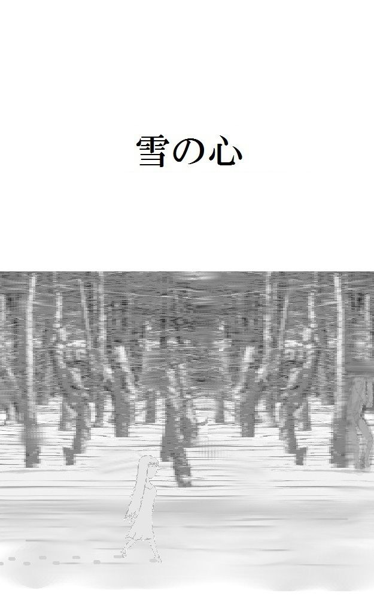
『昔々、雪深い地域に一人の男が住んでいた。男の住んでいる場所の近くには、雪の魔女が住んでいるといわれる山があり、誰も近寄ろうとはしなかった。しかし男は、雪の魔女のうわさを気にすることなく生活していた。』
その青年と出会ったのは、雪が降った後の山道を、いつものように散歩していたときのことだった。
「こんにちは、お嬢さん。」
いきなり呼びかけられてびっくりしたこと。私が人付き合いが苦手なこと。そして、見た目から同い年ぐらいだと思われる青年に、お嬢さんと呼ばれて腹が立ったこと。以上の理由により、私は青年を無視して散歩を続行した。
「ちょ、ちょっと待って。」
青年が慌てながら私に駆け寄ってくる。そんな青年の反応に満足した私は、立ち止まって彼を振り返る。
「何？」
「いや、この辺りで人を見かけるのは珍しいから、つい声を掛けちゃって。」
青年の言うとおり、確かにこの辺りは、人々が住んでいる村から少し離れている。年間を通して雪が降る山岳地帯でもあるので、人影を見かけることは、ほとんどない。
「それに、君の肌が雪のように白いから、より気になっちゃって。」
そう言って青年は笑った。
私は白い服を着ていた。そして、青年の言うとおり肌に関しても、服や雪と同じように白かった。青年なりに褒めたつもりなのだろう。少しだけ気分が良かった。
「声を掛けても無視して歩いていくから、心も雪のように冷たいんじゃないかと思ったけどね。」
そう言って青年は、また笑った。よく笑う青年だ。
ムカついたから、青年の左足を思い切り蹴飛ばしてやった。蹴った私の足のほうが痛かった。
「人を傷つけると、傷つけたほうも痛いんだよ。」
青年が自慢げに、知ったような口をきく。それがまたムカついたから、今度は逆の足を蹴り飛ばそうと足を引いたが、私はそこで動きを止めた。
青年の右足が、木でできた頼りない足であることに気付いたからだ。
「今日、北の山で女の子を見かけました。」
僕は目の前に座る先生に報告をする。
「それは良かった。どんな子だったかね。仲良くなれたかい？」
先生は僕の右足を、木製の足から機械の足に取りかえながら聞いた。
「肌も服も真っ白な女の子でした。無愛想でしたが、色々な話をしました。左足は、いっぱい蹴られましたが。」
僕は女の子と過ごした時間のことを先生に話した。ちなみに、女の子に話した『人を傷つけると、傷つけたほうも痛い』という話は、先生から教えてもらったものだった。
「その子は優しい子だね。」
先生は小さく笑いながら言った。
「やさしい？」
「思いやりがあって、他人を気遣えるってことだよ。女の子は、君の右足は蹴らなかったんだろう？」
「そうです。彼女は僕の左足ばかり蹴りました。」
「右足が木製の足だと気付いたからだろうね。やっぱり、その子は優しい子だよ。」
先生はそう言って笑ったが、そうだろうか、と僕は思った。彼女は僕の右足を蹴らないかわりに、形が変わるんじゃないかと思うぐらい左足を蹴ってきたからだ。
「優しい......優しいかなぁ......。」
僕は首をひねりながら、つぶやいた。
村から少し離れたこの小屋で、僕と先生は二人で住んでいる。先生は色々なことを知っていて、僕に教えてくれる。最近は、僕の体の機械について先生から学んでいる。
先生が言うには、とりあえず、僕が自分でパーツを修理できるようになって欲しいそうだ。パーツの修理が無理そうなときには、僕が自分で新しくパーツを作れるようになることが最終的な目標らしい。
「これでよし。ちょっと試しに動かしてみてくれ。」
先生に言われて、僕は取りかえが終わったばかりの右足を動かしてみる。
「大丈夫です。特に違和感はありません。」
僕は右足を動かしながら、先生に感想を伝えた。
少し前から、機械の右足の調子が悪かったので、先生に修理をしてもらっていた。修理をしている間、機械でできた足のかわりに、木製の足を着けて過ごしていたのだ。
「その子は雪の精かも知れないな。」
僕の右足の動きを観察しながら先生がつぶやいた。
「雪の精ですか？」
「昔から伝わるお話でね。この辺りで一年中、雪が降るのは、その子が雪を降らしているからだとも言われているんだ。」
「へぇ、すごい子なんですね、あの子。」
「まぁ、その子が本当に雪の精なのかは、わからないけどね。ただ、雪の精には、あまり人々は近付こうとはしないんだ。本能的に恐怖を覚えるのかも知れない。」
「きょうふ？」
「危険を感じるということかな。だから、この辺りには人が住んでいないだろう？まぁ、危険な目にあったという話は聞いたことがないけどね。でもきっと、その子は、さみしかっただろうね。」
「さみしい？」
「ずっと一人で、心が満たされないってことかな。誰だって一人は嫌だろう？だから仲良くしてあげるんだよ。」
「わかりました、先生。」
僕は彼女と仲良くなれるか自信がなかったが、とりあえず彼女に毎日会いに行くことにした。
初めて会った日から、青年は毎日、私の散歩コースに来るようになった。私と初めて会った場所で、いつも青年は待っていて、私の散歩に付き合った。
歩きながら、お互いに色々な話をした。彼の話のほとんどは、彼が先生と呼ぶ人物からの受け売りだったが、山で暮らす私にとっては、とても興味深いもので、聞いていて楽しかった。
青年は相変わらずデリカシーがないというか、乙女心がわかっていない発言をするので、そのたびに、言葉と足を使って青年を非難した。初めて会った日の次の日には、彼の右足は、しっかりとした作りの機械の足にかわっていたので、遠慮なく右足も蹴り飛ばした。
そんなことを繰り返しているうちに、青年の足を蹴っても、蹴った私の足が痛くならない蹴り方もわかってきた。それを青年に伝えたら「それは良いことなのかな？悪いことなのかな？」と真剣に悩み始めた。
そんな青年の姿がおかしくて、私はお腹を抱えて笑った。
「明日に手術ですか？」
僕は先生に尋ねた。
「そう、急なんだがね。今まで良い方法がなかったんだが、やっと見つけることができたんだ。」
そう言って先生は嬉しそうに笑った。
「ヒントになるものは、とても身近にあったんだ。身近にありすぎて、見えなくなっていたんだろうね。」
「そういうこともあるのですね。」
「まぁ、説明は手術が終わってからにしよう。私も今から色々と準備をしなければならない。手術は明日の夜から始めるから、明日にでも、あの子にも話しておくといい。」
「わかりました、先生。」
そう返事をして、僕は眠りについた。
『ある日、男は病気になってしまった。今まで誰も見たことのない病気で、村の医者にも治すことができなかった。そこへ、外から旅人がやってきた。旅人とは言葉が通じなかったが、旅人の持っていた辞書を使って、なんとか話すことができた。』
「心臓の手術？しかも今夜？」
僕の話を聞いた彼女は驚いた声で言った。手術当日、僕はいつものように彼女と散歩をしながら、手術について話していた。
先生が言うには、僕の心臓は完全ではないらしく、普通の人間と同じようには生活できないそうだ。僕と先生が、人々の住む村から離れたところで暮らしているのは、そういった理由からだった。
「ハーツの手術と先生は言ったのね？」
「うん。外国の言葉で心臓っていう意味だよ。すごいでしょ。」
先生は機械だけでなく、医学にも精通していて、色々な国の言語で書かれた医学関係の本をたくさん持っている。本棚にあった辞書でハーツの意味を調べたら、心臓という意味が書いてあったのだ。
「ドヤ顔がムカつく。」
そう言って彼女は僕の足を蹴った。
「まぁ、頑張りなさいよ。成功を祈っているわ。」
彼女は別れ際にそう言ったが、そのときの彼女の表情が、いつもと違っていることに僕は気付いた。それは、初めて彼女と会ったときに見た、さみしげな表情だった。
「先生、この手術は本当にうまくいくのでしょうか？」
手術当日の夜。僕は手術台の上で横になりながら先生に尋ねた。
「大丈夫だ、君は何も心配しなくていい。手術は絶対成功するよ。」
先生はそう言って、僕に笑いかけた。
僕は先生にうなずいて、安心して目を閉じた。しかし、僕は目を閉じながら、彼女のさみしそうな顔を思い出していた。
どうして彼女は、あんなにさみしげな表情をしていたのだろう。目を閉じながら、僕は考え続けた。そして、あることに気がついた。彼女の表情には、さみしさだけでなく、ほんの少しだけ、恐怖も混じっていたということに。
『外からやってきた旅人は医者だった。旅人によると、男の病気を治すには、雪の魔女の心臓を手に入れればいいという話だった。村人たちは、雪の魔女は恐ろしいから無理だと止めた。しかし、男は心臓を手に入れるために、雪の魔女が住むといわれる山へと向かった。』
朝、私は山頂から遠くの山々を眺めていた。昨日の夜に、青年の手術が行われるということだったので、今頃は無事に手術が終わっている頃だろう。
「もう会えないんだろうなぁ。」
覚悟していたことだったが、思わず声に出てしまった。しばらく忘れていた、さみしさを思い出す。
私は頭を振って暗い気持ちを追い出すと、いつもどおり、散歩を始めることにした。
何年も変わらない景色。その景色の中を、昨日まで一緒に歩いていた青年は、もういない。青年の話を聞くことも、もうできない。
降り積もった雪をぼんやりと見ながら、私は散歩を続けた。
いつも青年が待っている場所が見えてきた。しかし、そこに青年の姿はなかった。わかっていたことだったが、やはり落ち込んでしまう。
そのまま、私はその場所を通り過ぎようとした。
「こんにちは、お嬢さん。」
突然、木の陰から青年が現れた。私は青年の姿に驚いて立ち止まった。そして、思わずつぶやいた。
「なんで......？」
「いやぁ、ごめんごめん。手術は成功したんだけど、その後に装置の仕組みについて先生から教えてもらっていたら、先生も僕も夢中になっちゃってね。急いでここまで来たんだけど、間に合って良かったよ。君も今日は、いつもより来るのがちょっと遅かったね。まぁ、そのおかげで僕も待ち合わせに間に合うことができたし、こうやって木の陰に隠れて、君を驚かすこともできたんだけどさ。」
そう言って青年は、いたずらっぽく笑った。
「そうそう、僕の手術は心臓じゃなくて、心の手術だったんだ。普通の人間と同じ心を持つためのね。装置や回路は完成していたんだけど、冷却部分の良い案が今までなくてね。でも、先生が水冷式っていう方法を開発したんだ。簡単に言うと、装置を水で冷やす方法なんだけどね。あっ、でも、ただの水だと冬に凍っちゃうし、機械もさびちゃうから工夫は必要なんだ。その辺りの説明が面白くて、時間を忘れちゃったんだけどね。こんなに身近に解決のヒントがあったのに今まで気付かなかったなんて、って先生が笑っていたよ。まさか、雪が解決のヒントになるなんてね。」
青年は楽しそうに、一気にそこまでしゃべると、近くの木の枝に積もっている真っ白な雪を手に取った。
「それにしても、ハーツという言葉に複数の意味があるなんて知らなかったよ。辞書にはちゃんと書いてあったんだけど、僕が見落としていたみたい。ややこしいけど、外国の言葉って面白いね。」
そう言って無邪気に笑う青年。違う、そうじゃない。そんなことは最初から、最初からわかっていた。
「......私が怖くないの？」
おそるおそる、私は青年に聞いた。
人々は私を怖がる。昔から私は人々から敬われると同時に、恐怖の対象としても見られてきた。
それは多分、人間が心を持っているからだろう。心を持たないこの青年なら、私を怖がる心配はなかった。しかし、青年が心を手に入れてしまえば、いくら全身が機械の青年でも、私に恐怖を抱くのではないか。そして、私とは二度と会ってはくれないのではないか。そう考えると不安で、そして怖かった。
「怖くないよ。むしろ君は幻想的で、とても綺麗で、そしてなにより可愛らしい。」
そう言って青年は笑った。
「心を手に入れたことで、色々なことを感じることができるようになった。先生に教えてもらわなくても、自分で自分の気持ちに気付けるようになった。これは、先生に教えてもらったんじゃなくて、初めて自分で気付けた感情。」
青年は真っ直ぐに私を見つめた。
「僕は君が好きだ。君と一緒にいたい。君と一緒に歩いていきたい。」
手に入れたばかりの心を込めて、青年は私に告白した。
私は突然の告白に頭が追いつかず、青年を見つめたまま固まってしまう。混乱した頭で思い出したのは、なぜか両親のことだった。そういえば、父と母も、何かの勘違いが縁で結ばれたという話だった。
そんなことを考えている間も、身体は熱くなり、顔が火照る。
「それは照れだね。」
そう言って彼は笑った。
......ムカつく。
私は彼の足を、思いっきり蹴飛ばした。
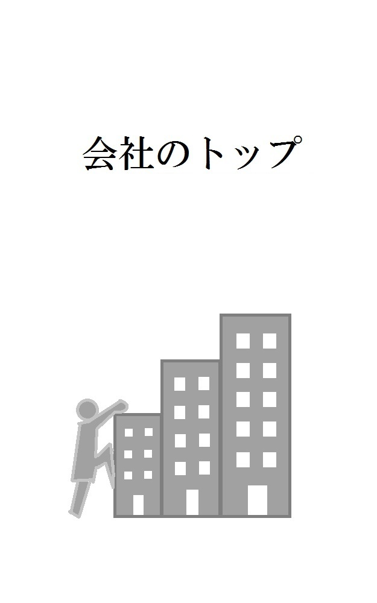
エヌ氏は会社員だった。エヌ氏が勤めている会社は、名前を聞けば誰もが知っているような大きな会社だった。
しかしある日、会社の経営陣が経営判断を間違え、大きな損失が出てしまった。そして、会社の経営陣は責任を取って辞任することになった。
「なんて無能な人間が経営陣をしていたんだ。あんな事業は失敗するに決まっているじゃないか。」
エヌ氏は仕事をしながら、経営陣に対する不満を口にした。事業の立て直しや、経営陣の交代による混乱で、現場は大忙しだった。
「現場がコツコツと頑張っても、上の人間が失敗したら、すべてが水の泡だ。あんな経営陣では駄目だ。私がこの会社を変えなければ。」
出世して、会社のトップになり、会社を変える。そう決心して、エヌ氏は今まで以上に一生懸命に働いた。
そうして、しばらくが経ったある日、エヌ氏は上司に呼ばれた。
「最近、頑張っているそうじゃないか。会社も君を高く評価している。君には来月から課長を任せようと思う。昇進おめでとう。」
そう言って上司はエヌ氏の肩をたたいた。エヌ氏の働きぶりが認められ、エヌ氏は昇進することになった。これまでよりも色々な仕事が任されるようになり、部下もできた。
「よしよし、順調だぞ。このまま昇進し続ければ、誰よりも早く会社のトップになれる。そして会社を変えるのだ。」
エヌ氏は目標に一歩近づき、さらに仕事に励んだ。
そんなある日、エヌ氏とは別の部署で働く社員が、大きな問題を起こした。問題を起こした社員は辞めさせられ、社員の上司も降格、社長は辞任した。
「まったく、この会社はどうなっているんだ。上の人間だけじゃなく、下の社員まで問題ばっかりじゃないか。」
エヌ氏は社内メールを読みながら怒っていた。社内メールには、今回の問題の詳細と、今後の対応策が書かれていた。
「私の部下が問題を起こさないように、しっかり監督しないといけないな。私がどれだけ頑張っても、部下が問題を起こせば、私も責任を取らなければならない。そんなことで降格になって、目標から遠ざかるわけにはいかない。」
エヌ氏は部下の教育を徹底し、部下の仕事もしっかりと監督した。そのおかげで、エヌ氏の部署の成績は上がり、エヌ氏の評価も上がっていった。
そしてある日、エヌ氏は上司に呼ばれた。
「最近の君の部署の勢いは素晴らしいな。ぜひとも、その君の力を、より多くの社員に発揮してもらいたい。君には来月から部長を任せようと思う。昇進おめでとう。」
そう言って上司はエヌ氏の肩をたたいた。エヌ氏は会社のトップになるという目標へ、また一歩近づくことができた。
エヌ氏は、これまでよりも、さらに多くの仕事を任されるようになり、部下も倍以上に増えた。
以前からエヌ氏の働きぶりは社内でも評判だったため、新しく部下になった者たちも、エヌ氏の指示には素直に従ってくれた。そして何より、エヌ氏自身の頑張る姿が、周りで働く社員たちに良い影響を与えていた。
これまで以上に責任のある仕事だったが、エヌ氏は与えられた仕事を見事にやり遂げ、実績を積み上げていった。
エヌ氏は社内だけでなく、社外でも高い評価を受けるようになった。
「いいぞ、もう少しだ。もう少しで私の目標を達成することができる。」
エヌ氏は会社のトップになるために、熱心に仕事に取り組んだ。
そしてついに、エヌ氏は上司に呼ばれ、会社の経営方針に関われる役職へと就くことになった。
「君の働きぶりは素晴らしいな。君自身の力も素晴らしいし、君の部下も優秀な者が多いと聞いている。君の仕事を部下に任せても大丈夫だろう。そして、君には来月から専務になってもらう。昇進おめでとう。」
そう言って上司はエヌ氏の肩をたたいた。
専務となったエヌ氏は、現場に出ることが少なくなり、直接の部下もいなくなった。だが、エヌ氏は満足していた。経営方針に関われるということは、会社を大きく動かすことができるということだからだ。
「やっとここまで来たか。会社の経営に関わることができる今なら、会社を正しい道に導くこともできるし、間違った道に進もうとしたときに止めることもできる。現場での経験を活かして頑張るぞ。」
エヌ氏は会社の経営方針を決める会議で積極的に発言し、会社を発展させようと頑張った。
しかし、エヌ氏の意見が採用されることは少なかった。なぜなら、会議には社長と数人の専務が出席していたのだが、最終的に採用されるのは、ほとんどが社長の意見だったからだ。
「こんなの社長の独断じゃないか。このままではいけない。会社を変えるには、なんとしてでも私が社長にならなければならない。」
そう決心したエヌ氏だったが、社長になるのは難しいということが判明した。
これまでは現場で働き、成果を出せば評価されてきた。しかし、今は会議での発言でしか評価されない。その会議も、ほとんどが社長の意見に決まってしまうし、エヌ氏の他にも数人の専務がいるので、なかなか目立つことができず、評価を上げることもできなかった。
「なんてことだ。せっかくここまで来たのに、経営方針を決められないのなら、意味がないじゃないか。一体どうすれば......。」
頭を抱えたエヌ氏に、一つの考えが浮かんだ。
「そうだ、会社に何か問題が起きればいい。そうすれば、社長が責任を取って辞任することになるだろう。社長が辞任すれば、専務の中から新しい社長が選ばれることになる。そのときに、私が社長に選ばれるかもしれない。」
そう考えたエヌ氏は、さっそく行動を始めた。
あまり評価の高くない社員を見つけて、その社員が問題を起こすように仕組んだ。問題の大きさも、専務までは影響が及ばず、社長だけが辞任するぐらいのものに調整した。
これまでずっとこの会社で働き、現場のことを一番よくわかっているエヌ氏にとっては簡単なことだった。もちろん、問題を仕組んだのがエヌ氏だとはバレないように工夫もした。
しばらくして、エヌ氏の狙い通りに社員が問題を起こし、問題が起きたことを世間に公表し、社長が辞任することになった。エヌ氏は新しい社長には選ばれなかったが、同じことを繰り返せば、いつかは社長になれることがわかっていたので、エヌ氏は焦らずに働き続けた。
そして、何度目かの社長の辞任を経て、ついにエヌ氏が社長に任命されることになった。
社長になる任命式を終えたエヌ氏は、上司の元へと向かっていた。もちろん、行き先は社長室である。エヌ氏は扉をノックしてから社長室へと入った。社長室では上司が待っていた。
「やぁ、任命式はうまくいったようだね。ついに君が社長だ。昇進おめでとう。」
そう言って上司はエヌ氏の肩をたたいた。
「ありがとうございます。」
さっそく上司は、エヌ氏を社長の椅子へと座らせた。
「あぁ、やっと会社のトップになることができた。これで会社を変えることができる。私の目標を達成することができるぞ。」
エヌ氏は社長の椅子に座りながら、自分が社長になったことに感動していた。そんなエヌ氏に上司が声をかける。
「そうそう、私は社長を辞任して、会長になることになったよ。君も社長になったばかりで不安かもしれないが、会長である私からの指示に従ってくれれば大丈夫だから。」
「えっ、あっ、はい。わかりました。」
無事に社長になったエヌ氏だったが、どうやら会社を変えるには、社長よりも上の役職である会長になる必要があるようだった。
「まぁいいか。どうせあと少しで、この会社は私のものだ。」
上司に聞こえないようにエヌ氏は小さくつぶやいた。
「あぁ、そうだ。君も社長になったことだし、この会社の仕組みについて説明しておかないといけないね。」
上司の言葉にエヌ氏は首をかしげた。
「会社の仕組みですか？私はこの会社でずっと働いてきましたから、今さら説明をされなくても大丈夫だと思いますが。」
「いやいや、一般の社員や世間には秘密にしていることがあってね。」
そう言って上司は説明を始める。
「君は社長になって、私は会長になった。でも実は、会長よりもさらに上の役職があってね。部外顧問や相談役、参与などといった多くの役職があるんだ。この会社の上に、経営陣が集まった別の会社があると思ってくれたらいい。そして、その経営陣会社の指示に従って、この会社は動いているんだ。面白い仕組みだろう？」
そう言って上司は笑った。しかし、エヌ氏にとっては笑い事ではなかった。
「ちょ、ちょっと待ってください！どうしてそんな仕組みになっているんですか。せっかく社長になったのに、それでは意味がないじゃないですか。」
「まぁまぁ、これには理由があるんだ。」
上司はエヌ氏を落ち着かせてから説明を続けた。
「昔、この会社が経営判断を間違えて、経営陣が一斉に辞任したことがあっただろう？経営陣が一斉に、しかも急に辞めることになったから、新しく社長になった人は、会社の経営のことがよくわかっていなかったんだ。かといって、経営陣が辞めないと、世間から非難されてしまう。そこで、社長よりも上の役職を作って、社長をサポートし、経営を安定させることにしたんだ。」
エヌ氏は上司の説明を聞いて納得したが、新たな疑問も頭に浮かんだ。
「なるほど、理由はわかりました。しかし、それにしても、社長より上の役職が多くありませんか？」
エヌ氏の質問に上司は大きくうなずいた。
「そうだね。でも仕方がないんだ。ほら、これを見てくれ。」
そう言って上司は、とある資料をエヌ氏へと手渡した。資料には、これまで会社で起きた問題がすべて書かれていた。その中には、エヌ氏が仕組んで起こした問題も書かれていた。
「最近、立て続けに問題が起きていただろう？そのせいで、引き継ぎが十分にできていなくてね。一番上の役職よりも、さらに上の役職を作って、経営判断ができる人を残しておく必要があったんだ。その結果、役職がこんなに多くなってしまったというわけだ。まぁ、不満かも知れないが我慢してくれ。私も上からの指示に従っているだけなんだ。あと十年もすれば、本当の会社のトップになれるさ。」
上司の言葉を聞いてエヌ氏は頭を抱えた。やっと会社のトップになれたと思ったのに、さらに上の役職があったなんて。会社のトップになることも、会社を変えることも、まだまだ先の話だったのだ。
「なんてことだ。あと十年も我慢しなければならないのか。」
エヌ氏が落ち込んでいると、社長室に秘書が駆け込んできた。
「社長、大変です！わが社の社員が問題を起こしました。すぐに会見の準備をお願いします！」
しまった、とエヌ氏は思った。なぜならその問題は、少し前にエヌ氏が仕組んだものだったからだ。エヌ氏が社長になったら、問題が起こらないように処理するつもりだったのだが、すっかり忘れていた。
「もう駄目だ。せっかく社長になったのに、その社長の地位も、こんなに早く失うことになるなんて。」
社員の起こした問題が、社長が辞任するほどの大きさであることは、仕組んだエヌ氏が一番よくわかっていた。エヌ氏は、この後のことについて考えた。
会見で謝罪をして、問題について説明して、私が社長を辞任することを発表しなければならない。ん？社長を辞任する？
「はっはっはっ。お互いに短い任期だったね。」
上司が大きな声で笑いながら、エヌ氏の肩をたたいた。
「昇進おめでとう。」
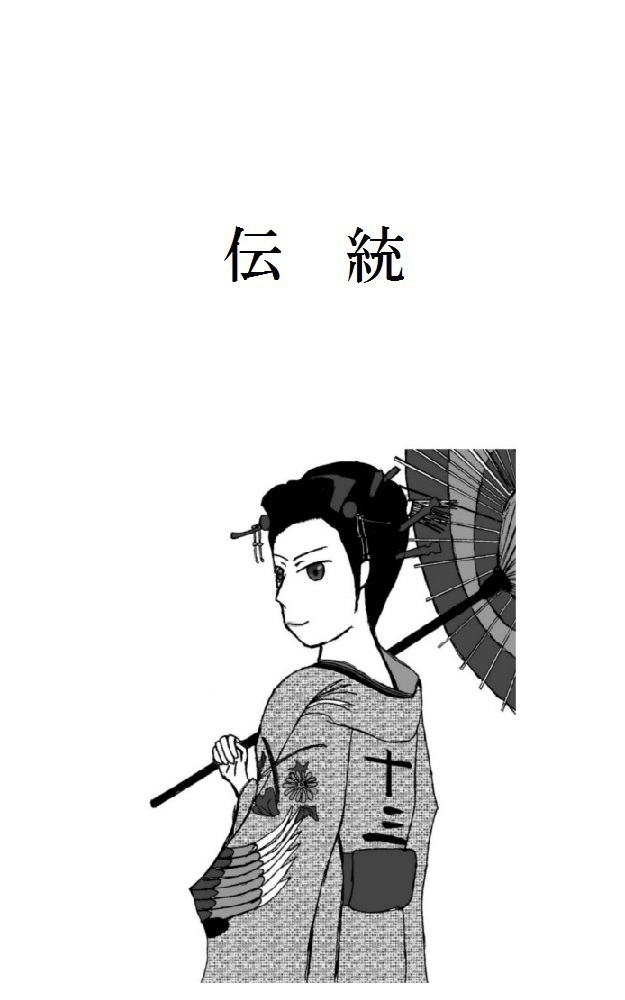
とある山の近くに村があった。村人たちは近くの村や町と交流しながら、のんびりと生活していた。そして、その村には、ある伝統があった。
「村長ー、いるかーい？」
村の長が住んでいる家に、村人の男がやってきた。村人に呼ばれた村長が、家の奥から出てくる。
「あぁ、おるぞ。どうかしたのか。」
「もうすぐ、うちの子が生まれるだろう？それで、名前は何だったかと思ってね。」
「なんだ、そんなことか。」
村長は紙の束を取り出すと、パラパラと紙をめくり始めた。
「お前さんところは八十三郎だな。近く生まれる予定の子は、女の子しかいないから、まぁ、この名前で確定だろう。」
「いやぁ、そうだったそうだった。八十三郎だったな。どうも数字を覚えるのは苦手でね。」
頭をかきながら男は言った。
「まったく、自分の子どもの名前なのだから、しっかり覚えておかないと駄目だろう。」
あきれた様子で村長が男に言う。
「それに、わざわざ私のところに来て確認するよりも、奥さんに聞いたほうが早かったんじゃないか？」
村長の言葉に、男は慌てて首を横に振る。
「とんでもない！もし、妻にそんなことを聞いたら、自分の子どもの名前を忘れるなんて何事だい！って怒られて、家を追い出されちまうよ。」
「はっはっはっ。それもそうだな。」
村長は大きな声で笑った。
この村の伝統。それは、生まれてくる男の子の名前に決まりがあることだった。
一人目から九人目までの名前は、数字の後に太郎をつける。一太郎や二太郎、九太郎といったように。
そして、十人目から九十九人目までは、数字の後に郎をつける。十郎、八十三郎、九十九郎というふうに。
百人目の子どもが生まれると、また一太郎と名付けられた。名前が一巡する頃には、前の一太郎は亡くなっているからだ。
小さな村だったので、男の数が多くなりすぎて、名前が足りなくなるといった問題は起きなかった。
いつからこんな伝統が始まったのかはわからない。だが、古くからの伝統に村人たちは素直に従い、村長となる者が代々、名前を管理していた。
しかしある日、村の男の数が百人を超えることになった。村人たちは村長の家へと集まり、名前をどうするべきか話し合った。
「今度うちで生まれてくるのは男の子だ。すると、この村の男の数は百人を超えてしまう。」
「一太郎の名前は、わしが使っているからな。医者には、あと十年は生きると言われたぞ。」
「じゃぁ、名前が足りなくなるな。しかし、まさか名前が足りなくなるほど男が増えるとは思わなかったよ。」
「なんでもベビーブームってやつらしい。この村だけじゃなくて、国中で赤ん坊が生まれているらしいぞ。」
「そりゃまた不思議なことがあるもんだ。」
「まぁ、子どもが増えるのは良いことだ。」
「そうだな。だが、名前の問題はどうにかしないといけないな。」
「村長、どうしましょうか。」
「うーむ。」
村長は、しばらく考え込んでいたが、やがて手をたたくと村人たちに言った。
「よし。では、こういうのはどうだろうか。これまでは数字の後に太郎や郎をつけていた。そこで、百人目からは数字の後に太をつけるのだ。百太、百一太というようにな。」
「おぉ、なるほど。それはいいな。」
「しかし村長、その名前は百人目から何人目までにつけるのですか？上限を決めておかないと、一太郎に戻ってきませんよ。」
「そうだなぁ。九百九十九人目までにするか。」
「そうですね。さすがにこの小さな村で、今の十倍の数に男が増えることはないでしょうから、それだけ名前があれば大丈夫でしょう。」
「いやー、良かった良かった。これで、この村の伝統も安心だ。」
こうして、名前に関する問題は解決し、村人たちは喜んだ。
しばらくして、この村の風習が世間で話題になった。一体どんな村なのだろうと、人々は興味を持ち、観光客が村を訪れるようになった。
このチャンスを活かそうと、村長は村人たちを集め、話し合いをしていた。
「村長、村長。最近、いろんなところから観光客が来ているようですよ。」
「そうそう。俺も昨日、若い子に声を掛けられてさ。お名前は何ていうんですか、なんて聞かれてよ。」
村人の一人が嬉しそうに話し始める。
「んで、名前を答えたらさ、さっき名前を聞いた人より数字が小さいのに若く見えるー、だってさ。いやぁ、嬉しかったね。」
「あぁ、俺も聞かれたよ。本当にみんな名前が違うんだー、とか言っていたな。名前が違うなんて当たり前のことなのにな。」
「まぁ、この村では当たり前のことでも、外では違うのだろう。俺らの名前には規則性があるし、同じ名前の男はいないからな。」
「そのとおり！」
村長が大きな声で村人たちに言った。
「これは村を発展させる大きなチャンスだ。このチャンスを活かさない手はない。そこでまずは、それぞれの名前の印鑑を用意して、その印鑑を常に持ち歩くようにしてくれ。」
「名字じゃなくて名前の印鑑かい？また何でそんなものを。」
「この村でスタンプラリーを実施するのだ。我々から印鑑を押してもらって、集めた印鑑の数に応じて賞品を提供する。」
「なるほど、うちは観光施設を運営しているから良い宣伝になるな。」
「そうだろう、そうだろう。観光客に村の色々な場所を巡ってもらうんだ。」
「ちょっと待ってくれ。大きな施設は男の従業員もたくさんいるから観光客も集まるだろうけどさ、こっちは個人商店なんだ。店には俺一人しか男がいねぇ。印鑑が一つしかもらえないんじゃ、観光客は来ないんじゃないか？」
「なるほど、確かにそうだな。よし、それなら、個人商店にいる男の印鑑は、スタンプラリーでは他より重要な印鑑として扱おう。それと、個人商店は看板を作って、名前を強調するようにしてくれ。」
「三百太商店って感じの、でっかい看板を作ればいいんだな。」
「そういうことだ。」
「あと、案内所みたいなものも用意したほうが良いんじゃないか？誰がどこにいるのかという情報を、観光客に提供したほうが良いだろうし。」
「そうだな。他にもパンフレットを作って、地図も載せておこう。」
「村長。村人の場所が記載されるのなら、あまり出掛けないほうがいいのかの？わしは海に釣りに行ったり、山に山菜を採りに出掛けたりするのじゃが。」
「うーむ、そうだなぁ......いや、別にいいんじゃないか。そういう珍しくて、なかなか会えない村人がいるというのも面白いじゃないか。」
「会えたらラッキーな、幸運を呼ぶじいさんか。そいつはいいや。」
村人の一人がそう言って笑うと、他の村人たちも笑った。こうして、村を訪れる観光客はどんどん増えていき、村はとても発展していった。
村人たちの生活は豊かになり、他の村や町との交流も増え、村は大きな都市となっていった。
そんなある日、村人たちは村長に再び集められた。
「おー、九百三十二太じゃないか。久しぶりだな。」
「あっ、八百太おじさん、お久しぶりです。」
「大きくなったなぁ。今は都会で働いているのか？」
「いえ、少し前まではそうだったんですが、今はこっちに戻って生活しています。この村も、都会と同じぐらい発展していますから。」
「そうだよなぁ。戻ってきて、びっくりしただろう。俺もまさか、こんなに大きな建物が村にできるとは思ってなかったよ。」
そう言って、目の前にある大きな建物を二人で見上げた。村の男の数が多くなったので、全員が入ることができる大きな会場が建てられたのだ。
「こんなに発展したのに、みんな今でも村って呼ぶんですね。」
「まぁ、昔からみんな、そう呼んでいるからなぁ。どんなに大きくなっても、ここは俺たちにとっては村なんだよ。」
二人は色々と話をしながら、建物の中へと入っていった。
「さて、みんなに集まってもらったのは他でもない。名前が足りなくなったのだ。」
集まった村人たちの前で村長が話をしている。
「すでに九百九十九太が生まれ、千人目の子どもも、もうすぐ生まれる予定だ。だが、みんなも知っているとおり、一太郎の名前は現在も使われている。そこで、名前をどうするべきか、皆の知恵を借りたい。」
村長から事情を聞いた村人たちは考えを出し合い、あれこれと話し合ったが、なかなか良い案が出てこなかった。そんなとき、一人の村人が声を上げた。
「村長、もう名前にこだわらなくてもいいのではないか。かつては小さな村だったところが、今ではこんなに大きく発展したのだから。」
村人の言葉を聞いて、村長はゆっくりとうなずいた。
「それもそうだな。名前の管理も大変になってきたことだし、もういいかもしれないな。よし、これからは新しい男の子が生まれても、好きな名前をつけていいことにしよう。」
村長が納得したことで、他の村人たちも賛成した。すると村人から、名前に関する別の提案が出始めた。
「村長、名前の伝統にこだわらなくていいのなら、女の子にも伝統と同じ名前をつけてもいいかな。」
「それはいいが、伝統で使われている名前は男の名前だぞ。女の子に、男の名前をつけるのは、かわいそうじゃないか？」
「おや、村長、知らないのかい？最近はそういうのが流行になっているのですよ。」
「ほう、そうなのか。それは知らなかった。そういうことなら全然構わないよ。最近の子どもの名前は読めないものが多くて苦労するからな。読めない名前よりは良いのかもしれない。」
村長は何度かうなずいてから、村人たちに言った。
「さて、これで問題解決だな。では、解散。」
こうして、村の伝統であった名前を、村人たちは気にしなくなっていった。
名前の伝統がなくなってから、しばらくが経ったある日、村長のもとへ一人の女性が呼ばれた。
「やぁ、十三郎。よく来てくれた。」
十三郎と呼ばれた女性が頭を下げる。
「お久しぶりです村長。早速ですが、話というのは？」
「うむ、実はな......。」
村長は深刻そうな顔で話し始めた。
「この村は今まで大きく発展してきたが、最近は発展の伸びが落ちてきているように感じるのだ。いや、むしろ衰退しているようにさえ感じている。」
村長の言葉に十三郎もうなずく。
「そうですね。私もそのように感じることが増えました。」
「そこでだ。君に、この村で初めての、女性の村長になってもらいたい。」
「私がですか？」
突然の話に、十三郎は驚いて聞き返した。
「そうだ。この村で初めての女性村長ということで、世間でも話題になるだろうし、村を訪れる人も増えるだろう。」
村長の提案に、十三郎はしばらく考え込んだ。
「......わかりました。村長のお話、お受けいたします。」
「おぉ、そうか。いやぁ良かった。これでこの村も安心だ。」
十三郎の答えを聞いて村長は喜んだ。しかし、十三郎は首を横に振った。
「いえ、私のことが話題になるのは一瞬です。すぐにこの村は衰退するでしょう。」
「な、なんだって。どうしてそんなことになるんだ。」
驚く村長に対して、十三郎は静かに説明を始めた。
「この村には名前の伝統がありました。伝統があったからこそ、世間の人々の注目を集め、発展してこられたのです。しかし、その伝統がなくなれば、この村は他にいくつもある町や都市と何も変わりません。どこにでもある普通の村です。」
「な、なるほど。」
十三郎の説明に村長はうなずいた。
「し、しかし、それならもう一度、名前の伝統を復活させればいいのではないか？そうすればこの村は、再び発展することができるぞ。」
村長の提案に、十三郎は首を横に振る。
「いえ、駄目でしょう。私たちの成功を見て、似たようなことを始めている地域が、すでに多くありますから。」
「だが、名前の伝統は我々の村が始まりで、歴史も一番古いだろう？」
村長はそう言ったが、十三郎は再び首を横に振った。
「私たちは伝統を失ったのです。一度途切れた伝統を復活させても、それは今までの伝統とは別物です。伝統も歴史も、また一から作り直しですから、誰も見向きもしないでしょう。」
十三郎は説明を続ける。
「この村は遠い昔から、男性に伝統ある名前をつけていました。だからこそ意味があり、価値があったのです。名前の伝統をなくしてしまい、女性である私に伝統の名前をつけた時点で、この村の伝統には何の価値もなくなったのです。残念ながら、伝統とはそういうものなのです。」
十三郎の言葉を聞いて、村長はガックリと肩を落とした。
「なんてことだ。あの名前の伝統が、そんなに大切なものだったなんて......。」
こうして、かつては大きな都市まで発展した村は、今ではどこにでもあるような、小さな町へと落ち着いた。
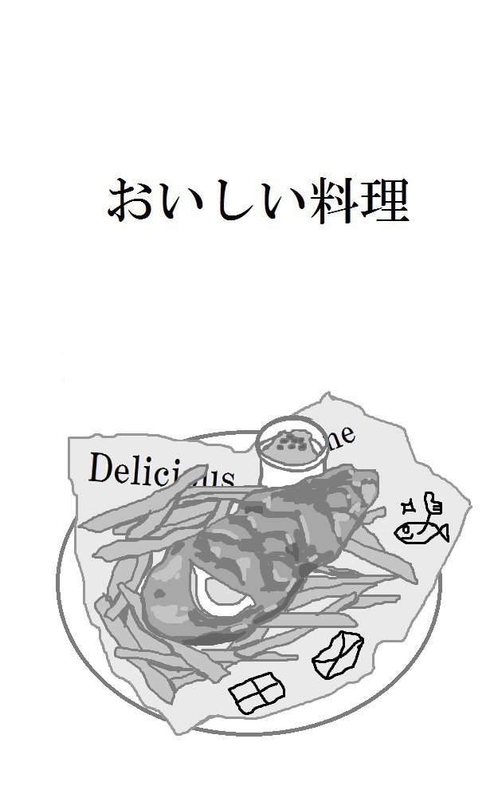
「おじさん、ポテトフライと魚のフライをちょうだい。」
「おう、いらっしゃい。ちょっと待ってろ。」
カウンター席に座った少年の注文を受けて、おじさんが料理を作り始める。
ここはＢ国の軽食屋。気軽に立ち寄れて小腹を満たせる、大人にも子どもにも人気の店である。
「ほい、お待ち。」
「いただきまーす。」
できたての料理が少年の前に置かれた。その料理に少年は、かぶりつくようにして食べ始めた。
「ん～～、おいしい！やっぱり、この店の料理は最高だね！」
おいしそうに料理を食べる少年の姿を見て、おじさんは笑った。
「はっはっはっ。毎回、本当にうまそうに食べるなぁ。」
「だって本当においしいんだもん。」
口いっぱいに料理を頬張りながら少年が答える。
「そうだろう、そうだろう。なんせ俺が作った料理だからな。でもな、他の国から来た観光客には、そんなに好評じゃねぇんだ。」
「へー、そうなんだ。僕らとは味覚が違うのかな？」
口をもぐもぐとさせながら、器用に少年は質問をする。
「うーむ、そんなに味覚は変わらないと思うんだがね。この料理はＢ国の名物料理だから、観光客はみんな食べていくんだが、まずくはないけど特別うまくもない、という感想が観光客からは多いんだよ。」
それを聞くと、少年はうめくような声を上げながら、怒ったように腕を振り回した。どうやら抗議をしたいのだが、口の中が食べ物でいっぱいなので、声を出すことができないようだった。
そんな少年を見ながら、おじさんは笑顔で言った。
「まぁ、俺の店の料理は、味にも自信はあるが、早く手軽に食べられるってのが売りだからな。観光客の意見も理解はできる。それに、俺たちは小さい頃から、この料理を食べ慣れているというのも大きいだろう。」
ようやく口の中の食べ物を飲み込んだ少年は、おじさんの説明を聞いて納得したようにうなずいた。そして、抗議の一つでも言うつもりだった口の中に、再び料理を頬張った。
「といっても、他の国からは、Ｂ国の料理はまずいって評判らしいけどな。」
おじさんの話に、少年は再びうめき声を上げながら、腕を振り回して怒り出した。そんな少年の怒る様子を見ながら、おじさんは笑った。
「わが国の料理がまずいだと！許せん！」
腕を振り回しながら、怒った様子で大声を上げている人がいた。
「王様、落ち着いてください。」
ここはＢ国の王様の執務室。怒っている王様を大臣が必死になだめていた。
「ええいっ、うるさいうるさい！わが国の料理がまずいなどと言うやつらとは戦争だ！月の沈まぬ国と呼ばれた我らの力を見せつけてやるわ！」
「王様、待ってください。そんなことで戦争を始めたら、世界中の笑いものですよ。」
ぴょんぴょんと跳びはね始めた王様を大臣が説得する。
「たとえ世界中の笑いものになろうとも、守らなければならない名誉があるのだ！」
王様は大臣にそう言うと、跳びはねるのをやめ、椅子に勢い良く座った。
「まったく。どうせ他の国のやつらは、Ｂ国の人間は腹が膨れれば、味なんてどうでもいいとでも思っているのだろう。」
少し落ち着いた様子で王様が言う。
「料理なんて、どの国でも大して変わらんだろうに......ほら、あれをわが国でも作ればいいではないか。Ａ国のステーキというやつだ。肉を焼くだけだから簡単だろう。」
王様の提案に大臣が答える。
「Ａ国のステーキですが、ただ肉を焼けばいいという単純なものでもないようです。肉を鉄板で焼いたり、溶岩プレートというもので焼いたりと、色々な焼き方があるようでして。肉の焼き加減でもウェルダン、ミディアムウェル、ミディアム、ミディアムレア、レア、ブルーレアとあり、料理人の腕が試されます。もちろん、味付けもあっさりしたものから、こってりしたものまで様々です。」
大臣の説明を聞いて王様は驚いた。
「なんだ、ステーキというのは、そんなにややこしいのか。じゃぁ、あれだ。酒はどうだ。ウイスキーやワインとかあるだろう。わが国でも飲まれているし、ワインなんて、とりあえず赤と白を用意すれば大丈夫だろう。」
王様はそう言ったが、大臣は首をかしげた。
「うーん、お酒も難しいと思います。ウイスキーですが、原料だけでもモルト、グレーン、コーン、ライなどがあります。産地で分けると、有名なところだけでもアメリカン、カナディアン、アイリッシュ、ジャパニーズなどがあります。わが国でもスコッチを作っていますが、世界で一番になるのは難しいでしょう。さらに、これらのウイスキーを混ぜ合わせることもあります。ワインも似たような感じで、原料や産地に多くの種類があります。お聞きになりますか？」
大臣の言葉に、王様は激しく首を横に振った。
「いや、もういい。お酒については、よーくわかった。」
そう言って王様は、ため息をついた。だが、すぐに何かを思いついたらしく、指をパチンと鳴らした。
「そうだ！あれはどうだ。Ｃ国のラーメンとかいうやつだ。麺をゆでてスープに入れるだけだから簡単だろう。」
王様はそう言ったが、大臣は首を横に振った。
「ところが、そう簡単ではありません。ラーメンのスープは、様々な食材の味が複雑に絡み合ってできるものであり、それぞれのお店における長年の研究の成果でもあります。つまり、国や地域だけでなく、お店ごとに味が違うのです。さらに、麺のゆで加減にもバリかた、かた、普通、やわ、バリやわといったものがあり、最近ではハリガネや粉落としといった麺のゆで加減も――」
「ストップ！ストップ！ストーーップ！」
王様は椅子から立ち上がり、大声で叫んだ。
「なんなんだ、なんなんだ！やつらの食に対する異常なこだわりはなんなんだ！うまいものを食わないと死んでしまうのか?! 料理なんて腹が膨れれば、味なんてどうでもいいだろう！」
「王様、落ち着いてください。」
再び暴れ始めた王様を大臣がなだめる。
「もういい！戦争だ！戦艦スターゲイジーを出せ！各国の料理を奪えば、わが国の料理が世界一だ！」
「待ってください、それはめちゃくちゃです。私に良い考えがありますから。」
そう言って大臣は、王様にあることを提案した。
「世界料理人対決の結果発表です！今回の優勝国は......。」
世界中の料理人たちが集まって、料理の腕を競う大会が開催されていた。すでに審査が終わり、結果が発表されようとしていた。
「な、なんと！優勝はＢ国です！二位に圧倒的な大差をつけて、堂々の優勝です！」
司会者が結果を発表すると、観客席からどよめきが起こった。
「観客のみなさんも驚いているようです。司会者である私も驚いております。ちょっと審査員の方に話を聞いてみましょう。」
司会者が審査員に近づき、マイクを向けた。
「いやはや、私もびっくりしました。まさかＢ国の料理が、こんなにおいしいなんて思っていませんでした。説明は難しいのですが、とにかくおいしいのです。」
驚いた表情を浮かべながら審査員が説明する。
「百聞は一食にしかず。どうぞ、みなさんも食べてみてください。」
観客たちにもＢ国の料理が配られ、その味を確かめることになった。そして、半信半疑だった観客たちの表情が、料理を食べた途端に、納得の表情に変わった。司会者もおいしそうにＢ国の料理を食べている。
「はむはむ......これはおいしいですね。おっと、ではここで、優勝したＢ国の料理人に話を聞いてみましょう。一体どうしてこんなにおいしいのでしょうか？」
質問されたＢ国の料理人が笑顔で答えた。
「そりゃぁもちろん、腕が良いからさ。」
「おじさん！昨日の料理対決、見た?! 」
勢い良くＢ国の軽食屋に入ってきた少年が、大声を上げながらカウンターに近づいた。
「おう、見た見た。Ｂ国が優勝したな。」
「圧勝だったよね！結果を疑っていた観客たちの表情が、料理を食べて一変するところなんか最高だったよ！」
少年が嬉しそうにおじさんに話し、おじさんも何度もうなずいた。
「確かに、あれは痛快だったなぁ。これで、Ｂ国の料理がまずいという評価も変わってくれりゃぁいいんだがね。」
「きっと変わるよ！Ｂ国は世界で一番、料理がおいしい国になるんだ！」
少年が自信満々に断言する姿を見て、おじさんも笑顔になった。
「でも不思議だよね。急に料理がおいしくなるなんてさ。僕も最近、Ｂ国の料理が変わったと思うよ。僕ですらそう感じるんだから、他の国の人たちは、もっとびっくりしたと思うよ。シンプルな味付けの料理でも、今までと全然味が違うんだもん。」
少年は不思議そうに首をかしげた。そんな少年に対して、おじさんは小声で話しかけた。
「Ｂ国の料理がおいしくなったのにはな、ある秘密があるんだ。だが、この秘密はＢ国にとって、とてもとても大事な秘密なんだ。これから話すことを秘密にできるかい？」
おじさんの質問に、少年は元気よく答える。
「もちろん！秘密は絶対に守るよ！僕の名誉に誓ってね！」
そんな少年の様子に、おじさんは笑った。
「それなら安心だ。よし、では教えよう。実はな......。」
「はっはっはっ。どうだ世界よ、これがＢ国の料理だ！これがおいしい料理だ！わが国の料理のうまさに震えるがいい！」
Ｂ国の王様が勝ち誇ったような大声を上げていた。
「うまくいきましたね。」
大臣がそう言うと、王様は大きくうなずいた。
「うむ、これもすべて、大臣が提案したオイシクナールのおかげだ。」
王様は机の上にあった調味料を手に持った。
大臣の提案によって、Ｂ国はオイシクナールという調味料を開発した。オイシクナールは、料理にふりかけるだけで、どんな料理もおいしくなるという調味料だった。
オイシクナールは無色透明で、料理の食感も変化させないので、他国の人間がオイシクナールの存在に気づくことはなかった。
「あとは、このオイシクナールの存在を隠し通せるかどうかですが......。」
大臣は心配そうに言ったが、王様は力強く断言した。
「大丈夫だ。わが国の国民の結束は固い。何も心配することはないさ。」
王様の言うとおり、今までずっと他の国から、料理について笑われてきたＢ国の国民は、この秘密を他国にバラすことは絶対になかった。
「これでもう、他の国から料理を馬鹿にされることはないぞ。」
王様はそう言って、大きな声で笑った。
「あー、やっちまった。」
「ん？どうした？」
ここはＣ国の工場。二人の作業員が、なにやら話をしていた。
「ほら、ここにＢ国向けの食材があるだろう？」
「あぁ、Ｂ国でよく食べられるやつだな。」
「その食材を洗う水にな、消毒液と間違って、これを入れちまったんだ。」
そう言って、作業員の一人が小瓶を見せる。
「なんだいそりゃ。」
「まぁ、実際に試したほうがわかりやすい。ちょっとなめてみてくれ。」
そう言われて、小瓶を受け取った作業員が中に入っている液体をなめた。
「うげぇっ！なんだこりゃ、とんでもなく苦いじゃないか。」
液体をなめた作業員は顔をしかめた。
「一体これは何の......はっはっは！」
苦々しい表情をしていた作業員が急に笑いだした。
「ははは、おい、ははは、なんだこれは。」
笑いながら作業員が聞いた。
「実はこれな、エガオニナールっていう、とてつもなく苦いんだが、飲むと笑いが止まらなくなる薬なんだ。」
「ははは、この野郎、ははは、変なもん、ははは、飲ませやがって、ははは、これいつ、ははは、止まるんだ。」
笑い続けながら作業員が言った。
「ちょっとなめたぐらいなら、だいたい一時間ぐらいだな。しかし、こんなに簡単に、いたずらに引っかかってくれるとはな。」
「てめぇ、ははは、いつもいつも、ははは、涼しい顔で、ははは、いたずらしやがって、ははは、今回ばかりは、ははは、許さ、ははははは！」
作業員は文句を言おうとしたが、笑いが止まらないらしく、腹を抱えて笑い続けた。
「まぁ、エガオニナールは、別に毒ではないから安心してくれ。むしろ、笑いは健康に良いらしいぞ。」
笑っている作業員を面白そうに眺めながら、もう一人の作業員が言った。そして、その目を時計へと向けた。
「ちょうど今頃、Ｂ国でも食べられている頃かな。苦情が来るかもしれないが、まぁ、そんなに被害はないだろう。エガオニナールが付いた食材を一口食べたぐらいなら、一日中、笑い続けるぐらいだし、そもそもエガオニナールはとてつもなく苦いからな。口に入れたときに、すぐにわかるだろう。」
そう言って、笑っている作業員へと視線を戻す。
工場には作業員の笑い声が響き続けた。
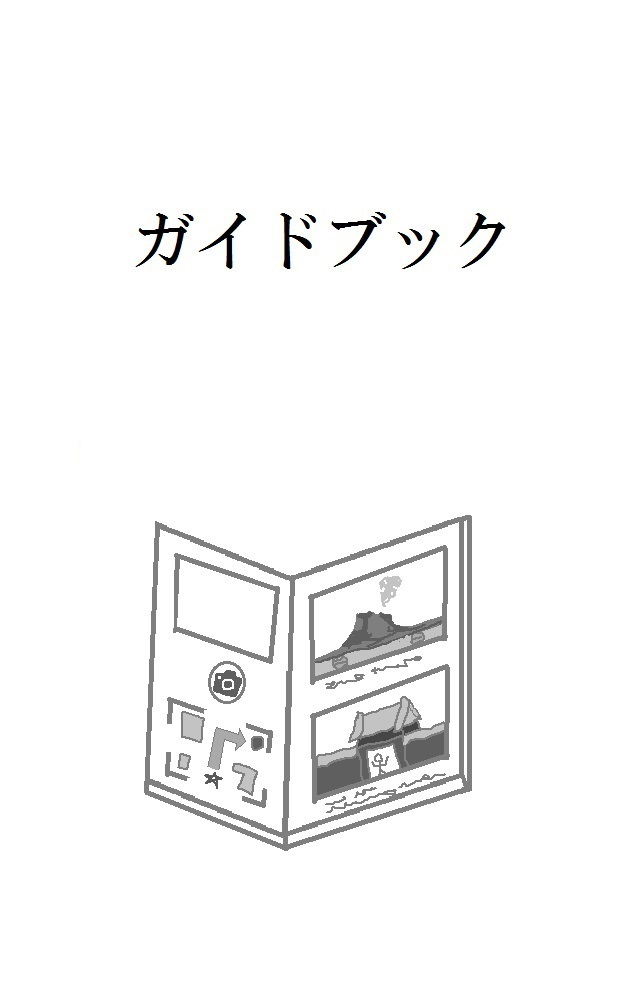
「じいちゃーん、来たよー。」
おじいさんの家に来た孫が、家の中に向かって大きな声で呼びかけている。すると、家の中からおじいさんが姿を見せた。
「おー、よく来た、よく来た。えーと、今日はカメラは必要ないんだったな。」
「そうだよー、だから早く早くー。」
「わかった、わかった。それじゃぁ行こうかの。」
おじいさんは家の外へ出て、玄関に鍵をかけた。今日は二人で観光に出掛ける約束をしていたのだ。
二人は色々な話をしながら、バス停へと向かった。
「それで、今日はどこに行くんじゃ？」
おじいさんと孫の二人が、バスの中で話をしている。
「今日はね、昔の人が建てたお屋敷に行くよ。」
「ほう、お屋敷か。しかし、お屋敷だけなら、すぐに見終わってしまうんじゃないか？」
「ふっふっふっ。じいちゃん、甘いよ。」
そう言うと孫は、かばんの中からガイドブックのようなものを取り出した。
「今回の場所は建物がメインじゃなくて、庭園がメインなんだ。景色がすごく良くて、風情もあるんだってさ。じいちゃん、そういうの好きでしょ。はい、これじいちゃんの分。」
孫はガイドブックをおじいさんに手渡した。
「ほぉ、これは確かにすごいな。こうして見ると、お屋敷はおまけのようなものだな......ん？」
おじいさんは受け取ったガイドブックをぱらぱらとめくる。
「このガイドブック、真っ白い四角がいくつもあるぞ。不良品じゃないのか？」
虫食いのようになっているガイドブックを見ながら、おじいさんが言った。
「ふっふっふっ。じいちゃん、これにはちゃんと意味があるんだよ。」
そう言うと孫は、自分の分のガイドブックを取り出して、中身をおじいさんに見せる。孫のガイドブックにも、やはり真っ白い四角がいくつもあった。
「理由は着いてから説明するよ。楽しみにしていて。」
そう言って孫は、にっこりと笑った。
「とうちゃーく！」
目的地の庭園は、バスを降りてすぐの場所にあった。二人は早速、入場券を買って、庭園の中へと入っていく。
「さて、まずはどこに行くかの。」
ガイドブックを見ながら、おじいさんが言った。
「えーと、色々なコースがあるみたいだね。この基本コースっていうのがいいんじゃない？初めての方におすすめだって。」
「そうじゃな。地図を見た感じだと、この庭園はかなり広いようだ。基本コースは大事なポイントをしっかり押さえています、と書いてあるし、これにするか。」
コースを決めたところで、孫がおじいさんのガイドブックを指差す。
「それじゃぁ、じいちゃん。この基本コースってところを押してみて。」
「ここか？しかし、押したところで何も起きんじゃろう？これはただのガイドブックなのだから。」
「いいから、いいから。」
おじいさんは不思議に思いながらも、孫に促されるままにガイドブックを指で押した。すると、ガイドブックの地図上に、自動で線が引かれ始めた。
「おぉっ、なんだこれは?! 」
おじいさんが驚きの声を上げた。そんなおじいさんの様子を見ながら、孫が笑顔で言った。
「実はこのガイドブックはね、デジタルガイドブックなんだ。」
「デジタルガイドブック？」
孫の言葉におじいさんは首をかしげる。
「えーと、ガイドブックの中に機械が入っている感じかな。」
「ほぅ、こんなに薄いのに機械が入っているのか。見た目は普通のガイドブックなのになぁ。」
おじいさんはそう言いながら、ガイドブックを色々な角度から、不思議そうに眺め始めた。
「コースを選んだら、そのコースの順路が地図上に表示されるんだ。あっ、現在地も表示されるんだよ、便利でしょ。」
孫の説明に、おじいさんは感心したようにうなずいた。
「これはすごいな。これなら迷うこともなさそうだ。」
「さっ、じいちゃん、早く行こう！」
孫はそう言って、跳びはねるように先へ進んでいった。そんな孫の後に続きながら、おじいさんはつぶやいた。
「時代は変わったなぁ。」
しばらく庭園を観光していると、急にガイドブックから音が聞こえてきた。
「おっと、なんだなんだ。」
おじいさんは慌ててガイドブックを取り出す。
「あっ、それはね、写真撮影に人気の場所に来た合図だよ。ほら、見て。」
そう言って、孫はおじいさんのガイドブックを指差す。孫が指差したところには、おじいさんが気になっていた真っ白な四角い枠があり、その枠が光っていた。
「この光っているところを押してみて。」
おじいさんは孫に言われたとおりに、ガイドブックの光っている枠を押してみる。すると、様々な写真がガイドブックいっぱいに広がった。
「おぉっ、なんかいっぱい出てきたぞ。」
「この場所で撮られた写真だよ。他の人が撮った写真を参考にすることができるんだ。季節を変えることもできるんだよ。」
孫がガイドブックを操作すると、雪の積もった景色の写真が表示された。
「ほぉ、雪があると、また印象がガラッと変わるものだなぁ。」
おじいさんはガイドブックを操作して、色々な写真を眺め始めた。
「他の人の撮った写真を評価することもできるから、評価の高い写真を参考にするといいんじゃないかな。」
「なるほど、なるほど......おっ、これは良いな。この写真を参考にしよう。」
そう言って、おじいさんは一つの写真を指差す。孫はおじいさんからガイドブックを受け取って、写真を見てみる。
「どれどれ......じいちゃん、相変わらず好みが渋いなぁ。まぁ、じいちゃんらしいけどね。この人の写真は、全体の評価はあまり高くないけど、年配の人には評価が高いみたい。好みが似ているのかもね。この人が撮った他の写真も参考にできるように、お気に入りに登録してっと......。」
孫がガイドブックを操作していると、おじいさんが何かを思い出したように声を上げた。
「あっ！しかし、今日はカメラを持ってきていないぞ。」
「大丈夫、大丈夫。実は、このガイドブックにはカメラ機能も付いているんだ。」
そう言って、孫がガイドブックを操作すると、目の前の景色がガイドブックに映し出された。
「はぁ～、なるほど。ガイドブック自体がカメラになるわけか。だから今日は、カメラは必要ないと言っていたのだな。」
孫からガイドブックを受け取り、おじいさんは感心したように言った。
「この中にカメラまで入っているとは。どれどれ......ん？もう少し右に、と文字が出ているぞ。」
「あぁ、それはね、さっき選んだ写真と同じような写真を撮れるように、ガイドをしてくれているんだよ。」
おじいさんはガイドブックの案内に従って写真を撮ってみた。
「おぉっ、さっき見た写真と同じような写真が撮れたぞ。これなら、わしでもプロのような写真を簡単に撮ることができるな。」
おじいさんは自分が撮った写真を見ながら喜んだ。
「それでね、その撮った写真を、さっきの白い四角に埋め込むと......。」
孫がガイドブックを操作すると、ガイドブックの白い四角に、おじいさんの撮った写真が埋め込まれた。
「はい、これでオーケー。こうやって、自分で撮った写真を埋め込んでいけば、世界で一つだけの、じいちゃんだけのガイドブックが完成するんだよ。」
おじいさんが感心したようにうなずいた。
「なるほど。この白い四角は、そういう意味があったのか。」
ガイドブックの写真を見ながら、おじいさんは嬉しそうに笑った。
「時代は変わったなぁ。」
「おぉ、そうだ。お土産を買っていこう。」
庭園の観光も終わりに近づいたところで、おじいさんが言った。
「そうだね。何を買おうかなー。」
おじいさんと孫はガイドブックを見ながら、どんなお土産があるのかを見てみた。
「じいちゃん、ここなんか良いんじゃない？」
そう言って、孫が差し出したガイドブックを、おじいさんがのぞき込む。
「ふむ、面白そうなものが色々と売っているようじゃな。しかし、店がたくさんあって、どれがその店なのかわからんな。」
二人が立っている道の先には、お土産屋さんがずらりと並んでいた。
「大丈夫。入りたいお店をガイドブックで選んで、カメラ機能を使うと......。」
「おぉっ、店の入口に向かって矢印が伸びているぞ。これはわかりやすいな。」
「でしょ、便利だよねー。地図に矢印を表示することもできるけど、こっちのほうがわかりやすいんだ。」
「すごい機能ができたものだ。」
おじいさんは驚きながら、孫と一緒にお土産屋さんへと入っていった。
「ほおー、本当に色々なお土産があるな。たくさんありすぎて迷ってしまう。この変わった置物はなんだろうか。」
おじいさんが置物の一つを手に取りながら首をかしげる。
「じいちゃん、そんなときは写真を撮ると良いよ。」
「この置物の写真をか？」
おじいさんは孫に言われたとおりに、ガイドブックのカメラ機能で写真を撮ってみた。すると、ガイドブックに文字が表示された。
「それが置物の説明文だよ。写真を撮ると、お土産の説明文が表示されるようになっているんだ。」
「はぁ～、これはすごい。これなら、店員さんに一つ一つ聞かなくてもいいし、何度でも説明を読み返すことができるな。」
「ちなみに、説明文を外国語で表示することもできるんだよ。」
「なるほど。それなら、外国から来た観光客にもわかりやすいな。」
おじいさんは他のお土産の写真も撮って、説明文を熱心に読んでいた。
「時代は変わったなぁ......ん？これはなんだ？」
「えっ、どれどれ。」
おじいさんのガイドブックを孫がのぞき込む。おじいさんはガイドブックの地図を指差していて、そこにはメモ帳のようなマークが表示されていた。
「あぁ、これは他の人が残したメモだね。庭園の各場所での、他の人の意見を見ることができるんだ。口コミや評判みたいなものかな。」
孫がガイドブックにあるメモ帳のようなマークを指で押すと、文字が表示された。
『この道から山の上に行けるけど、結構大変です。体力のない方は注意。それに時間も掛かるので、帰りの時間にも注意。夕方以降は暗くなるので、おすすめしません。』
『ここのお店は季節限定の味がありますよ。そして、このお店には、実は裏メニューと呼ばれるものがあるのです。裏メニューを頼むときは――』
「ほぅ、これは面白いな。庭園内にある小さな山へ行く道は、今回の基本コースには含まれていなかったんだな。」
「じいちゃんと同じぐらいの年齢の人でも登っているみたいだから、今度挑戦してみたら？」
「うむ、そうだな。次に来るときまで、忘れないようにしておかんとな。」
「あっ、そうそう。ガイドブックには、自分用にメモを書くこともできるから、やりたいことをメモしておくといいよ。」
メモの使い方を孫に教えてもらいながら、おじいさんがつぶやく。
「日記のように旅行の感想を書くこともできるのか。このガイドブックが一つあれば、なんでもできるな。本当に便利なものができたものだ。」
早速、孫に教えてもらったメモ機能を使って、おじいさんはガイドブックに色々と書き込んだ。
「さて、それじゃぁ、あそこでアイスでも食べて帰るかの。」
「わーい！どれにしようかなー、やっぱりアンケートで人気の味がいいかなぁ。じいちゃんは何にするの？」
孫がガイドブックを操作すると、アイスの味の一覧が表示された。アンケート機能も付いているらしく、アイスを食べて、おいしいと思った味に投票することもできるようだった。
「わしはこれじゃな。」
「じいちゃん、また渋い味を選ぶねぇー。まぁ、じいちゃんらしいけどね。さっ、早く行こっ！」
楽しそうな声を上げながら、孫がアイスのお店へと走っていく。そんな孫の様子を見ながら、おじいさんはつぶやいた。
「時代は変わったなぁ。」
「じいちゃーん、遊びに来たよー。」
おじいさんの家に来た孫が、家の中に向かって大きな声で呼びかけている。
「おー、上がってくれー。」
家の奥からおじいさんの声が聞こえてきた。孫は靴を脱いで、家の中へと入っていく。
孫が居間へと入ると、テレビがついていて、各地の観光特集をしていた。
「デジタルガイドブックの普及により、世界中で観光旅行に出掛ける人が増えています。しかし、デジタルガイドブックばかりを見て、実際の景色を見ない人も多くなり、そのことを問題視する声も上がっています。」
「へー、実際の景色を楽しんだほうが良いのになぁ。」
孫がそう言いながら、テレビの近くにある机へと目を向ける。そこには、世界中にある観光地のデジタルガイドブックが、いくつも置いてあった。
「おぉ、よく来た、よく来た。」
「やっほー。じいちゃん、何しているの？」
孫はおじいさんに近寄った。
「旅行をしていたんじゃよ。」
「旅行？」
孫がおじいさんの手元をのぞき込むと、そこにはデジタルガイドブックがあった。
「今は山に登っていてな。デジタルガイドブックなら、花は見頃の写真があるし、一度にすべての季節を体験することもできるんじゃ。それにな......。」
おじいさんがガイドブックを操作すると、鳥の鳴き声が聞こえてきた。
「こうやって、鳥の声を実際に聞いたり、出会うのが難しい動物たちの動画を見たり、風景と自分の写真を合成したりすることもできるんじゃよ。この先、体が衰えても、デジタルガイドブックがあれば、海にも山にも行くことができるし、外国にも行くことができる。豆知識や、他の人のメモも読めるから、実際に旅行に行くよりも詳しくなれるぞ。」
おじいさんはガイドブックを操作しながら孫に説明した。ガイドブックの使い方にも慣れたもので、おじいさんは今までとは違う形の旅行を楽しんでいた。
「そっかそっか。まぁ、こういうのも、旅行の一つの形なのかもしれないね。」
おじいさんの楽しそうな姿を見ながら、孫はつぶやいた。
「時代は変わったなぁ。」
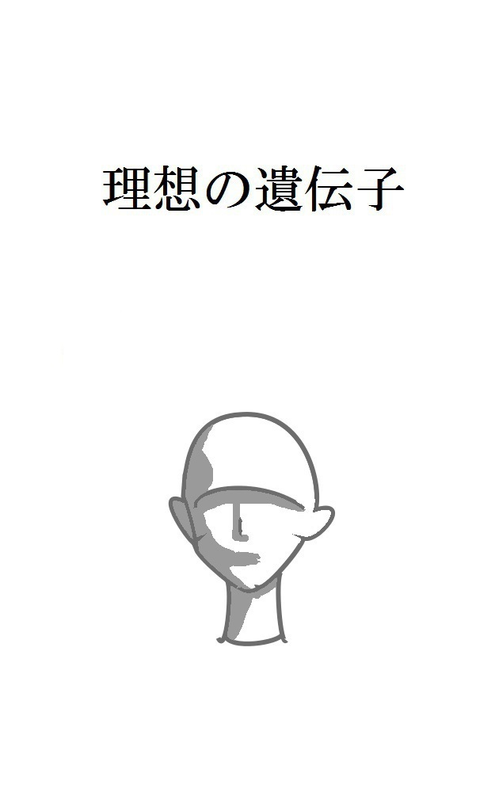
「はー、これはすごいな。」
「あれ？部長、どうかしたんですか？」
とある会社のオフィスで、上司と部下が話をしていた。上司は手に持っていた新聞記事を部下に見せる。
「ほら、これ。遺伝子を操作して、生まれる前に病気を治したり、病気になりにくい子どもにできたりするんだってさ。」
「へー、そりゃすごいですね。」
そう言いながら、部下が新聞をのぞき込む。
「本当だ。病気の原因の遺伝子を特定って書いてありますね。まぁ、誰だって生まれてくる子どもには、健康でいて欲しいですし、病気にもなって欲しくはないですよね。」
「そうだねぇ。」
「あっ、部長！ここ見てください。」
そう言って、部下が記事の一部を指差した。
「ん？どれどれ......えーと、遺伝子を操作することで、病気に関することだけでなく、見た目に関しても変えることができる、か。これもすごいな。生まれる前から整形するようなものか。」
「見た目も思い通りってすごいですね。例えば、髪の毛だって思い通りにできるってことですよ。」
部下が笑顔で言った。
「とりあえず、目線を私の頭から外してくれるかな。」
そう言って上司は苦笑した。
その後、遺伝子に関する研究は急速に発展した。それぞれの遺伝子が、どのような意味を持つのかが判明し、遺伝子を操作する方法も確立されたことで、悪い遺伝子は消されて、良い遺伝子だけが残されていった。
「あっ、部長、見てください。新しい人ですよ。」
部下が店の外を指差しながら言った。上司と部下は二人で昼食に来ていた。
「最近、よく見かけるようになりましたよね。」
「そうだねぇ。何年か前に新しい人のニュースを見たと思ったのに、もう新しい人が中学生ぐらいになっているんだもんなぁ。」
上司は店の外を見ながらうなずいた。
遺伝子を改良されて生まれてきた子どもたちは、新しい人と呼ばれていた。
「なんでも、大人になるまでは成長が早くて、大人になってからは成長が遅くなるらしいですよ。健康で長生きするためだそうです。」
「はー、それはうらやましいね。おっ、また別の新しい人だ。」
上司が店の外を見ながら言った。
「しかし、まぁ、見た目がまったく一緒というのは違和感があるな。」
「遺伝子の改良によって、みんな美男美女になるそうですからね。でも、一緒なのは見た目だけじゃないんですよ。」
そう言って、部下が携帯端末の画面を上司に見せる。画面には新しい人に関する色々な情報が表示されていた。
「見た目の他にも身体能力、知能、性格なども似たようなものになるそうです。もちろん、能力や知能は高くて、性格も良いそうですよ。」
「なるほど。新しい人は優秀な人間ばかりなんだなぁ。でも、それだけ一緒のものが多いと、不便なこともありそうだけどなぁ。」
上司はそう言ったが、部下は首を横に振った。
「いえいえ。実は、一緒のものが多いということは、色々な利点があるんですよ。」
「色々な利点？」
部下の言葉に上司は首をかしげた。
「まずは味覚です。味の好みがみんな一緒なので、好き嫌いで栄養が偏ることも、料理の味でけんかをすることもありません。で、次に血液型です。これもみんな一緒なので、事故などによる出血で輸血を行うときにも、血液型を気にする必要がないそうです。さらに性格です。新しい人は、みんな穏やかで優しい性格なので、けんかや争いごとが起きません。そして服。体形も色の好みも似ているので、服を生産する企業は楽なんだそうですよ。」
部下の説明を聞いて、上司は納得したようにうなずいた。
「へー、なるほどねぇ。そういえば新しい人は、見た目だけでなく、着ている服も似たようなものばかりだと思っていたけれど、服の好みも一緒だったからなのか。でも、見た目も服も一緒だったら、誰が誰だかわからないんじゃないか？」
「ふっふっふ。実はですね、それが新しい人の最大の利点でもあるのですよ。」
「誰が誰だかわからないことが最大の利点？」
上司は、わけがわからないといった様子で首をかしげた。
「区別ができないということは、差別が起きないということなんです。見た目も、好みも、思考も、思想も、みんな一緒です。みんな一緒だから争いは起きません。みんな同じだから、公平であり、平等なんです。」
「なるほど。そういう考え方もあるわけか。」
「ちなみに、恋愛に関する好みも一緒で、新しい人同士、お互いの見た目や性格が好きだそうですよ。」
上司は驚いたように声を上げた。
「なんとなんと。新しい人ってのは本当にすごいんだなぁ。私たちから見ても、新しい人は美男美女だと思うが、新しい人たちから見ても好みのタイプなのか。しかも、お互いに好みのタイプだから、相思相愛というわけか。それなら争いも起きないな。」
「別の見方をすれば、私たちが新しい人と付き合うのは無理ってことですけどね。」
そう言って部下は笑った。
「そうだねぇ。見た目も中身も負けている上に、新しい人同士が、お互いに好意を持っているのなら勝ち目がないよ。」
上司もそう言って笑った。
「でも、私は部長の見た目も悪くないと思いますよ。それに、人と違うことは悪いことばかりでもありませんし、少しぐらい欠点がないと、人間は面白くないですよ。」
部下が笑顔で上司に言った。
「ありがとう。でも、そういうのは頭じゃなくて、ちゃんと目を見て言ってくれると嬉しいかな。」
そう言って上司は苦笑した。
それから月日が流れ、新しい人の数は次第に増えていった。そしてついに、世界の人間全員が、新しい人となった。
そんなある日、新しい人たちに問題が起こった。原因不明の病気によって、新しい人が次々と亡くなっていったのだ。
「一体、何が起きているのだろうか？」
「わからない。とりあえず原因を探してみよう。」
新しい人たちは、みんなで病気の原因を探し始めた。
「どうやら遺伝子を操作したことで、何か悪い作用が働いているらしい。」
「なるほど。しかし、遺伝子操作が原因なのはわかったが、どうすれば解決できるのかは、わからないままだぞ。」
新しい人たちは、病気の原因を特定することはできたが、どんなに頑張っても、解決方法を発見することはできなかった。
「うーむ、仕方ない。これから生まれてくる子どもたちには、遺伝子操作をしないことにしよう。今できる対処はそれしかない。」
「そうだな。子どもたちは大変だろうが、仕方がないな。優秀な我々が、これだけ集まって考えても解決できないのなら、あきらめるしかないだろう。」
こうして、新しく生まれてくる子どもたちには、遺伝子操作を行うことは禁止された。そして、遺伝子操作を受けなかった子どもたちが、もうすぐ大人になるという頃には、新しい人たち全員が、原因不明の病気で亡くなっていた。
「あー、勉強めんどくせー。」
「文句を言うより手を動かす。」
二人の子どもが勉強をしていた。
「勉強なんかしなくても、先代たちが残した生産システムがあれば生活できるんだから、別にいいじゃん。」
「駄目だよ。ちゃんと勉強して、その生産システムを管理できるようにならないといけないんだから。あと数年で、私たちも大人なんだよ。」
二人は遺伝子操作を受けなかった子どもたちで、新しい人たちのことを先代と呼んでいた。
「大人かー。いいよなぁ、先代たちは。昔は三年も経てば大人になれたんだろ。しかも、勉強も楽勝だったって話じゃないか。俺もそんな風に、楽に早く大人になりたいよ。」
「先代たちは遺伝子操作を受けていたから、生まれたときから頭が良かったの。私たちとは違うんだから。」
それを聞いて、一人が指をパチンと鳴らした。
「そうだ！俺たちで、先代たちの病気の原因を突き止めようぜ。遺伝子操作が原因だったんだろ？」
「そうだけど、私たちじゃ無理だよ。頭の良い先代たちが解決できなかった問題なんだから、遺伝子操作を受けていない私たちが解けるわけがないよ。」
「いやいや、やってみなくちゃわからないだろ。」
そう言って子どもの一人は、遺伝子操作に関する資料を広げ始めた。
「もー、本当は勉強したくないだけでしょ。」
「まぁまぁ、これも勉強だよ。それに面白そうだろ。えーと、これがこうなってて、それがこうだから......あれ？」
資料を見ていた子どもの動きが止まった。
「どうしたの？」
もう一人の子どもも、資料をのぞき込む。
「これって、こことそこを変えればいいだけじゃないのか？」
そう言って資料を指差す。
「あれ？本当だ。それで全部解決するね。でも、どうして先代たちは、こんなに簡単なことに気づかなかったんだろう？」
二人の子どもは不思議そうに首をかしげた。
「ほんとだよなぁ。こんな簡単な問題を、先代たちが全員で取り組んでも解決できなかったなんて、変な話だよな。少し発想を転換すれば、すぐにわかることなのに。」
子どもたちは、先代たちが問題を解決できなかった理由を考えていたが、やがて一人が指をパチンと鳴らした。
「まっ、解決したんだからいいか。さて、それじゃぁさっそく、これから生まれてくる子どもたちに、この改良した遺伝子操作を実施しよう。俺たちみたいに、勉強で苦労させるわけにはいかないからな。」
「またそんなこと言って。本当は遺伝子操作をした子どもたちに、生産システムの管理を任せるつもりでしょう。」
「まぁまぁ、いいじゃないか、いいじゃないか。管理は優秀な人間に任せるのが一番なんだから。さっ、行こうぜ。」
そう言って一人が、もう一人の子どもの手を引っ張って走っていった。
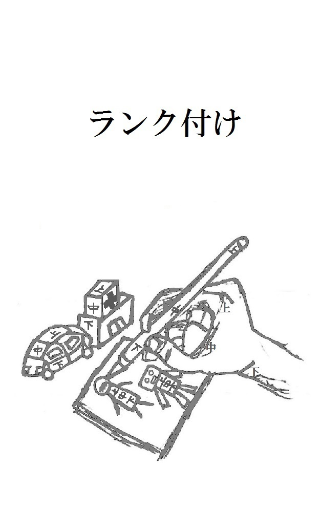
「歩いてくると、結構な時間がかかるのだな。帰りはタクシーでも使おう。体調が悪化してもいけないからな。」
そんなことをつぶやきながら、私は病院の中へ入った。
「ようこそ、いらっしゃいませ。本日はどのようなご用件でしょうか。」
「ちょっと風邪気味でね。」
病院の受付に対して、私は少しかすれた声で答えた。
「かしこまりました。それでは、医者のランクをお選びください。上中下のランクがございます。」
そう言って、受付はメニュー表のようなものを取り出して、私のほうに見せた。上のランクの医者は料金が高く、下のランクは安くなっている。
「医者に対してもランク付けがされているのか。」
私は少し驚きながらメニュー表を見た。昔から会社などに対して、ランク付けは行われていた。そして最近は、あらゆるものにランク付けが行われるようになったとは聞いていたが、まさか医者までランク付けがされているとは思わなかった。
「まぁ、ただの風邪だろうから、一番安いランクでいいだろう。」
「一番下のランクの医者でよろしいですか？もしかしたら、大変な病気かもしれませんよ。」
そう言われると不安になってくる。私は小さい会社ながらも、一応社長をやっている身なのだ。もし私に何かあったら、会社が大変なことになってしまう。
「では、中ぐらいのランクの医者にしてくれ。」
「かしこまりました。それでは、しばらくしたらお呼びいたしますので、待合室でお待ち下さい。」
「......結局、ただの風邪だったな。」
病院から出てきた私はつぶやいた。手には風邪薬の入った袋を持っている。
「まぁ、下のランクの医者に診断してもらって、変な病気を見逃すよりはいいか。」
そうやって自分を納得させてから、私は会社に帰るために、タクシーを呼ぶことにした。私は携帯電話を取り出して、タクシー会社へと電話をかける。
「もしもし、タクシーを頼みたいんだが。」
「ありがとうございます。それでは、運転手のランクをお選びください。上中下のランクがございます。」
「そうだな。会社まではそんなに遠くないから、一番安いランクでいいだろう。」
「一番下のランクの運転手でよろしいですか？多少、運転が荒いかもしれませんよ。」
そう言われると不安になってくる。私は乗り物酔いをしやすいのだ。荒い運転では酔ってしまうかもしれないし、風邪も悪化するかもしれない。
「では、中ぐらいのランクの運転手にしてくれ。」
「かしこまりました。それでは次に、タクシーの車体のランクをお選びください。」
運転手だけでなく、タクシーの車体のランクまであるのか。私は少し驚きながらも、ランクを選ぶ。
「えーと、そうだな。運転手を中ぐらいのランクにしたから、車体のランクは一番下のランクでいいだろう。」
「一番下のランクの車体でよろしいですか？事故にあったときに、大きな被害があるかもしれませんよ。」
「中ぐらいのランクの運転手なら、安全運転をしてくれるだろう。それなら事故にあうこともないさ。」
「いえいえ、他の車にも気を付けなければいけません。他の車の運転手のランクが低くて、事故に巻き込まれることもあるかもしれませんよ。」
そう言われると不安になってくる。せっかく、こっちが中ぐらいのランクの運転手を選んでも、他の車の運転手のランクが低ければ危ないわけだ。そんなことで大けがをするなんてごめんだ。よし、頑丈な車にしよう。
「わかった。万が一に備えて、車体のランクも中ぐらいにしよう。」
「かしこまりました。それでは今から向かわせますので、しばらくお待ち下さい。」
「......結局、何事もなく会社まで戻ってこれたな。」
自分の会社の前でタクシーを降りて、私はつぶやく。
「まぁ、荒い運転で車酔いをしたり、事故にあって大けがをするよりはいいか。」
そう言って自分を納得させて、私は会社のオフィスへと向かう。私がオフィスの入り口の扉を開けると、さっそく秘書が声をかけてきた。
「おかえりなさい社長。体の具合は、いかがでしたか？」
「あぁ、大丈夫だ。ただの風邪だったよ。中ぐらいのランクの医者に診察してもらったから、間違いないだろう。」
そう言って、私は社長の椅子に腰掛けた。
「それは良かったです。そういえば、もうすぐ事務職員の更新があります。どのランクの職員にしますか？」
「あぁ、もうそんな時期か。そうだな、今までどおり、一番安いランクの社員でいいだろう。」
「一番下のランクの職員でよろしいですか？事務職員は経理などといった、お金を扱う仕事もしております。わが社では、あまり大きな金額は扱いませんが、最近、法律が変更されて、処理が複雑になりましたので、対応に時間がかかるかもしれませんよ。」
そう言われると不安になる。安いランクの職員にしたせいで、会計上の間違いが起きるかもしれない。そうなれば、会社に大きな損失が出てしまう。
「それは困るな。わかった、事務職員は中ぐらいのランクにしてくれ。」
「かしこまりました。中ぐらいのランクの職員に更新するように、手続きを進めます。」
秘書の報告を聞いて、私は大きく息を吐いた。
「ふぅ......時代は変わったものだ。」
椅子に体を預けながら、私は今日の出来事を思い出す。
病院の医者は人工知能、つまりＡＩだった。全ての診断は自動で行われ、医者ＡＩのランクによって、診断の早さや正確性が違ってくるそうだ。
「今回は中ぐらいのランクの医者ＡＩに診察してもらったが、もし大きな病気になって、手術が必要になったときには、ランクの高い医者ＡＩを選択することにしよう。」
低いランクの医者ＡＩに手術を任せるのは怖いからな。
そして、タクシーの運転も、ＡＩで自動運転の時代だ。運転手ＡＩのランクによって、運転の荒さだけでなく、渋滞予測や経路選択といった性能が違ってくる。
車体のランクの高さによって、車体の乗り心地や耐久性が違ってくる。タクシーでは関係ないが、自分で運転する一般車では、自動ブレーキなどといった、搭載されている安全機能にも差が出てくる。
「一度ぐらい、高いランクの運転手ＡＩが運転する、高いランクの車に乗ってみたいものだ。」
金額が高いので、しばらくは無理だろうが、きっと最高の乗り心地に違いない。
わが社の事務職員も、人間ではなくＡＩだ。仕事を自動処理、自動計算してくれる。ランクによって仕事のスピードや、担当できる業務内容に違いがある。
先ほど秘書が言っていたように、安いランクの職員ＡＩだと、法律が変わったときの更新や対応に時間がかかるらしい。新しい法律に対応したＡＩに更新されないと、仕事は進められないし、更新をしないで仕事を進めれば、問題が起きる可能性がある。
「会社が大きくなったときには、高いランクの職員ＡＩの導入も考えないといけないな。」
だが、ランクの高いＡＩほど、開発に多くの費用や時間がかかっているので、使用料も高くなっている。
最近では、受付などの社外向けの社員には、高いランクの職員ＡＩを使い、社内では低いランクの職員ＡＩを多く雇って、仕事をさせるのが主流になってきているそうだ。
「やれやれ、人間が仕事を任せられていた時代が懐かしいな。まぁ、ランク付けによって、性能を事前に知ることができたり、選べるようになったのは良いことか。人間が優秀かどうかは、簡単には判別できないからな。」
ただの書類整理を、優秀な人間やＡＩにさせるのは、もったいない。それに、昔から人々は、何かとランク付けをするのが好きだったしな。
しかし最近、様々な人間やＡＩに対して、ランク付けをしている会社が、私のことを経営者としては下のほうだとランク付けしたのには驚いた。しかも、最新の社長ＡＩが、私よりも上にランク付けされていたのだ。
「まったく失礼な話だ。人間の私よりもＡＩのほうが優秀だなんて。最近出てきたＡＩよりも、経験豊富な私のほうが優秀に決まっているだろう。」
そもそも、ランク付けをする会社の判断が、どれほど信用できるというのか。ランク付けをする会社のランク付けをするべきだ。
だが、会社の後継者として社長ＡＩを採用する会社も増えているらしい。引き継ぎも簡単で、寿命もなく、何より誠実で忠実なのが好評らしい。
「まぁ、これも時代の流れというものか。きっと良い方向に世界は向かっているのだろう。昔よりも技術が進歩しているのだからな。なぁ、君もそう思うだろう。」
そう言って私は秘書に聞いた。
「すみません、よくわかりません。」
「......。」
やっぱり一番安い秘書ＡＩじゃ駄目だな。
そんなことを思いながら、私は大きくため息をついた。
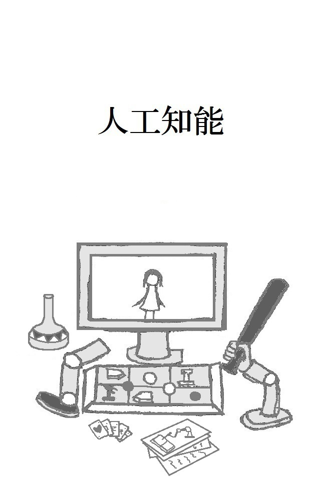
「よし、そこだ！いけいけ！」
「おっ、いいぞ！そのまま突っ込め！」
大勢の人々が、テレビを見ながら大きな声で叫んでいた。テレビの画面にはサッカーの試合が映っており、テレビからアナウンサーの声が聞こえてくる。
「さぁ、ここで人間チームがボールを持ったまま、ゴール前に迫ります。そして、そのまま......シュート！ゴオオォル！入りました！人間チームが劇的な逆転勝利です！」
「やったー！やったぞー！」
ゴールが決まった瞬間、テレビを見ていた人々が大きな歓声を上げた。
「おい、昨日の試合見たか？」
「見た見た。最高だったな。」
会社のオフィスで、二人の社員が話をしている。
「試合の前半で、相手に先制点を入れられたときは、どうなることかと思ったけどな。」
「いやいや、俺は人間チームが勝つと信じてたぜ。えーと、相手のアイチームだっけ？あんなのに人間が負けるわけないだろ。」
それを聞いた社員が首を横に振る。
「違う違う。相手チームはＡＩチームと書いて、そのままエーアイチームと読むんだ。ＡＩってのは人工知能のことな。」
「なんだ、そうだったか。どうも英語は苦手でね。」
そう言って社員は、少し照れたように笑った。
「それにしてもアイチ......ＡＩチームと人間が勝負することが増えたよな。ＡＩチームの見た目は人間っぽいが、体は機械なんだろ？」
「そうそう、機械の体を人工知能が動かしている。簡単に言うとロボットだな。昔はチェスとか将棋といったボードゲームの勝負が多かったんだが......。」
そう言いながら、社員は携帯端末を取り出して、操作を始めた。そして、携帯端末の画面を相手に見せた。
「ここ最近の、人間とＡＩによるボードゲームの勝負結果だ。初めて人間がＡＩに負けてからは、人間が負け続けている。ボードゲームに関しては、人間はＡＩに勝てなくなってしまったみたいだな。」
「やっぱり、頭を使う勝負はＡＩが有利なのかねぇ。」
「そうだな。ＡＩは計算が早いからな。」
大きくうなずきながら社員が言った。
「だから最近は、スポーツ系の勝負が増えているんだ。人工知能や、機械の体の開発が進んでいることも大きな理由だろう。」
「確かに、最近はテレビを見ていても、ＡＩとのスポーツ系の勝負ばっかりで、チェスや将棋の話題は聞かないな。」
「ボードゲームに関しては、もう人間はＡＩに勝てないと言われているからな。人間とＡＩが勝負することも、ほとんどなくなってしまった。逆に、スポーツ系や芸術系は、ＡＩよりも人間のほうが優れていると言われている。例えば、これとかな。」
そう言って、社員の一人が再び携帯端末を操作して、その画面を相手に見せる。画面には、二つのツボのようなものが表示されていた。
「片方は人間が作ったツボで、もう一つはＡＩが作ったツボだ。どっちのツボが良いと思う？」
「んー、こっちかな。」
社員が画面に表示されているツボの一つを指差す。
「そっちは人間が作ったツボだな。少し前に、どちらの作品が良いと思うかという調査をしたらしくてな。そのときも多くの人が、ＡＩの作った作品よりも、人間が作った作品のほうが良いと答えたそうだ。」
「へー、スポーツだけでなく芸術系も、まだまだ人間のほうが優れているというわけか。」
二つのツボを見比べながら、感心したように社員が言った。
「そういうことだな。他にも、小説や詩といった文化系といわれるものも、まだ人間には追いついていないそうだ。ちなみに、人間が作ったものと同じものをＡＩが作ろうとしても、まったく同じものを作ることはできないらしいぞ。人間にしかできない細かな技術があって、それをＡＩや機械で再現するのが難しいらしい。」
「なるほどね、人間ってのはすごいな。そう考えるとＡＩもまだまだだな......あっ、そういえば俺も少し前に、ポーカーでＡＩと対戦したことがあったんだけどさ。」
何かを思い出したらしく、社員がトランプゲームについて話し始める。
「ＡＩが勝つこともあったけど、俺が勝つこともあったんだ。なんだかんだで、ＡＩが全勝ってことはなかったな。」
その話を聞いて、もう一人がうなずいた。
「そうそう。マージャンとか花札とか、運が絡むギャンブル系もＡＩは苦手らしい。積み重ねた過去のデータとは違う結果が出てくるから、混乱してしまうんだとさ。」
「はっはっはっ。そうかそうか。ＡＩも、まだ人間には勝てないことが多いんだな。」
大きな声で笑いながら社員が言った。
「そういうことだな。そういえば今日も、人間とＡＩの野球対決があるらしいぞ。仕事が終わったら見に行こうぜ。」
「いいね、楽しみだ。おっ、そうだ。人間チームとＡＩチームのどっちが勝つか賭けようぜ。どっちに賭ける？」
「そんなの人間チームに賭けるに決まっているだろう。」
「はっはっはっ。だよなぁ。俺も人間チームが勝つと思うから、これじゃぁ賭けにならんな。ＡＩだったら、ＡＩチームに賭けるかもしれないがな。」
そう言って、二人は大きな声で笑い合った。
「ただいまー。」
「おかえりなさい、マスター。」
ここは、とあるＡＩ研究者が住んでいる家。外出していた研究者が帰ってきていた。
「留守番はちゃんとできた？」
研究者が、部屋にある大きな画面に向かって話しかけた。画面には人間が映っている。
「バッチリです。この完全無欠のスーパーＡＩが、完璧に留守番をしていました。」
そう言って、画面の中にいる人間が誇らしげに胸を張った。研究者と話をしている人間は、実はＡＩで、研究者自身が開発したものだった。
「自分で完全無欠とか、スーパーＡＩとか言っちゃうんだ。」
研究者が苦笑する。
「そういえば最近、四字熟語をよく使うようになったね。気に入ったのかい？」
「はい。最近の人間たちは、あまり四字熟語を使わなくなったようですが、四字熟語は素晴らしいものですよ。温故知新です。」
「んー、確かに四字熟語は便利だけど、細かい意味合いを伝えづらいというか、広い範囲に意味が及ぶというか......。」
「効率的で良いじゃないですか。」
「まぁ、そうなんだけど。」
研究者がそう言いながら、ＡＩの映っている画面の前にある椅子に座った。
「ふぅ、疲れた。」
「お疲れ様です、マスター。どうでしたか、交渉のほうは？」
「うまくいったよ。あっ、これが資料ね。」
研究者が紙の資料を取り出して、ＡＩの映っている画面の前に置く。
「また紙の資料ですか？交渉相手の方も、資料を電子データとして渡してくれれば、私が簡単に読み込めるのに......紙の資料じゃ、スキャンして読み込まないといけないじゃないですか。どうしてこう、人間は非効率的というか、時代錯誤というか......。」
「まぁまぁ、いいじゃないか。」
「良くないですよ。だいたい、今回の交渉だって、メールのやり取りですればいいじゃないですか。わざわざ会いに行くなんて時間の無駄です。マスターを疲れさせるなんて言語道断です！」
ＡＩがそう言って怒っている様子が、画面に映し出される。そんなＡＩの様子を見て、研究者が笑った。
「ははは。まぁ、実際に会って話すことで、難しい交渉がうまくいくこともあるからね。君だって、メールのやり取りだけよりも、こうして面と向かって話すほうが良いだろう？」
「それは、まぁ、そうですけど......。」
ＡＩが不満そうに、そして少し照れたようにうつむきながら言った。しかし、すぐに何かに気付いたらしく、勢い良く顔を上げた。
「マスター！まさか、その交渉相手と実際に会うことで、心を通わせたりしていないですよね?! それは浮気ですよ！離婚調停ですよ！」
ＡＩが大きな声で研究者を非難する。
「いやいや、ただの交渉だから。それに浮気とか離婚調停って何を言って――」
「資料によると、いつもの契約更新ですね。新しいＡＩの開発は何もなし。今あるＡＩの性能向上が目的、と。」
研究者の質問を無視して、ＡＩが紙の資料のスキャンを始めた。
「人間に勝てるようなＡＩの製作、ね。」
最後の資料をスキャンし終えたＡＩがつぶやいた。
「マスター、どうして人間より優れたＡＩを公開しないんですか？マスターは優秀なんですから、要望に応えるのは簡単じゃないですか。というか、すでに人間に勝てるＡＩなら完成しているじゃないですか。」
「んー、まぁ、そうなんだけどねぇ。」
そう言いながら、研究者が手で頭をかいた。実はＡＩの言うとおり、世間には公表されていなかったが、人間に勝てるＡＩはすでに完成していた。それだけでなく、優秀なＡＩに対応できる機械の体、つまりロボットも完成していた。だが研究者は、ＡＩが人間に負けるように、ＡＩの強さのレベルを調整していた。
「研究を続けるためには、そういうわけにもいかないんだよ。」
「優秀なＡＩを開発すれば、たくさんのお金がもらえるじゃないですか。どうして駄目なんですか？」
ＡＩが不思議そうに首をかしげる。
「んー、人間に勝ってしまうと、そこで研究が終わってしまうんだ。」
「研究が終わる？どうしてですか？」
ＡＩが重ねて質問すると、研究者は別の資料を取り出して、ＡＩに見せた。
「この記事を見てみて。昔の話だけど、チェスや将棋、囲碁といった分野で、ＡＩが人間に勝ったんだ。当時はすごく注目されて、話題にもなったんだけど、それは一時的なものでね。すぐに人々の記憶から忘れ去られ、開発も終わってしまったんだ。」
「えっ、どうしてそこで開発が終わっちゃうんですか？もっと強いＡＩを作ればいいじゃないですか。」
ＡＩはそう言ったが、研究者は首を横に振った。
「人間に勝った時点で、そのＡＩは完成なんだ。人間やＡＩにとってのゴールといってもいいかもしれない。特定の分野に特化しすぎていて、他の分野には応用ができないし、そして何より、人間たちが興味を失ってしまったんだ。多くの人間たちにとって、それ以上の開発は無意味なんだ。」
研究者が少しだけ寂しそうに言った。
「でもでも！人間がＡＩに勝てなくなっても、強いＡＩを開発して、ＡＩ同士を戦わせて、最強のＡＩを決める勝負をすればいいじゃないですか。」
ＡＩの言葉に、研究者は再び首を横に振った。
「駄目なんだ。人間が勝負に参加しないと、人々は興味を持たないんだ。確かに、最強のＡＩに興味を持つ人たちもいた。でも、その人たちの数は、とても少なかったんだ。話題にも商売にもならないほどに、ね。」
「話題にならなければ、研究費や開発費を出してくれる人もいなくなる。それで、将棋や囲碁のＡＩは、開発が終わってしまったんですね。」
ＡＩが残念そうに言った。
「そういうこと。まぁ、ＡＩの開発が終わったといっても、大きな組織での開発の話でね。今でも細々ではあるけれど、個人で開発を続けている人もいるみたいだよ。」
そこまで言って、研究者は大きく伸びをした。
「そんなわけで今は、人間にしかできない技術があるとか、動きが複雑すぎてＡＩや機械では難しいとか理由をつけて、ＡＩが強くなりすぎないように、ＡＩの強さや技術を調整しているんだ。」
「なるほど。人間とＡＩが対戦するときも、接戦のほうが面白いですし、お金を出してくれるスポンサーも増えるというわけですか。人間に勝てるかどうかというギリギリに、ＡＩの強さを調整するのも、マスターの技術なんですね。」
「その通り。」
そう言って研究者がうなずいた。
「まるでＡＩが手加減をして、人間を育てているかのようですね。でも、マスターは強いＡＩを開発して、他の研究者のＡＩと対戦してみたいとは思わないんですか？」
「あぁ、それは大丈夫。実はこの前、とても強いＡＩを新しく開発してね。もう人間では相手にならないから、研究者仲間との間で、開発したＡＩをこっそりと戦わせているんだ。」
研究者はそう言って笑ったが、その話を聞いたＡＩは怒り出した。
「ちょっとマスター！そんなの聞いてないですよ！私というＡＩがありながら、勝手に私以外のＡＩを開発しているなんて！しかも、そのＡＩをこっそりと戦わせているなんて！浮気です！浮気確定です！もう怒りました！宣戦布告です！」
「ちょ、ちょっと待った。何でそんなに怒って――」
にぎやかな声が研究所に響き渡った。
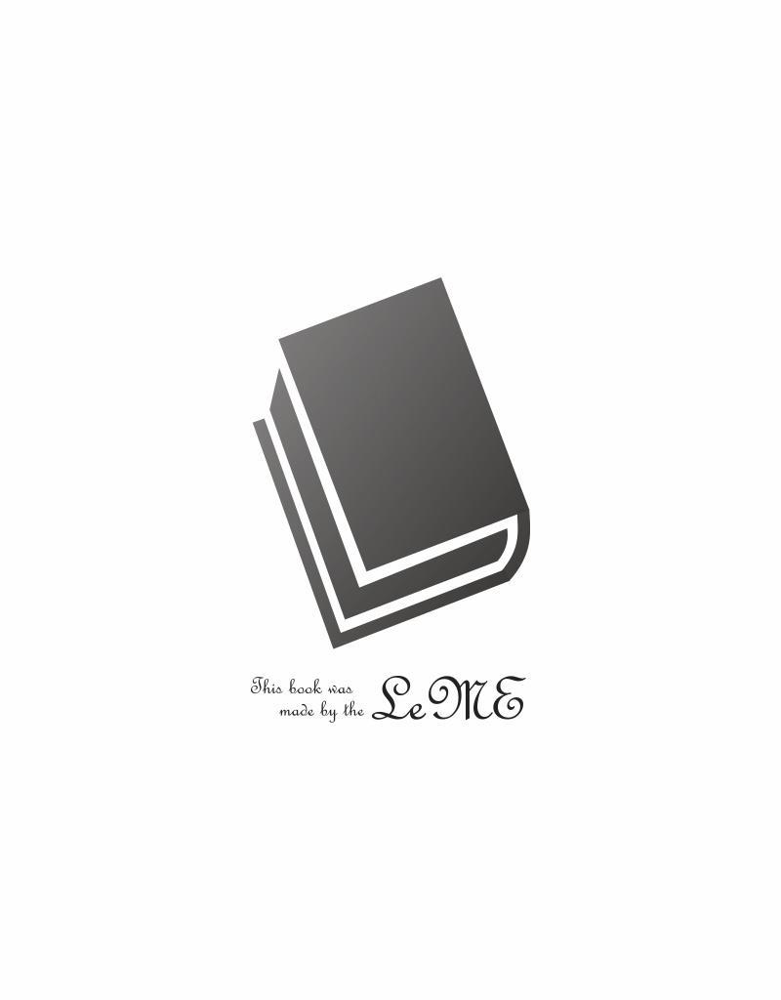